-
Array detail page
11:48:29 AM / 00:01:27:911 Fail
Array detail page
12.17.2024 11:48:29 AM 12.17.2024 11:49:57 AM 00:01:27:911 · #test-id=1PassValidate user can navigate to Arrays in pythonGiven The user is on the DS Introduction page as signedInWhen The user clicks on Get Started link for arrayGiven The user is on the array details pageWhen The user click on Array in python linkThen the user is navigated to array in arrays in pythonPassValidate user can Try here link page from Arrays in pythonGiven The user is on the DS Introduction page as signedInWhen The user clicks on Get Started link for arrayGiven The user is on the arrays in python pageWhen User clicks Try here linkThen User should navigate to tryEditor pagePassValidate user navigated to array details page when clicked on get startedGiven The user is on the DS Introduction page as signedInWhen The user clicks on Get Started link for arrayThen The user is on the array details pageFailError message displayed for invalid code on try Editor for Queue operationsGiven The user is on the DS Introduction page as signedInWhen The user clicks on Get Started link for arrayGiven The user is on the arrays in python pageWhen User writes invalid code and clicks run buttonThen The user should able to see an error message in alert windowStep skippedHooks.Hooks.takeScreenshot(io.cucumber.java.Scenario)screenshot PassNo error message displayed for empty code on try editor for array in pythonGiven The user is on the DS Introduction page as signedInWhen The user clicks on Get Started link for arrayGiven The user is on the arrays in python pageWhen User clicks on run button with empty codeThen The user should not see any error message or alertFailValid code on try editor for arrays in python runs successfullyGiven The user is on the DS Introduction page as signedInWhen The user clicks on Get Started link for arrayGiven The user is on the arrays in python pageWhen User writes valid code and clicks run buttonThen The user should able to see output in the consoleStep skippedHooks.Hooks.takeScreenshot(io.cucumber.java.Scenario)screenshot
PassNo error message displayed for empty code on try editor for array in pythonGiven The user is on the DS Introduction page as signedInWhen The user clicks on Get Started link for arrayGiven The user is on the arrays in python pageWhen User clicks on run button with empty codeThen The user should not see any error message or alertFailValid code on try editor for arrays in python runs successfullyGiven The user is on the DS Introduction page as signedInWhen The user clicks on Get Started link for arrayGiven The user is on the arrays in python pageWhen User writes valid code and clicks run buttonThen The user should able to see output in the consoleStep skippedHooks.Hooks.takeScreenshot(io.cucumber.java.Scenario)screenshot PassValidate user can navigate to Arrays using listGiven The user is on the DS Introduction page as signedInWhen The user clicks on Get Started link for arrayGiven The user is on the array details pageWhen The user click on Array using list linkThen the user is navigated to array in Array using listPassValidate user can Try here link page from Array using listGiven The user is on the DS Introduction page as signedInWhen The user clicks on Get Started link for arrayGiven The user is on the Array using listWhen User clicks Try here linkThen User should navigate to tryEditor pageFailError message displayed for invalid code on try Editor for Array using listGiven The user is on the DS Introduction page as signedInWhen The user clicks on Get Started link for arrayGiven The user is on the Array using listWhen User writes invalid code and clicks run buttonThen The user should able to see an error message in alert windowStep skippedHooks.Hooks.takeScreenshot(io.cucumber.java.Scenario)screenshot
PassValidate user can navigate to Arrays using listGiven The user is on the DS Introduction page as signedInWhen The user clicks on Get Started link for arrayGiven The user is on the array details pageWhen The user click on Array using list linkThen the user is navigated to array in Array using listPassValidate user can Try here link page from Array using listGiven The user is on the DS Introduction page as signedInWhen The user clicks on Get Started link for arrayGiven The user is on the Array using listWhen User clicks Try here linkThen User should navigate to tryEditor pageFailError message displayed for invalid code on try Editor for Array using listGiven The user is on the DS Introduction page as signedInWhen The user clicks on Get Started link for arrayGiven The user is on the Array using listWhen User writes invalid code and clicks run buttonThen The user should able to see an error message in alert windowStep skippedHooks.Hooks.takeScreenshot(io.cucumber.java.Scenario)screenshot PassNo error message displayed for empty code on try editor for Array using listGiven The user is on the DS Introduction page as signedInWhen The user clicks on Get Started link for arrayGiven The user is on the Array using listWhen User clicks on run button with empty codeThen The user should not see any error message or alertFailValid code on try editor for Array using list runs successfullyGiven The user is on the DS Introduction page as signedInWhen The user clicks on Get Started link for arrayGiven The user is on the Array using listWhen User writes valid code and clicks run buttonThen The user should able to see output in the consoleStep skippedHooks.Hooks.takeScreenshot(io.cucumber.java.Scenario)screenshot
PassNo error message displayed for empty code on try editor for Array using listGiven The user is on the DS Introduction page as signedInWhen The user clicks on Get Started link for arrayGiven The user is on the Array using listWhen User clicks on run button with empty codeThen The user should not see any error message or alertFailValid code on try editor for Array using list runs successfullyGiven The user is on the DS Introduction page as signedInWhen The user clicks on Get Started link for arrayGiven The user is on the Array using listWhen User writes valid code and clicks run buttonThen The user should able to see output in the consoleStep skippedHooks.Hooks.takeScreenshot(io.cucumber.java.Scenario)screenshot PassValidate user can navigate to basic opertaions in listsGiven The user is on the DS Introduction page as signedInWhen The user clicks on Get Started link for arrayGiven The user is on the array details pageWhen The user click on basic operations in listsThen the user is navigated to basic opertaions in listsPassValidate user can Try here link page from Basic operations in listsGiven The user is on the DS Introduction page as signedInWhen The user clicks on Get Started link for arrayGiven The user is on the Basic operations in listsWhen User clicks Try here linkThen User should navigate to tryEditor pageFailError message displayed for invalid code on try Editor for Basic operations in listsGiven The user is on the DS Introduction page as signedInWhen The user clicks on Get Started link for arrayGiven The user is on the Basic operations in listsWhen User writes invalid code and clicks run buttonThen The user should able to see an error message in alert windowStep skippedHooks.Hooks.takeScreenshot(io.cucumber.java.Scenario)screenshot
PassValidate user can navigate to basic opertaions in listsGiven The user is on the DS Introduction page as signedInWhen The user clicks on Get Started link for arrayGiven The user is on the array details pageWhen The user click on basic operations in listsThen the user is navigated to basic opertaions in listsPassValidate user can Try here link page from Basic operations in listsGiven The user is on the DS Introduction page as signedInWhen The user clicks on Get Started link for arrayGiven The user is on the Basic operations in listsWhen User clicks Try here linkThen User should navigate to tryEditor pageFailError message displayed for invalid code on try Editor for Basic operations in listsGiven The user is on the DS Introduction page as signedInWhen The user clicks on Get Started link for arrayGiven The user is on the Basic operations in listsWhen User writes invalid code and clicks run buttonThen The user should able to see an error message in alert windowStep skippedHooks.Hooks.takeScreenshot(io.cucumber.java.Scenario)screenshot PassNo error message displayed for empty code on try editor for basic operations in listsGiven The user is on the DS Introduction page as signedInWhen The user clicks on Get Started link for arrayGiven The user is on the Basic operations in listsWhen User clicks on run button with empty codeThen The user should not see any error message or alertFailValid code on try editor for basic operations in lists runs successfullyGiven The user is on the DS Introduction page as signedInWhen The user clicks on Get Started link for arrayGiven The user is on the Basic operations in listsWhen User writes valid code and clicks run buttonThen The user should able to see output in the consoleStep skippedHooks.Hooks.takeScreenshot(io.cucumber.java.Scenario)screenshot
PassNo error message displayed for empty code on try editor for basic operations in listsGiven The user is on the DS Introduction page as signedInWhen The user clicks on Get Started link for arrayGiven The user is on the Basic operations in listsWhen User clicks on run button with empty codeThen The user should not see any error message or alertFailValid code on try editor for basic operations in lists runs successfullyGiven The user is on the DS Introduction page as signedInWhen The user clicks on Get Started link for arrayGiven The user is on the Basic operations in listsWhen User writes valid code and clicks run buttonThen The user should able to see output in the consoleStep skippedHooks.Hooks.takeScreenshot(io.cucumber.java.Scenario)screenshot PassValidate user can navigate to applications of arrayGiven The user is on the DS Introduction page as signedInWhen The user clicks on Get Started link for arrayGiven The user is on the array details pageWhen The user click on applications of array linkThen the user is navigated to applications of arrayPassValidate user can Try here link page from applications of arrayGiven The user is on the DS Introduction page as signedInWhen The user clicks on Get Started link for arrayGiven The user is on the applications of arrayWhen User clicks Try here linkThen User should navigate to tryEditor pageFailError message displayed for invalid code on try Editor for applications of arrayGiven The user is on the DS Introduction page as signedInWhen The user clicks on Get Started link for arrayGiven The user is on the applications of arrayWhen User writes invalid code and clicks run buttonThen The user should able to see an error message in alert windowStep skippedHooks.Hooks.takeScreenshot(io.cucumber.java.Scenario)screenshot
PassValidate user can navigate to applications of arrayGiven The user is on the DS Introduction page as signedInWhen The user clicks on Get Started link for arrayGiven The user is on the array details pageWhen The user click on applications of array linkThen the user is navigated to applications of arrayPassValidate user can Try here link page from applications of arrayGiven The user is on the DS Introduction page as signedInWhen The user clicks on Get Started link for arrayGiven The user is on the applications of arrayWhen User clicks Try here linkThen User should navigate to tryEditor pageFailError message displayed for invalid code on try Editor for applications of arrayGiven The user is on the DS Introduction page as signedInWhen The user clicks on Get Started link for arrayGiven The user is on the applications of arrayWhen User writes invalid code and clicks run buttonThen The user should able to see an error message in alert windowStep skippedHooks.Hooks.takeScreenshot(io.cucumber.java.Scenario)screenshot PassNo error message displayed for empty code on try editor for applications of arrayGiven The user is on the DS Introduction page as signedInWhen The user clicks on Get Started link for arrayGiven The user is on the applications of arrayWhen User clicks on run button with empty codeThen The user should not see any error message or alertFailValid code on try editor for applications of array runs successfullyGiven The user is on the DS Introduction page as signedInWhen The user clicks on Get Started link for arrayGiven The user is on the applications of arrayWhen User writes valid code and clicks run buttonThen The user should able to see output in the consoleStep skippedHooks.Hooks.takeScreenshot(io.cucumber.java.Scenario)screenshot
PassNo error message displayed for empty code on try editor for applications of arrayGiven The user is on the DS Introduction page as signedInWhen The user clicks on Get Started link for arrayGiven The user is on the applications of arrayWhen User clicks on run button with empty codeThen The user should not see any error message or alertFailValid code on try editor for applications of array runs successfullyGiven The user is on the DS Introduction page as signedInWhen The user clicks on Get Started link for arrayGiven The user is on the applications of arrayWhen User writes valid code and clicks run buttonThen The user should able to see output in the consoleStep skippedHooks.Hooks.takeScreenshot(io.cucumber.java.Scenario)screenshot Passvalidate user able to navigate to practice question page for search the array questionGiven The user is on the DS Introduction page as signedInWhen The user clicks on Get Started link for arrayGiven The user is on the practice questions pageWhen the user click on The Search the array linkThen the user should be redirected to practice question page for search the arrayPassvalidate user able to navigate to practice question page for max consecutive ones questionGiven The user is on the DS Introduction page as signedInWhen The user clicks on Get Started link for arrayGiven The user is on the practice questions pageWhen the user click on The Max Consecutive Ones linkThen the user should be redirected to practice question page for max consecutive onesPassvalidate user able to navigate to practice question page for even number questionGiven The user is on the DS Introduction page as signedInWhen The user clicks on Get Started link for arrayGiven The user is on the practice questions pageWhen the user click on the even number question linkThen the user should be redirected to practice question page for even number of digitsPassvalidate user able to navigate to practice question page for sorted array questionGiven The user is on the DS Introduction page as signedInWhen The user clicks on Get Started link for arrayGiven The user is on the practice questions pageWhen the user click on the sorted array linkThen the user should be redirected to practice question page for sorted arrayPassValidate user is able to run the code in tryEditor for Search the array linkPassValidate user is able to run the code in tryEditor for Search the array linkGiven The user is on the DS Introduction page as signedInWhen The user clicks on Get Started link for arrayGiven The user is on the Practice Questions page of Search array pageWhen The user enter python code in tryEditor page sheet "pythonCode" and row 0 for the Question and click on run buttonThen the user should be presented with the Run result from sheet "pythonCode" and row 0PassValidate user is able to Submit the code in tryEditor for Search the array linkPassValidate user is able to Submit the code in tryEditor for Search the array linkGiven The user is on the DS Introduction page as signedInWhen The user clicks on Get Started link for arrayGiven The user is on the Practice Questions page of Search array pageWhen The user enter python code in tryEditor page sheet "pythonCode" and row 1 for the Question and click on submit buttonThen the user should be presented with the Run result from sheet "pythonCode" and row 1PassValidate user is presented with error message for the code with the invalid syntax in tryEditor for search the array linkGiven The user is on the DS Introduction page as signedInWhen The user clicks on Get Started link for arrayGiven The user is on the Practice Questions page of Search array pageWhen the user click on run buttonThen The user should see an alert error message as "SyntaxError: bad input on line 2"PassValidate user is able to run the code in tryEditor for Max Consecutive OnesPassValidate user is able to run the code in tryEditor for Max Consecutive OnesGiven The user is on the DS Introduction page as signedInWhen The user clicks on Get Started link for arrayGiven The user is on the Practice Questions page of Max Consecutive OnesWhen The user enter python code in tryEditor page sheet "pythonCode" and row 2 for the Question and click on run buttonThen the user should be presented with the Run result from sheet "pythonCode" and row 2PassValidate user is able to Submit the code in tryEditor for Max Consecutive OnesPassValidate user is able to Submit the code in tryEditor for Max Consecutive OnesGiven The user is on the DS Introduction page as signedInWhen The user clicks on Get Started link for arrayGiven The user is on the Practice Questions page of Max Consecutive OnesWhen The user enter python code in tryEditor page sheet "pythonCode" and row 3 for the Question and click on submit buttonThen the user should be presented with the Run result from sheet "pythonCode" and row 3PassValidate user is presented with error message for the code with the invalid syntax in tryEditor for Max Consecutive OnesGiven The user is on the DS Introduction page as signedInWhen The user clicks on Get Started link for arrayGiven The user is on the Practice Questions page of Max Consecutive OnesWhen the user click on run buttonThen The user should see an alert error message as "SyntaxError: bad input on line 2"PassValidate user is able to run the code in tryEditor for Even number of digitsPassValidate user is able to run the code in tryEditor for Even number of digitsGiven The user is on the DS Introduction page as signedInWhen The user clicks on Get Started link for arrayGiven The user is on the Practice Questions page of Find Numbers with Even Number of DigitsWhen The user enter python code in tryEditor page sheet "pythonCode" and row 4 for the Question and click on run buttonThen the user should be presented with the Run result from sheet "pythonCode" and row 4PassValidate user is able to Submit the code in tryEditor for Even number of digitsPassValidate user is able to Submit the code in tryEditor for Even number of digitsGiven The user is on the DS Introduction page as signedInWhen The user clicks on Get Started link for arrayGiven The user is on the Practice Questions page of Find Numbers with Even Number of DigitsWhen The user enter python code in tryEditor page sheet "pythonCode" and row 5 for the Question and click on submit buttonThen the user should be presented with the Run result from sheet "pythonCode" and row 5PassValidate user is presented with error message for the code with the invalid syntax in tryEditor for Even number of digitsGiven The user is on the DS Introduction page as signedInWhen The user clicks on Get Started link for arrayGiven The user is on the Practice Questions page of Find Numbers with Even Number of DigitsWhen the user click on run buttonThen The user should see an alert error message as "SyntaxError: bad input on line 2"PassValidate user is able to run the code in tryEditor for Squares of a Sorted ArrayPassValidate user is able to run the code in tryEditor for Squares of a Sorted ArrayGiven The user is on the DS Introduction page as signedInWhen The user clicks on Get Started link for arrayGiven The user is on the Practice Questions page of Squares of a Sorted ArrayWhen The user enter python code in tryEditor page sheet "pythonCode" and row 6 for the Question and click on run buttonThen the user should be presented with the Run result from sheet "pythonCode" and row 6PassValidate user is able to Submit the code in tryEditor for Squares of a Sorted ArrayPassValidate user is able to Submit the code in tryEditor for Squares of a Sorted ArrayGiven The user is on the DS Introduction page as signedInWhen The user clicks on Get Started link for arrayGiven The user is on the Practice Questions page of Squares of a Sorted ArrayWhen The user enter python code in tryEditor page sheet "pythonCode" and row 7 for the Question and click on submit buttonThen the user should be presented with the Run result from sheet "pythonCode" and row 7PassValidate user is presented with error message for the code with the invalid syntax in tryEditor for Squares of a Sorted ArrayGiven The user is on the DS Introduction page as signedInWhen The user clicks on Get Started link for arrayGiven The user is on the Practice Questions page of Squares of a Sorted ArrayWhen the user click on run buttonThen The user should see an alert error message as "SyntaxError: bad input on line 2"
Passvalidate user able to navigate to practice question page for search the array questionGiven The user is on the DS Introduction page as signedInWhen The user clicks on Get Started link for arrayGiven The user is on the practice questions pageWhen the user click on The Search the array linkThen the user should be redirected to practice question page for search the arrayPassvalidate user able to navigate to practice question page for max consecutive ones questionGiven The user is on the DS Introduction page as signedInWhen The user clicks on Get Started link for arrayGiven The user is on the practice questions pageWhen the user click on The Max Consecutive Ones linkThen the user should be redirected to practice question page for max consecutive onesPassvalidate user able to navigate to practice question page for even number questionGiven The user is on the DS Introduction page as signedInWhen The user clicks on Get Started link for arrayGiven The user is on the practice questions pageWhen the user click on the even number question linkThen the user should be redirected to practice question page for even number of digitsPassvalidate user able to navigate to practice question page for sorted array questionGiven The user is on the DS Introduction page as signedInWhen The user clicks on Get Started link for arrayGiven The user is on the practice questions pageWhen the user click on the sorted array linkThen the user should be redirected to practice question page for sorted arrayPassValidate user is able to run the code in tryEditor for Search the array linkPassValidate user is able to run the code in tryEditor for Search the array linkGiven The user is on the DS Introduction page as signedInWhen The user clicks on Get Started link for arrayGiven The user is on the Practice Questions page of Search array pageWhen The user enter python code in tryEditor page sheet "pythonCode" and row 0 for the Question and click on run buttonThen the user should be presented with the Run result from sheet "pythonCode" and row 0PassValidate user is able to Submit the code in tryEditor for Search the array linkPassValidate user is able to Submit the code in tryEditor for Search the array linkGiven The user is on the DS Introduction page as signedInWhen The user clicks on Get Started link for arrayGiven The user is on the Practice Questions page of Search array pageWhen The user enter python code in tryEditor page sheet "pythonCode" and row 1 for the Question and click on submit buttonThen the user should be presented with the Run result from sheet "pythonCode" and row 1PassValidate user is presented with error message for the code with the invalid syntax in tryEditor for search the array linkGiven The user is on the DS Introduction page as signedInWhen The user clicks on Get Started link for arrayGiven The user is on the Practice Questions page of Search array pageWhen the user click on run buttonThen The user should see an alert error message as "SyntaxError: bad input on line 2"PassValidate user is able to run the code in tryEditor for Max Consecutive OnesPassValidate user is able to run the code in tryEditor for Max Consecutive OnesGiven The user is on the DS Introduction page as signedInWhen The user clicks on Get Started link for arrayGiven The user is on the Practice Questions page of Max Consecutive OnesWhen The user enter python code in tryEditor page sheet "pythonCode" and row 2 for the Question and click on run buttonThen the user should be presented with the Run result from sheet "pythonCode" and row 2PassValidate user is able to Submit the code in tryEditor for Max Consecutive OnesPassValidate user is able to Submit the code in tryEditor for Max Consecutive OnesGiven The user is on the DS Introduction page as signedInWhen The user clicks on Get Started link for arrayGiven The user is on the Practice Questions page of Max Consecutive OnesWhen The user enter python code in tryEditor page sheet "pythonCode" and row 3 for the Question and click on submit buttonThen the user should be presented with the Run result from sheet "pythonCode" and row 3PassValidate user is presented with error message for the code with the invalid syntax in tryEditor for Max Consecutive OnesGiven The user is on the DS Introduction page as signedInWhen The user clicks on Get Started link for arrayGiven The user is on the Practice Questions page of Max Consecutive OnesWhen the user click on run buttonThen The user should see an alert error message as "SyntaxError: bad input on line 2"PassValidate user is able to run the code in tryEditor for Even number of digitsPassValidate user is able to run the code in tryEditor for Even number of digitsGiven The user is on the DS Introduction page as signedInWhen The user clicks on Get Started link for arrayGiven The user is on the Practice Questions page of Find Numbers with Even Number of DigitsWhen The user enter python code in tryEditor page sheet "pythonCode" and row 4 for the Question and click on run buttonThen the user should be presented with the Run result from sheet "pythonCode" and row 4PassValidate user is able to Submit the code in tryEditor for Even number of digitsPassValidate user is able to Submit the code in tryEditor for Even number of digitsGiven The user is on the DS Introduction page as signedInWhen The user clicks on Get Started link for arrayGiven The user is on the Practice Questions page of Find Numbers with Even Number of DigitsWhen The user enter python code in tryEditor page sheet "pythonCode" and row 5 for the Question and click on submit buttonThen the user should be presented with the Run result from sheet "pythonCode" and row 5PassValidate user is presented with error message for the code with the invalid syntax in tryEditor for Even number of digitsGiven The user is on the DS Introduction page as signedInWhen The user clicks on Get Started link for arrayGiven The user is on the Practice Questions page of Find Numbers with Even Number of DigitsWhen the user click on run buttonThen The user should see an alert error message as "SyntaxError: bad input on line 2"PassValidate user is able to run the code in tryEditor for Squares of a Sorted ArrayPassValidate user is able to run the code in tryEditor for Squares of a Sorted ArrayGiven The user is on the DS Introduction page as signedInWhen The user clicks on Get Started link for arrayGiven The user is on the Practice Questions page of Squares of a Sorted ArrayWhen The user enter python code in tryEditor page sheet "pythonCode" and row 6 for the Question and click on run buttonThen the user should be presented with the Run result from sheet "pythonCode" and row 6PassValidate user is able to Submit the code in tryEditor for Squares of a Sorted ArrayPassValidate user is able to Submit the code in tryEditor for Squares of a Sorted ArrayGiven The user is on the DS Introduction page as signedInWhen The user clicks on Get Started link for arrayGiven The user is on the Practice Questions page of Squares of a Sorted ArrayWhen The user enter python code in tryEditor page sheet "pythonCode" and row 7 for the Question and click on submit buttonThen the user should be presented with the Run result from sheet "pythonCode" and row 7PassValidate user is presented with error message for the code with the invalid syntax in tryEditor for Squares of a Sorted ArrayGiven The user is on the DS Introduction page as signedInWhen The user clicks on Get Started link for arrayGiven The user is on the Practice Questions page of Squares of a Sorted ArrayWhen the user click on run buttonThen The user should see an alert error message as "SyntaxError: bad input on line 2" -
DS Introduction Page
11:49:53 AM / 00:00:23:606 Fail
DS Introduction Page
12.17.2024 11:49:53 AM 12.17.2024 11:50:17 AM 00:00:23:606 · #test-id=369PassValidate the DS dropdown without signINGiven The user should open the DS Algo Portal URL in any supported browserWhen The user clicks the data structure dropdown arrowThen The user should able to see siz options Arrays Linked,List,Stack,Queue,Tree,Graph in dropdown menuPassVerify warning message when user navigate to DS details page without signInGiven The user is on the DS Introduction pageWhen The user clicks any Get Started buttons of data structures on the DS Introduction pageThen The user should able to see an warning message You are not logged inPassValidate user lands on register page when clicked on registerGiven The user is on the DS Introduction pageWhen The user clicks Register link on the DS Introduction pageThen The user should navigate to register pagePassClicking on get started for data structers lands on Data Structers details pageGiven The user is on the DS Introduction page as signedInWhen The user clicks the Get Started button of DS IntroductionThen The user should navigate to DS Intoduction details pagePassClicking on time complexity navigate to the pageGiven The user is on the DS Introduction page as signedInWhen The user clicks the Time Complexity buttonThen User should navigate to Time Complexity pagePassClicking on Try Here on time complexity opens python editorGiven The user is on the DS Introduction page as signedInWhen User clicks Try here link of time complexity pageThen User should navigate to tryEditor pageFailError message displayed for invalid code on try editor for Time ComplexityGiven User is on try here page of time complexity as signedInWhen User writes invalid code and clicks run buttonThen The user should able to see an error message in alert windowStep skippedHooks.Hooks.takeScreenshot(io.cucumber.java.Scenario)screenshot PassNo error message displayed for empty code on try editor for Time ComplexityGiven User is on try here page of time complexity as signedInWhen User clicks on run button with empty codeThen The user should not see any error message or alertFailValid code on try editor for Time Complexity runs successfullyGiven User is on try here page of time complexity as signedInWhen User writes valid code and clicks run buttonThen The user should able to see output in the consoleStep skippedHooks.Hooks.takeScreenshot(io.cucumber.java.Scenario)screenshot
PassNo error message displayed for empty code on try editor for Time ComplexityGiven User is on try here page of time complexity as signedInWhen User clicks on run button with empty codeThen The user should not see any error message or alertFailValid code on try editor for Time Complexity runs successfullyGiven User is on try here page of time complexity as signedInWhen User writes valid code and clicks run buttonThen The user should able to see output in the consoleStep skippedHooks.Hooks.takeScreenshot(io.cucumber.java.Scenario)screenshot
-
Title of your feature
11:50:12 AM / 00:00:28:877 Fail
Title of your feature
12.17.2024 11:50:12 AM 12.17.2024 11:50:41 AM 00:00:28:877 · #test-id=442I want to use this template for my feature filePassValidate user navigated to graph details page when clicked on get startedGiven The user is on the DS Introduction page as signedInWhen The user clicks on Get Started link for graphThen The user is on the graph details pagePassValidate user can navigate to Graph in Graph pageGiven The user is on the DS Introduction page as signedInWhen The user clicks on Get Started link for graphGiven The user is on the graph details pageWhen The user click on graph link in graph details pageThen the user is navigated to graph page under graph detailsPassValidate user can Try here link page from graphsGiven The user is on the DS Introduction page as signedInWhen The user clicks on Get Started link for graphGiven The user is on the graphs page under graph detialsWhen User clicks Try here linkThen User should navigate to tryEditor pageFailError message displayed for invalid code on try Editor for graphs pageGiven The user is on the DS Introduction page as signedInWhen The user clicks on Get Started link for graphGiven The user is on the graphs page under graph detialsWhen User writes invalid code and clicks run buttonThen The user should able to see an error message in alert windowStep skippedHooks.Hooks.takeScreenshot(io.cucumber.java.Scenario)screenshot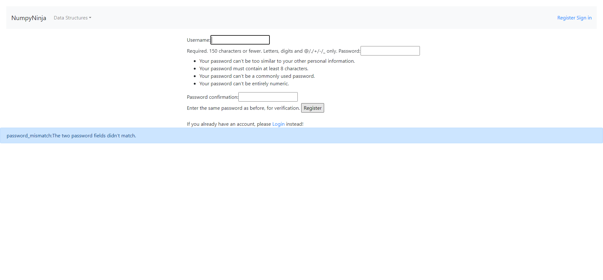PassNo error message displayed for empty code on try editor for graphs pageGiven The user is on the DS Introduction page as signedInWhen The user clicks on Get Started link for graphGiven The user is on the graphs page under graph detialsWhen User clicks on run button with empty codeThen The user should not see any error message or alertFailValid code on try editor for graphs runs successfullyGiven The user is on the DS Introduction page as signedInWhen The user clicks on Get Started link for graphGiven The user is on the graphs page under graph detialsWhen User writes valid code and clicks run buttonThen The user should able to see output in the consoleStep skippedHooks.Hooks.takeScreenshot(io.cucumber.java.Scenario)screenshot PassValidate user can navigate to Graph Representations pageGiven The user is on the DS Introduction page as signedInWhen The user clicks on Get Started link for graphGiven The user is on the graph details pageWhen The user click on graph representations linkThen the user is navigated to graph representations pagePassValidate user can click on Try here link from graph representations pageGiven The user is on the DS Introduction page as signedInWhen The user clicks on Get Started link for graphGiven The user is on the graphs representations pageWhen User clicks Try here linkThen User should navigate to tryEditor pagePassError message displayed for invalid code on try Editor for graph representations pageGiven The user is on the DS Introduction page as signedInWhen The user clicks on Get Started link for graphGiven The user is on the graphs representations pageWhen User writes invalid code and clicks run buttonThen The user should able to see an error message in alert windowPassNo error message displayed for empty code on try editor for graph representations pageGiven The user is on the DS Introduction page as signedInWhen The user clicks on Get Started link for graphGiven The user is on the graphs representations pageWhen User clicks on run button with empty codeThen The user should not see any error message or alertFailValid code on try editor for graph representations runs successfullyGiven The user is on the DS Introduction page as signedInWhen The user clicks on Get Started link for graphGiven The user is on the graphs representations pageWhen User writes valid code and clicks run buttonThen The user should able to see output in the consoleStep skippedHooks.Hooks.takeScreenshot(io.cucumber.java.Scenario)screenshot
PassValidate user can navigate to Graph Representations pageGiven The user is on the DS Introduction page as signedInWhen The user clicks on Get Started link for graphGiven The user is on the graph details pageWhen The user click on graph representations linkThen the user is navigated to graph representations pagePassValidate user can click on Try here link from graph representations pageGiven The user is on the DS Introduction page as signedInWhen The user clicks on Get Started link for graphGiven The user is on the graphs representations pageWhen User clicks Try here linkThen User should navigate to tryEditor pagePassError message displayed for invalid code on try Editor for graph representations pageGiven The user is on the DS Introduction page as signedInWhen The user clicks on Get Started link for graphGiven The user is on the graphs representations pageWhen User writes invalid code and clicks run buttonThen The user should able to see an error message in alert windowPassNo error message displayed for empty code on try editor for graph representations pageGiven The user is on the DS Introduction page as signedInWhen The user clicks on Get Started link for graphGiven The user is on the graphs representations pageWhen User clicks on run button with empty codeThen The user should not see any error message or alertFailValid code on try editor for graph representations runs successfullyGiven The user is on the DS Introduction page as signedInWhen The user clicks on Get Started link for graphGiven The user is on the graphs representations pageWhen User writes valid code and clicks run buttonThen The user should able to see output in the consoleStep skippedHooks.Hooks.takeScreenshot(io.cucumber.java.Scenario)screenshot
-
DS Homepage
11:50:37 AM / 00:00:03:178 Pass
DS Homepage
12.17.2024 11:50:37 AM 12.17.2024 11:50:40 AM 00:00:03:178 · #test-id=553PassValidate user lands on default home pageWhen The user enter the DS_Algo PortalThen The user should landed on the DS_Algo Get Started page with message You are at the right placePassValidate user navigate to DS Intro PageGiven The user should open the DS Algo Portal URL in any supported browserWhen The user clicks the Get Started buttonThen The user should land in Data Structure Introduction Page with register and Sign in links -
Linked List
11:50:40 AM / 00:01:34:934 Fail
Linked List
12.17.2024 11:50:40 AM 12.17.2024 11:52:15 AM 00:01:34:934 · #test-id=568PassDS_algo Home pageGiven The user is on the DS Introduction page as signedInAnd User clicks on Get Started button from Linked List panelThen The user is redirected to Linked List page.PassLinked List home pageGiven The user is on the DS Introduction page as signedInAnd User clicks on Get Started button from Linked List panelWhen The user clicks on Linked List from the Data Structure dropdown menu.Then The user is redirected to Linked List page.PassLinked List home pageGiven The user is on the DS Introduction page as signedInAnd User clicks on Get Started button from Linked List panelWhen The user clicks Introduction linkThen The user is redirected to Introduction page.PassLinked List home pageGiven The user is on the DS Introduction page as signedInAnd User clicks on Get Started button from Linked List panelGiven The user is on the Introduction pageWhen The user clicks Try Here buttonThen The user is redirected to a page having Editor and run buttonPassLL_Try Here Editor page with empty dataGiven The user is on the DS Introduction page as signedInAnd User clicks on Get Started button from Linked List panelGiven The user is on the editor page of Introduction pageWhen The user writes no code inside editor window and clicks on Run buttonThen Nothing happens to the Editor page and no error message is displayedPassLL_Try Here Editor page with valid dataGiven The user is on the DS Introduction page as signedInAnd User clicks on Get Started button from Linked List panelGiven The user is on the editor page of Introduction pageWhen The user writes the valid python code and clicks on Run buttonThen The user is able to see the output inside the console.FailLL_Try Here Editor page with invalid dataGiven The user is on the DS Introduction page as signedInAnd User clicks on Get Started button from Linked List panelGiven The user is on the editor page of Introduction pageWhen The user writes the invalid python code and clicks on Run buttonThen The user see error msg in alert windowStep skippedHooks.Hooks.takeScreenshot(io.cucumber.java.Scenario)screenshot PassLinked List home pageGiven The user is on the DS Introduction page as signedInAnd User clicks on Get Started button from Linked List panelGiven The user is on the Introduction pageWhen The user clicks Creating Linked LIst linkThen The user is redirected to Creating Linked List page.PassCreating Linked LIstGiven The user is on the DS Introduction page as signedInAnd User clicks on Get Started button from Linked List panelGiven The user is on the Creating Linked LIst pageWhen The user clicks Try Here buttonThen The user is redirected to a page having Editor and run buttonPassLL_Try Here Editor page with empty dataGiven The user is on the DS Introduction page as signedInAnd User clicks on Get Started button from Linked List panelGiven The user is on the editor page of Creating Linked LIst pageWhen The user writes no code inside editor window and clicks on Run buttonThen Nothing happens to the Editor page and no error message is displayedFailLL_Try Here Editor page with valid dataGiven The user is on the DS Introduction page as signedInAnd User clicks on Get Started button from Linked List panelGiven The user is on the editor page of Creating Linked LIst pageWhen The user writes the valid python code and clicks on Run buttonThen The user is able to see the output inside the console.Step skippedHooks.Hooks.takeScreenshot(io.cucumber.java.Scenario)screenshot
PassLinked List home pageGiven The user is on the DS Introduction page as signedInAnd User clicks on Get Started button from Linked List panelGiven The user is on the Introduction pageWhen The user clicks Creating Linked LIst linkThen The user is redirected to Creating Linked List page.PassCreating Linked LIstGiven The user is on the DS Introduction page as signedInAnd User clicks on Get Started button from Linked List panelGiven The user is on the Creating Linked LIst pageWhen The user clicks Try Here buttonThen The user is redirected to a page having Editor and run buttonPassLL_Try Here Editor page with empty dataGiven The user is on the DS Introduction page as signedInAnd User clicks on Get Started button from Linked List panelGiven The user is on the editor page of Creating Linked LIst pageWhen The user writes no code inside editor window and clicks on Run buttonThen Nothing happens to the Editor page and no error message is displayedFailLL_Try Here Editor page with valid dataGiven The user is on the DS Introduction page as signedInAnd User clicks on Get Started button from Linked List panelGiven The user is on the editor page of Creating Linked LIst pageWhen The user writes the valid python code and clicks on Run buttonThen The user is able to see the output inside the console.Step skippedHooks.Hooks.takeScreenshot(io.cucumber.java.Scenario)screenshot PassLL_Try Here Editor page with invalid dataGiven The user is on the DS Introduction page as signedInAnd User clicks on Get Started button from Linked List panelGiven The user is on the editor page of Creating Linked LIst pageWhen The user writes the invalid python code and clicks on Run buttonThen The user see error msg in alert windowPassLinked List home pageGiven The user is on the DS Introduction page as signedInAnd User clicks on Get Started button from Linked List panelGiven The user is on the Creating Linked LIst pageWhen The user clicks Types of Linked List linkThen The user is directed to Types of Linked List page.PassTypes of Linked ListGiven The user is on the DS Introduction page as signedInAnd User clicks on Get Started button from Linked List panelGiven The user is on the Types of Linked List pageWhen The user clicks Try Here buttonThen The user is redirected to a page having Editor and run buttonFailLL_Try Here Editor page with empty dataGiven The user is on the DS Introduction page as signedInAnd User clicks on Get Started button from Linked List panelGiven The user is on the editor page of Types of Linked List pageWhen The user writes no code inside editor window and clicks on Run buttonThen Nothing happens to the Editor page and no error message is displayedStep skippedHooks.Hooks.takeScreenshot(io.cucumber.java.Scenario)screenshotFailLL_Try Here Editor page with valid dataGiven The user is on the DS Introduction page as signedInAnd User clicks on Get Started button from Linked List panelGiven The user is on the editor page of Types of Linked List pageWhen The user writes the valid python code and clicks on Run buttonThen The user is able to see the output inside the console.Step skippedHooks.Hooks.takeScreenshot(io.cucumber.java.Scenario)screenshot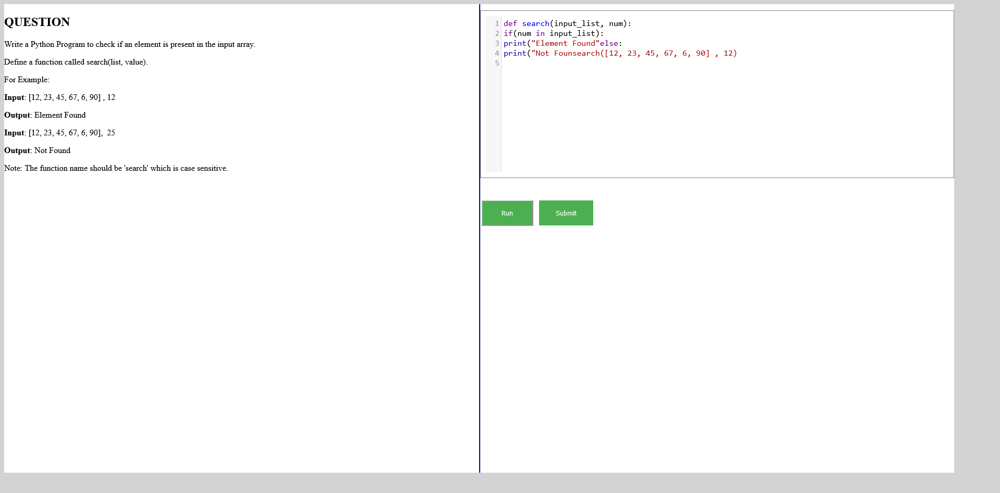FailLL_Try Here Editor page with invalid dataGiven The user is on the DS Introduction page as signedInAnd User clicks on Get Started button from Linked List panelGiven The user is on the editor page of Types of Linked List pageWhen The user writes the invalid python code and clicks on Run buttonThen The user see error msg in alert windowStep skippedHooks.Hooks.takeScreenshot(io.cucumber.java.Scenario)screenshot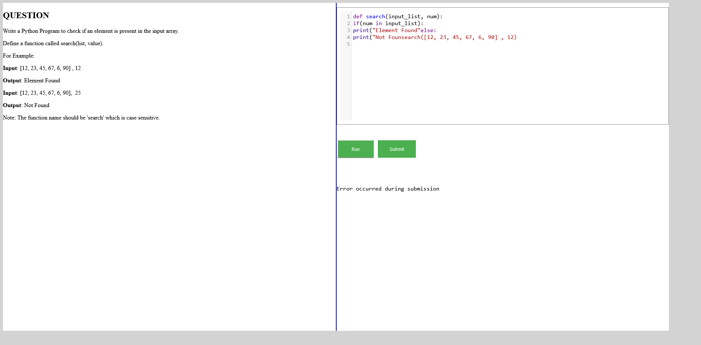PassLinked List home pageGiven The user is on the DS Introduction page as signedInAnd User clicks on Get Started button from Linked List panelGiven The user is on the Types of Linked List pageWhen The user clicks Implement Linked List in Python linkThen The user is redirected to Implement Linked List in Python page.PassImplement Linked List in PythonGiven The user is on the DS Introduction page as signedInAnd User clicks on Get Started button from Linked List panelGiven The user is on the Implement Linked List in Python pageWhen The user clicks Try Here buttonThen The user is redirected to a page having Editor and run buttonFailLL_Try Here Editor page with empty dataGiven The user is on the DS Introduction page as signedInAnd User clicks on Get Started button from Linked List panelGiven The user is on the editor page of Implement Linked List in Python pageWhen The user writes no code inside editor window and clicks on Run buttonThen Nothing happens to the Editor page and no error message is displayedStep skippedHooks.Hooks.takeScreenshot(io.cucumber.java.Scenario)screenshot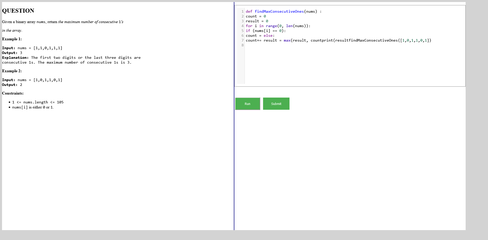FailLL_Try Here Editor page with valid dataGiven The user is on the DS Introduction page as signedInAnd User clicks on Get Started button from Linked List panelGiven The user is on the editor page of Implement Linked List in Python pageWhen The user writes the valid python code and clicks on Run buttonThen The user is able to see the output inside the console.Step skippedHooks.Hooks.takeScreenshot(io.cucumber.java.Scenario)screenshotFailLL_Try Here Editor page with invalid dataGiven The user is on the DS Introduction page as signedInAnd User clicks on Get Started button from Linked List panelGiven The user is on the editor page of Implement Linked List in Python pageWhen The user writes the invalid python code and clicks on Run buttonThen The user see error msg in alert windowStep skippedHooks.Hooks.takeScreenshot(io.cucumber.java.Scenario)screenshot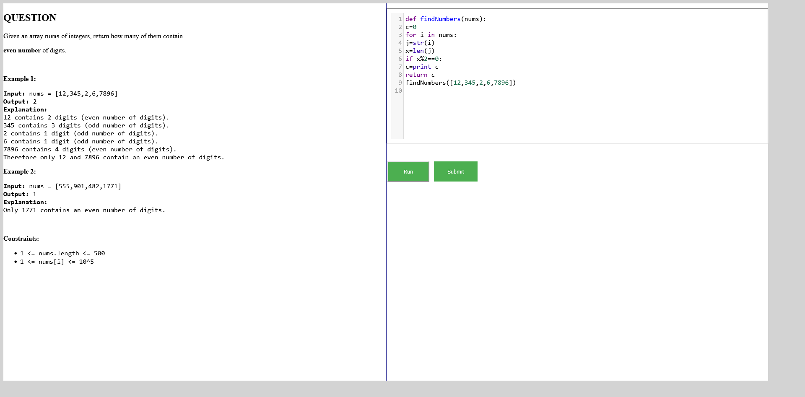PassLinked List home pageGiven The user is on the DS Introduction page as signedInAnd User clicks on Get Started button from Linked List panelGiven The user is on the Implement Linked List in Python pageWhen The user clicks Traversal linkThen The user is redirected to Traversal page.PassTraversalGiven The user is on the DS Introduction page as signedInAnd User clicks on Get Started button from Linked List panelGiven The user is on the Traversal pageWhen The user clicks Try Here buttonThen The user is redirected to a page having Editor and run buttonFailLL_Try Here Editor page with empty dataGiven The user is on the DS Introduction page as signedInAnd User clicks on Get Started button from Linked List panelGiven The user is on the editor page of Traversal pageWhen The user writes no code inside editor window and clicks on Run buttonThen Nothing happens to the Editor page and no error message is displayedStep skippedHooks.Hooks.takeScreenshot(io.cucumber.java.Scenario)screenshot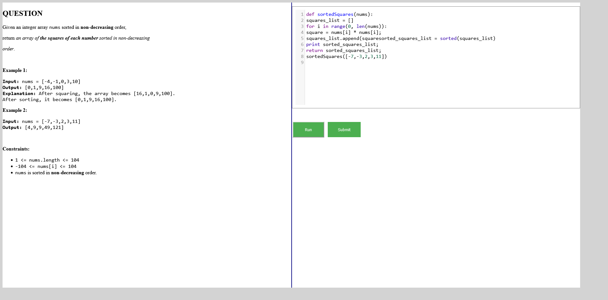FailLL_Try Here Editor page with valid dataGiven The user is on the DS Introduction page as signedInAnd User clicks on Get Started button from Linked List panelGiven The user is on the editor page of Traversal pageWhen The user writes the valid python code and clicks on Run buttonThen The user is able to see the output inside the console.Step skippedHooks.Hooks.takeScreenshot(io.cucumber.java.Scenario)screenshot
PassLL_Try Here Editor page with invalid dataGiven The user is on the DS Introduction page as signedInAnd User clicks on Get Started button from Linked List panelGiven The user is on the editor page of Creating Linked LIst pageWhen The user writes the invalid python code and clicks on Run buttonThen The user see error msg in alert windowPassLinked List home pageGiven The user is on the DS Introduction page as signedInAnd User clicks on Get Started button from Linked List panelGiven The user is on the Creating Linked LIst pageWhen The user clicks Types of Linked List linkThen The user is directed to Types of Linked List page.PassTypes of Linked ListGiven The user is on the DS Introduction page as signedInAnd User clicks on Get Started button from Linked List panelGiven The user is on the Types of Linked List pageWhen The user clicks Try Here buttonThen The user is redirected to a page having Editor and run buttonFailLL_Try Here Editor page with empty dataGiven The user is on the DS Introduction page as signedInAnd User clicks on Get Started button from Linked List panelGiven The user is on the editor page of Types of Linked List pageWhen The user writes no code inside editor window and clicks on Run buttonThen Nothing happens to the Editor page and no error message is displayedStep skippedHooks.Hooks.takeScreenshot(io.cucumber.java.Scenario)screenshotFailLL_Try Here Editor page with valid dataGiven The user is on the DS Introduction page as signedInAnd User clicks on Get Started button from Linked List panelGiven The user is on the editor page of Types of Linked List pageWhen The user writes the valid python code and clicks on Run buttonThen The user is able to see the output inside the console.Step skippedHooks.Hooks.takeScreenshot(io.cucumber.java.Scenario)screenshot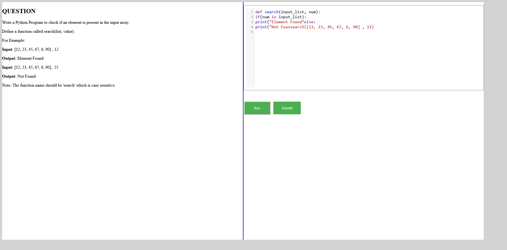FailLL_Try Here Editor page with invalid dataGiven The user is on the DS Introduction page as signedInAnd User clicks on Get Started button from Linked List panelGiven The user is on the editor page of Types of Linked List pageWhen The user writes the invalid python code and clicks on Run buttonThen The user see error msg in alert windowStep skippedHooks.Hooks.takeScreenshot(io.cucumber.java.Scenario)screenshot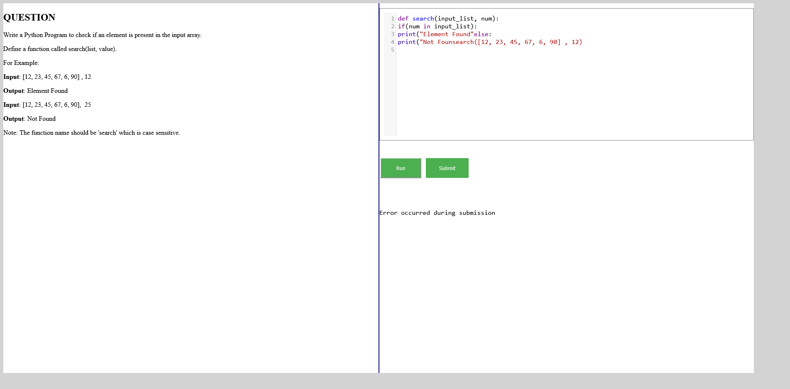PassLinked List home pageGiven The user is on the DS Introduction page as signedInAnd User clicks on Get Started button from Linked List panelGiven The user is on the Types of Linked List pageWhen The user clicks Implement Linked List in Python linkThen The user is redirected to Implement Linked List in Python page.PassImplement Linked List in PythonGiven The user is on the DS Introduction page as signedInAnd User clicks on Get Started button from Linked List panelGiven The user is on the Implement Linked List in Python pageWhen The user clicks Try Here buttonThen The user is redirected to a page having Editor and run buttonFailLL_Try Here Editor page with empty dataGiven The user is on the DS Introduction page as signedInAnd User clicks on Get Started button from Linked List panelGiven The user is on the editor page of Implement Linked List in Python pageWhen The user writes no code inside editor window and clicks on Run buttonThen Nothing happens to the Editor page and no error message is displayedStep skippedHooks.Hooks.takeScreenshot(io.cucumber.java.Scenario)screenshot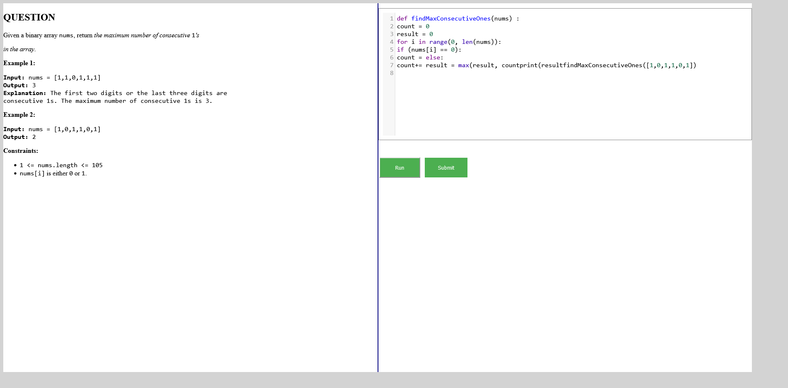FailLL_Try Here Editor page with valid dataGiven The user is on the DS Introduction page as signedInAnd User clicks on Get Started button from Linked List panelGiven The user is on the editor page of Implement Linked List in Python pageWhen The user writes the valid python code and clicks on Run buttonThen The user is able to see the output inside the console.Step skippedHooks.Hooks.takeScreenshot(io.cucumber.java.Scenario)screenshotFailLL_Try Here Editor page with invalid dataGiven The user is on the DS Introduction page as signedInAnd User clicks on Get Started button from Linked List panelGiven The user is on the editor page of Implement Linked List in Python pageWhen The user writes the invalid python code and clicks on Run buttonThen The user see error msg in alert windowStep skippedHooks.Hooks.takeScreenshot(io.cucumber.java.Scenario)screenshot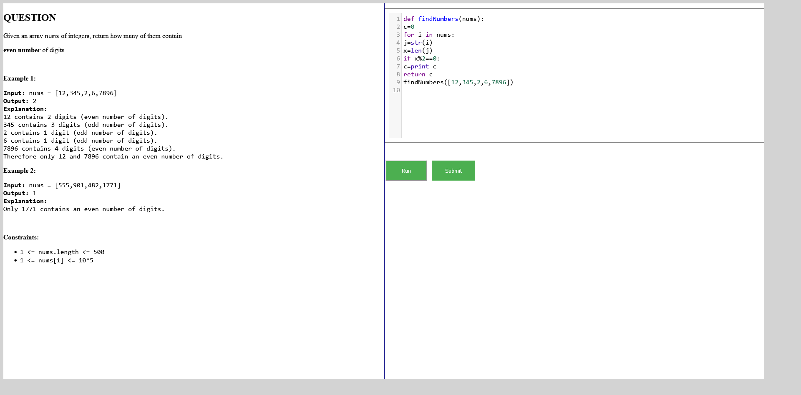PassLinked List home pageGiven The user is on the DS Introduction page as signedInAnd User clicks on Get Started button from Linked List panelGiven The user is on the Implement Linked List in Python pageWhen The user clicks Traversal linkThen The user is redirected to Traversal page.PassTraversalGiven The user is on the DS Introduction page as signedInAnd User clicks on Get Started button from Linked List panelGiven The user is on the Traversal pageWhen The user clicks Try Here buttonThen The user is redirected to a page having Editor and run buttonFailLL_Try Here Editor page with empty dataGiven The user is on the DS Introduction page as signedInAnd User clicks on Get Started button from Linked List panelGiven The user is on the editor page of Traversal pageWhen The user writes no code inside editor window and clicks on Run buttonThen Nothing happens to the Editor page and no error message is displayedStep skippedHooks.Hooks.takeScreenshot(io.cucumber.java.Scenario)screenshot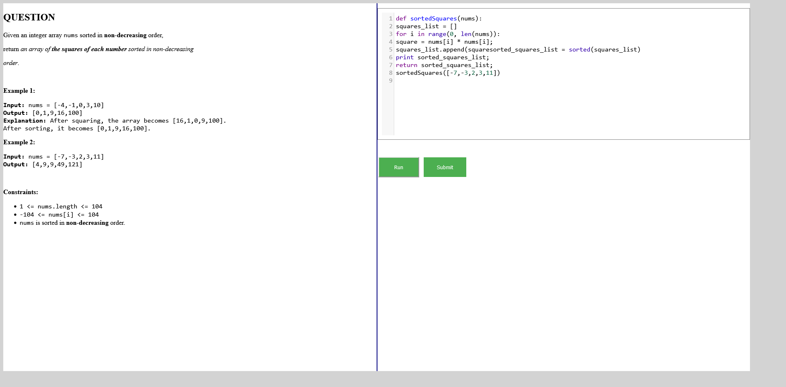FailLL_Try Here Editor page with valid dataGiven The user is on the DS Introduction page as signedInAnd User clicks on Get Started button from Linked List panelGiven The user is on the editor page of Traversal pageWhen The user writes the valid python code and clicks on Run buttonThen The user is able to see the output inside the console.Step skippedHooks.Hooks.takeScreenshot(io.cucumber.java.Scenario)screenshot FailLL_Try Here Editor page with invalid dataGiven The user is on the DS Introduction page as signedInAnd User clicks on Get Started button from Linked List panelGiven The user is on the editor page of Traversal pageWhen The user writes the invalid python code and clicks on Run buttonThen The user see error msg in alert windowStep skippedHooks.Hooks.takeScreenshot(io.cucumber.java.Scenario)screenshot
FailLL_Try Here Editor page with invalid dataGiven The user is on the DS Introduction page as signedInAnd User clicks on Get Started button from Linked List panelGiven The user is on the editor page of Traversal pageWhen The user writes the invalid python code and clicks on Run buttonThen The user see error msg in alert windowStep skippedHooks.Hooks.takeScreenshot(io.cucumber.java.Scenario)screenshot PassLinked List home pageGiven The user is on the DS Introduction page as signedInAnd User clicks on Get Started button from Linked List panelGiven The user is on the Traversal pageWhen The user clicks Insertion linkThen The user is redirected to Insertion page.PassInsertionGiven The user is on the DS Introduction page as signedInAnd User clicks on Get Started button from Linked List panelGiven The user is on the Insertion pageWhen The user clicks Try Here buttonThen The user is redirected to a page having Editor and run buttonFailLL_Try Here Editor page with empty dataGiven The user is on the DS Introduction page as signedInAnd User clicks on Get Started button from Linked List panelGiven The user is on the editor page of Insertion pageWhen The user writes no code inside editor window and clicks on Run buttonThen Nothing happens to the Editor page and no error message is displayedStep skippedHooks.Hooks.takeScreenshot(io.cucumber.java.Scenario)screenshotFailLL_Try Here Editor page with valid dataGiven The user is on the DS Introduction page as signedInAnd User clicks on Get Started button from Linked List panelGiven The user is on the editor page of Insertion pageWhen The user writes the valid python code and clicks on Run buttonThen The user is able to see the output inside the console.Step skippedHooks.Hooks.takeScreenshot(io.cucumber.java.Scenario)screenshot
PassLinked List home pageGiven The user is on the DS Introduction page as signedInAnd User clicks on Get Started button from Linked List panelGiven The user is on the Traversal pageWhen The user clicks Insertion linkThen The user is redirected to Insertion page.PassInsertionGiven The user is on the DS Introduction page as signedInAnd User clicks on Get Started button from Linked List panelGiven The user is on the Insertion pageWhen The user clicks Try Here buttonThen The user is redirected to a page having Editor and run buttonFailLL_Try Here Editor page with empty dataGiven The user is on the DS Introduction page as signedInAnd User clicks on Get Started button from Linked List panelGiven The user is on the editor page of Insertion pageWhen The user writes no code inside editor window and clicks on Run buttonThen Nothing happens to the Editor page and no error message is displayedStep skippedHooks.Hooks.takeScreenshot(io.cucumber.java.Scenario)screenshotFailLL_Try Here Editor page with valid dataGiven The user is on the DS Introduction page as signedInAnd User clicks on Get Started button from Linked List panelGiven The user is on the editor page of Insertion pageWhen The user writes the valid python code and clicks on Run buttonThen The user is able to see the output inside the console.Step skippedHooks.Hooks.takeScreenshot(io.cucumber.java.Scenario)screenshot FailLL_Try Here Editor page with invalid dataGiven The user is on the DS Introduction page as signedInAnd User clicks on Get Started button from Linked List panelGiven The user is on the editor page of Insertion pageWhen The user writes the invalid python code and clicks on Run buttonThen The user see error msg in alert windowStep skippedHooks.Hooks.takeScreenshot(io.cucumber.java.Scenario)screenshot
FailLL_Try Here Editor page with invalid dataGiven The user is on the DS Introduction page as signedInAnd User clicks on Get Started button from Linked List panelGiven The user is on the editor page of Insertion pageWhen The user writes the invalid python code and clicks on Run buttonThen The user see error msg in alert windowStep skippedHooks.Hooks.takeScreenshot(io.cucumber.java.Scenario)screenshot PassLinked List home pageGiven The user is on the DS Introduction page as signedInAnd User clicks on Get Started button from Linked List panelGiven The user is on the Insertion pageWhen The user clicks Deletion linkThen The user is redirected to Deletion page.PassDeletionGiven The user is on the DS Introduction page as signedInAnd User clicks on Get Started button from Linked List panelGiven The user is on the Deletion pageWhen The user clicks Try Here buttonThen The user is redirected to a page having Editor and run buttonFailLL_Try Here Editor page with empty dataGiven The user is on the DS Introduction page as signedInAnd User clicks on Get Started button from Linked List panelGiven The user is on the editor page of Deletion pageWhen The user writes no code inside editor window and clicks on Run buttonThen Nothing happens to the Editor page and no error message is displayedStep skippedHooks.Hooks.takeScreenshot(io.cucumber.java.Scenario)screenshot
PassLinked List home pageGiven The user is on the DS Introduction page as signedInAnd User clicks on Get Started button from Linked List panelGiven The user is on the Insertion pageWhen The user clicks Deletion linkThen The user is redirected to Deletion page.PassDeletionGiven The user is on the DS Introduction page as signedInAnd User clicks on Get Started button from Linked List panelGiven The user is on the Deletion pageWhen The user clicks Try Here buttonThen The user is redirected to a page having Editor and run buttonFailLL_Try Here Editor page with empty dataGiven The user is on the DS Introduction page as signedInAnd User clicks on Get Started button from Linked List panelGiven The user is on the editor page of Deletion pageWhen The user writes no code inside editor window and clicks on Run buttonThen Nothing happens to the Editor page and no error message is displayedStep skippedHooks.Hooks.takeScreenshot(io.cucumber.java.Scenario)screenshot FailLL_Try Here Editor page with valid dataGiven The user is on the DS Introduction page as signedInAnd User clicks on Get Started button from Linked List panelGiven The user is on the editor page of Deletion pageWhen The user writes the valid python code and clicks on Run buttonThen The user is able to see the output inside the console.Step skippedHooks.Hooks.takeScreenshot(io.cucumber.java.Scenario)screenshot
FailLL_Try Here Editor page with valid dataGiven The user is on the DS Introduction page as signedInAnd User clicks on Get Started button from Linked List panelGiven The user is on the editor page of Deletion pageWhen The user writes the valid python code and clicks on Run buttonThen The user is able to see the output inside the console.Step skippedHooks.Hooks.takeScreenshot(io.cucumber.java.Scenario)screenshot FailLL_Try Here Editor page with invalid dataGiven The user is on the DS Introduction page as signedInAnd User clicks on Get Started button from Linked List panelGiven The user is on the editor page of Deletion pageWhen The user writes the invalid python code and clicks on Run buttonThen The user see error msg in alert windowStep skippedHooks.Hooks.takeScreenshot(io.cucumber.java.Scenario)screenshot
FailLL_Try Here Editor page with invalid dataGiven The user is on the DS Introduction page as signedInAnd User clicks on Get Started button from Linked List panelGiven The user is on the editor page of Deletion pageWhen The user writes the invalid python code and clicks on Run buttonThen The user see error msg in alert windowStep skippedHooks.Hooks.takeScreenshot(io.cucumber.java.Scenario)screenshot PassIntroduction pageGiven The user is on the DS Introduction page as signedInAnd User clicks on Get Started button from Linked List panelGiven The user is on the Introduction pageWhen The user clicks Practice Questions linkThen The user is redirected to Practice Questions page.
PassIntroduction pageGiven The user is on the DS Introduction page as signedInAnd User clicks on Get Started button from Linked List panelGiven The user is on the Introduction pageWhen The user clicks Practice Questions linkThen The user is redirected to Practice Questions page. -
Login Feature
11:52:11 AM / 00:00:13:479 Pass
Login Feature
12.17.2024 11:52:11 AM 12.17.2024 11:52:24 AM 00:00:13:479 · #test-id=939I want to use this template for my feature filePassDS Algo Sign in Page with blank infoPassDS Algo Sign in Page with blank infoGiven The user is on the DS Algo Sign in PageWhen The user clicks login button after leaving the username textbox and paswword textbox blank from sheetname "Login" and row 3Then The error message "Please fill out this field." appears below Username textboxPassDS Algo Sign in Page with blank passwordPassDS Algo Sign in Page with blank passwordGiven The user is on the DS Algo Sign in PageWhen The user clicks login button after entering only username from sheetname "Login" and row 6Then The error message "Please fill out this field." appears below Pwd textboxPassDS Algo Sign in Page with blank usernamePassDS Algo Sign in Page with blank usernameGiven The user is on the DS Algo Sign in PageWhen The user clicks login button after entering only password from sheetname "Login" and row 6Then The error message "Please fill out this field." appears below Username textboxPassDS Algo Sign in Page with invalid username and passwordPassDS Algo Sign in Page with invalid username and passwordGiven The user is on the DS Algo Sign in PageWhen The user clicks login button after entering invalid username and invalid password from sheetname "Login" and row 4Then The user should able to see an error message "Invalid Username and Password".PassDS Algo Sign in Page with valid username and invalid passwordPassDS Algo Sign in Page with valid username and invalid passwordGiven The user is on the DS Algo Sign in PageWhen The user clicks login button after entering valid userName and invalid password from sheetname "Login" and row 7Then The user should able to see an error message "Invalid Username and Password".PassDS Algo Sign in Page with valid username and Valid passwordPassDS Algo Sign in Page with valid username and Valid passwordGiven The user is on the DS Algo Sign in PageWhen The user clicks login button after entering valid userName and password from sheetname "Login" and row 6Then user lands on the home page as signedIn -
Queue Details page
11:52:22 AM / 00:00:57:233 Fail
Queue Details page
12.17.2024 11:52:22 AM 12.17.2024 11:53:19 AM 00:00:57:233 · #test-id=998PassValidate user navigated to queue details page when clicked on get startedGiven The user is on the DS Introduction page as signedInWhen The user clicks on Get started link for QueueThen The user is on Queue Details pagePassValidate user can navigate to Implementations of Queue in PythonGiven The user is on the DS Introduction page as signedInWhen The user clicks on Get started link for QueueGiven The user is on Queue Details pageWhen The user clicks on Implementation of Queue python linkThen The user is on the Implimentation of Queue in Python pagePassValidate user can open try editor page from Implementation of Queue in pythonGiven The user is on the DS Introduction page as signedInWhen The user clicks on Get started link for QueueGiven The user on implementation Queue in python pageWhen User clicks Try here linkThen User should navigate to tryEditor pageFailError message displayed for invalid code on try editor for Implementation of Queue in pythonGiven The user is on the DS Introduction page as signedInWhen The user clicks on Get started link for QueueGiven The user on implementation Queue in python pageWhen User writes invalid code and clicks run buttonThen The user should able to see an error message in alert windowStep skippedHooks.Hooks.takeScreenshot(io.cucumber.java.Scenario)screenshot FailNo error message displayed for empty code on try editor for Implementation of Queue in pythonGiven The user is on the DS Introduction page as signedInWhen The user clicks on Get started link for QueueGiven The user on implementation Queue in python pageWhen User writes invalid code and clicks run buttonThen The user should able to see an error message in alert windowStep skippedHooks.Hooks.takeScreenshot(io.cucumber.java.Scenario)screenshot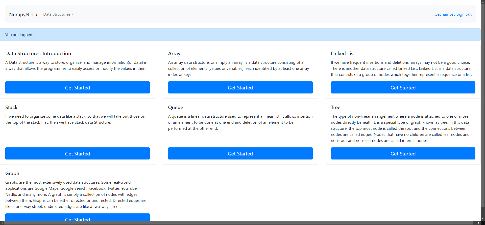FailValid code on try editor for Implementation of Queue in python runs successfullyGiven The user is on the DS Introduction page as signedInWhen The user clicks on Get started link for QueueGiven The user on implementation Queue in python pageWhen User writes valid code and clicks run buttonThen The user should able to see output in the consoleStep skippedHooks.Hooks.takeScreenshot(io.cucumber.java.Scenario)screenshot
FailNo error message displayed for empty code on try editor for Implementation of Queue in pythonGiven The user is on the DS Introduction page as signedInWhen The user clicks on Get started link for QueueGiven The user on implementation Queue in python pageWhen User writes invalid code and clicks run buttonThen The user should able to see an error message in alert windowStep skippedHooks.Hooks.takeScreenshot(io.cucumber.java.Scenario)screenshot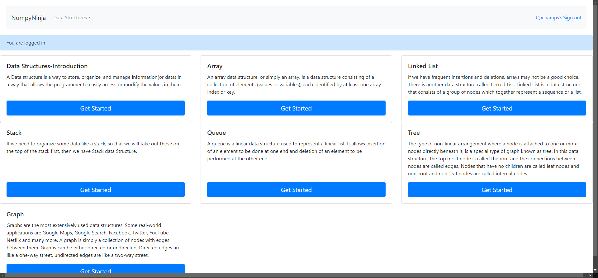FailValid code on try editor for Implementation of Queue in python runs successfullyGiven The user is on the DS Introduction page as signedInWhen The user clicks on Get started link for QueueGiven The user on implementation Queue in python pageWhen User writes valid code and clicks run buttonThen The user should able to see output in the consoleStep skippedHooks.Hooks.takeScreenshot(io.cucumber.java.Scenario)screenshot PassValidate user can navigate to Implementation using collections.dequeGiven The user is on the DS Introduction page as signedInWhen The user clicks on Get started link for QueueGiven The user is on Queue Details pageWhen The user click on Implementation using collections.deque linkThen the user is navigated to Queue in collections.dequePassValidate user can open try editor page from Implementation using collections.dequeGiven The user is on the DS Introduction page as signedInWhen The user clicks on Get started link for QueueGiven The user on Implementation using collection.deque in python pageWhen User clicks Try here linkThen User should navigate to tryEditor pageFailError message displayed for invalid code on try editor for Implementation using collections.dequeGiven The user is on the DS Introduction page as signedInWhen The user clicks on Get started link for QueueGiven The user on Implementation using collection.deque in python pageWhen User writes invalid code and clicks run buttonThen The user should able to see an error message in alert windowStep skippedHooks.Hooks.takeScreenshot(io.cucumber.java.Scenario)screenshot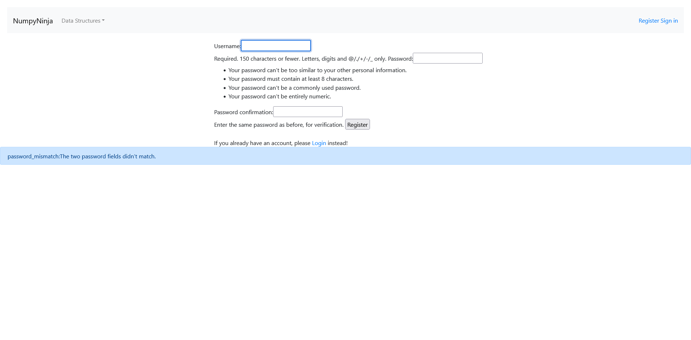PassNo error message displayed for empty code on try editor for Implementation using collections.dequeGiven The user is on the DS Introduction page as signedInWhen The user clicks on Get started link for QueueGiven The user on Implementation using collection.deque in python pageWhen User clicks on run button with empty codeThen The user should not see any error message or alertFailValid code on try editor for Implementation using collections.deque runs successfullyGiven The user is on the DS Introduction page as signedInWhen The user clicks on Get started link for QueueGiven The user on Implementation using collection.deque in python pageWhen User writes valid code and clicks run buttonThen The user should able to see output in the consoleStep skippedHooks.Hooks.takeScreenshot(io.cucumber.java.Scenario)screenshot
PassValidate user can navigate to Implementation using collections.dequeGiven The user is on the DS Introduction page as signedInWhen The user clicks on Get started link for QueueGiven The user is on Queue Details pageWhen The user click on Implementation using collections.deque linkThen the user is navigated to Queue in collections.dequePassValidate user can open try editor page from Implementation using collections.dequeGiven The user is on the DS Introduction page as signedInWhen The user clicks on Get started link for QueueGiven The user on Implementation using collection.deque in python pageWhen User clicks Try here linkThen User should navigate to tryEditor pageFailError message displayed for invalid code on try editor for Implementation using collections.dequeGiven The user is on the DS Introduction page as signedInWhen The user clicks on Get started link for QueueGiven The user on Implementation using collection.deque in python pageWhen User writes invalid code and clicks run buttonThen The user should able to see an error message in alert windowStep skippedHooks.Hooks.takeScreenshot(io.cucumber.java.Scenario)screenshot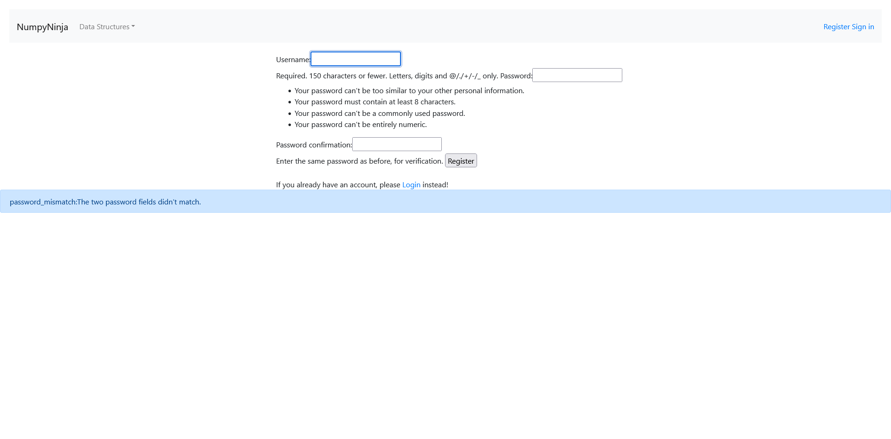PassNo error message displayed for empty code on try editor for Implementation using collections.dequeGiven The user is on the DS Introduction page as signedInWhen The user clicks on Get started link for QueueGiven The user on Implementation using collection.deque in python pageWhen User clicks on run button with empty codeThen The user should not see any error message or alertFailValid code on try editor for Implementation using collections.deque runs successfullyGiven The user is on the DS Introduction page as signedInWhen The user clicks on Get started link for QueueGiven The user on Implementation using collection.deque in python pageWhen User writes valid code and clicks run buttonThen The user should able to see output in the consoleStep skippedHooks.Hooks.takeScreenshot(io.cucumber.java.Scenario)screenshot PassValidate user can navigate to Implementation using collections.dequeGiven The user is on the DS Introduction page as signedInWhen The user clicks on Get started link for QueueGiven The user is on Queue Details pageWhen The user click on Queue OperationsThen the user is navigated to Queue Operations PagePassValidate user can open try editor page from Implementation using collections.dequeGiven The user is on the DS Introduction page as signedInWhen The user clicks on Get started link for QueueGiven The user is on Queue Operations pageWhen User clicks Try here linkThen User should navigate to tryEditor pageFailError message displayed for invalid code on try editor for Implementation using collections.dequeGiven The user is on the DS Introduction page as signedInWhen The user clicks on Get started link for QueueGiven The user is on Queue Operations pageWhen User writes invalid code and clicks run buttonThen The user should able to see an error message in alert windowStep skippedHooks.Hooks.takeScreenshot(io.cucumber.java.Scenario)screenshot
PassValidate user can navigate to Implementation using collections.dequeGiven The user is on the DS Introduction page as signedInWhen The user clicks on Get started link for QueueGiven The user is on Queue Details pageWhen The user click on Queue OperationsThen the user is navigated to Queue Operations PagePassValidate user can open try editor page from Implementation using collections.dequeGiven The user is on the DS Introduction page as signedInWhen The user clicks on Get started link for QueueGiven The user is on Queue Operations pageWhen User clicks Try here linkThen User should navigate to tryEditor pageFailError message displayed for invalid code on try editor for Implementation using collections.dequeGiven The user is on the DS Introduction page as signedInWhen The user clicks on Get started link for QueueGiven The user is on Queue Operations pageWhen User writes invalid code and clicks run buttonThen The user should able to see an error message in alert windowStep skippedHooks.Hooks.takeScreenshot(io.cucumber.java.Scenario)screenshot PassNo error message displayed for empty code on try editor for Implementation using collections.dequeGiven The user is on the DS Introduction page as signedInWhen The user clicks on Get started link for QueueGiven The user is on Queue Operations pageWhen User clicks on run button with empty codeThen The user should not see any error message or alertFailValid code on try editor for Implementation using collections.deque runs successfullyGiven The user is on the DS Introduction page as signedInWhen The user clicks on Get started link for QueueGiven The user is on Queue Operations pageWhen User writes invalid code and clicks run buttonThen The user should able to see an error message in alert windowStep skippedHooks.Hooks.takeScreenshot(io.cucumber.java.Scenario)screenshot
PassNo error message displayed for empty code on try editor for Implementation using collections.dequeGiven The user is on the DS Introduction page as signedInWhen The user clicks on Get started link for QueueGiven The user is on Queue Operations pageWhen User clicks on run button with empty codeThen The user should not see any error message or alertFailValid code on try editor for Implementation using collections.deque runs successfullyGiven The user is on the DS Introduction page as signedInWhen The user clicks on Get started link for QueueGiven The user is on Queue Operations pageWhen User writes invalid code and clicks run buttonThen The user should able to see an error message in alert windowStep skippedHooks.Hooks.takeScreenshot(io.cucumber.java.Scenario)screenshot PassValidate user can navigate to Implementation using collections.dequeGiven The user is on the DS Introduction page as signedInWhen The user clicks on Get started link for QueueGiven The user is on Queue Details pageWhen The user click on Implementation using array linkThen the user is navigated to Implementation using array pagePassValidate user can open try editor page from Implementation using collections.dequeGiven The user is on the DS Introduction page as signedInWhen The user clicks on Get started link for QueueGiven The user is on Implementation using array pageWhen User clicks Try here linkThen User should navigate to tryEditor pageFailError message displayed for invalid code on try editor for Implementation using collections.dequeGiven The user is on the DS Introduction page as signedInWhen The user clicks on Get started link for QueueGiven The user is on Implementation using array pageWhen User writes invalid code and clicks run buttonThen The user should able to see an error message in alert windowStep skippedHooks.Hooks.takeScreenshot(io.cucumber.java.Scenario)screenshot
PassValidate user can navigate to Implementation using collections.dequeGiven The user is on the DS Introduction page as signedInWhen The user clicks on Get started link for QueueGiven The user is on Queue Details pageWhen The user click on Implementation using array linkThen the user is navigated to Implementation using array pagePassValidate user can open try editor page from Implementation using collections.dequeGiven The user is on the DS Introduction page as signedInWhen The user clicks on Get started link for QueueGiven The user is on Implementation using array pageWhen User clicks Try here linkThen User should navigate to tryEditor pageFailError message displayed for invalid code on try editor for Implementation using collections.dequeGiven The user is on the DS Introduction page as signedInWhen The user clicks on Get started link for QueueGiven The user is on Implementation using array pageWhen User writes invalid code and clicks run buttonThen The user should able to see an error message in alert windowStep skippedHooks.Hooks.takeScreenshot(io.cucumber.java.Scenario)screenshot PassNo error message displayed for empty code on try editor for Implementation using collections.dequeGiven The user is on the DS Introduction page as signedInWhen The user clicks on Get started link for QueueGiven The user is on Implementation using array pageWhen User clicks on run button with empty codeThen The user should not see any error message or alertFailValid code on try editor for Implementation using collections.deque runs successfullyGiven The user is on the DS Introduction page as signedInWhen The user clicks on Get started link for QueueGiven The user is on Implementation using array pageWhen User writes valid code and clicks run buttonThen The user should able to see output in the consoleStep skippedHooks.Hooks.takeScreenshot(io.cucumber.java.Scenario)screenshot
PassNo error message displayed for empty code on try editor for Implementation using collections.dequeGiven The user is on the DS Introduction page as signedInWhen The user clicks on Get started link for QueueGiven The user is on Implementation using array pageWhen User clicks on run button with empty codeThen The user should not see any error message or alertFailValid code on try editor for Implementation using collections.deque runs successfullyGiven The user is on the DS Introduction page as signedInWhen The user clicks on Get started link for QueueGiven The user is on Implementation using array pageWhen User writes valid code and clicks run buttonThen The user should able to see output in the consoleStep skippedHooks.Hooks.takeScreenshot(io.cucumber.java.Scenario)screenshot
-
Registration
11:53:14 AM / 00:00:18:981 Fail
Registration
12.17.2024 11:53:14 AM 12.17.2024 11:53:33 AM 00:00:18:981 · #test-id=1206I want to use this template for my feature filePassNew user registration page with all fields empty and Register button is clickedPassNew user registration page with all fields empty and Register button is clickedGiven The user is on the new user registration pageWhen The user clicks Register button with all fields empty on registration form from sheetname "register" and row 0Then The error Please fill out this field appears below Username textboxPassNew user registration page with only username enteredPassNew user registration page with only username enteredGiven The user is on the new user registration pageWhen The user clicks Register button after entering Username with other fields empty on registration form from sheetname "register" and row 1Then The error message Please fill out this field. appears below Password textboxPassNew user registration page with only username and password fields enteredPassNew user registration page with only username and password fields enteredGiven The user is on the new user registration pageWhen The user clicks Register button after entering Username and password with Password Confirmation field empty on registration form from sheetname "register" and row 2Then The error message Please fill out this field. appears below Password Confirmation textboxFailNew user registration page with username entered with a space inbetweenFailNew user registration page with username entered with a space inbetweenGiven The user is on the new user registration pageWhen The user clicks Register button after entering a username with spacebar characters other than digits and symbols on registration form from sheetname "register" and row 3Then The user is displayed with error msg after entering invalid data and redirects to empty username textboxHooks.Hooks.takeScreenshot(io.cucumber.java.Scenario)screenshotFailNew user registration page with valid username but only numeric password and confirm passwordFailNew user registration page with valid username but only numeric password and confirm passwordGiven The user is on the new user registration pageWhen The user clicks Register button after entering a password with only numeric data on registration form from sheetname "register" and row 4Then The user is displayed the appropriate error msg after entering invalid data and redirects to empty confirm password textboxHooks.Hooks.takeScreenshot(io.cucumber.java.Scenario)screenshot FailNew user registration page with valid username but password and confirm password fields has less than eight charactersFailNew user registration page with valid username but password and confirm password fields has less than eight charactersGiven The user is on the new user registration pageWhen The user clicks Register button after entering a Password with characters less than eight on registration form from sheetname "register" and row 5Then The user is displayed the appropriate error msg after entering invalid data and redirects to empty password confirm textboxHooks.Hooks.takeScreenshot(io.cucumber.java.Scenario)screenshot
FailNew user registration page with valid username but password and confirm password fields has less than eight charactersFailNew user registration page with valid username but password and confirm password fields has less than eight charactersGiven The user is on the new user registration pageWhen The user clicks Register button after entering a Password with characters less than eight on registration form from sheetname "register" and row 5Then The user is displayed the appropriate error msg after entering invalid data and redirects to empty password confirm textboxHooks.Hooks.takeScreenshot(io.cucumber.java.Scenario)screenshot PassNew user registration page on registration with different passwords entered in password and confirm password fieldsPassNew user registration page on registration with different passwords entered in password and confirm password fieldsGiven The user is on the new user registration pageWhen The user clicks Register button after entering different passwords in Password and Password Confirmation fields form from sheetname "register" and row 6Then The user is displayed with a warning message password_mismatch:The two password fields didn’t match.FailNew user registration page with all valid credentials enteredFailNew user registration page with all valid credentials enteredGiven The user is on the new user registration pageWhen The user clicks Register button after user fills registration form from sheetname "register" and row 7Then The user is redirected to Home Page of DS Algo with success message - New Account Created. You are logged in as username on the DS Algo Home PageHooks.Hooks.takeScreenshot(io.cucumber.java.Scenario)screenshot
PassNew user registration page on registration with different passwords entered in password and confirm password fieldsPassNew user registration page on registration with different passwords entered in password and confirm password fieldsGiven The user is on the new user registration pageWhen The user clicks Register button after entering different passwords in Password and Password Confirmation fields form from sheetname "register" and row 6Then The user is displayed with a warning message password_mismatch:The two password fields didn’t match.FailNew user registration page with all valid credentials enteredFailNew user registration page with all valid credentials enteredGiven The user is on the new user registration pageWhen The user clicks Register button after user fills registration form from sheetname "register" and row 7Then The user is redirected to Home Page of DS Algo with success message - New Account Created. You are logged in as username on the DS Algo Home PageHooks.Hooks.takeScreenshot(io.cucumber.java.Scenario)screenshot PassNew user registration page where login button is clickedGiven The user is on the new user registration pageWhen User clicks on login button from registration pageThen user lands on login pagePassNew user registration page where SignIn button is clickedGiven The user is on the new user registration pageWhen User clicks on SignIn button from registration pageThen user lands on login page
PassNew user registration page where login button is clickedGiven The user is on the new user registration pageWhen User clicks on login button from registration pageThen user lands on login pagePassNew user registration page where SignIn button is clickedGiven The user is on the new user registration pageWhen User clicks on SignIn button from registration pageThen user lands on login page -
Stack page
11:53:31 AM / 00:00:39:934 Fail
Stack page
12.17.2024 11:53:31 AM 12.17.2024 11:54:11 AM 00:00:39:934 · #test-id=1296I want to test the StackPagePassValidate user navigated to stack details page when clicked on get startedGiven The user is on the DS Introduction page as signedInWhen The user clicks on Get Started link for stackThen The user is on the stack details pagePassValidate user can navigate to Operations in Stack pageGiven The user is on the DS Introduction page as signedInWhen The user clicks on Get Started link for stackGiven The user is on the stack details pageWhen The user click on Operations in Stack linkThen the user is navigated to Operations in Stack pagePassValidate user can Try here link page from Operations in StackGiven The user is on the DS Introduction page as signedInWhen The user clicks on Get Started link for stackGiven The user is on the Operations in Stack pageWhen User clicks Try here linkThen User should navigate to tryEditor pageFailError message displayed for invalid code on try Editor for Operations in Stack pageGiven The user is on the DS Introduction page as signedInWhen The user clicks on Get Started link for stackGiven The user is on the Operations in Stack pageWhen User writes invalid code and clicks run buttonThen The user should able to see an error message in alert windowStep skippedHooks.Hooks.takeScreenshot(io.cucumber.java.Scenario)screenshot PassNo error message displayed for empty code on try editor for Operations in Stack pageGiven The user is on the DS Introduction page as signedInWhen The user clicks on Get Started link for stackGiven The user is on the Operations in Stack pageWhen User clicks on run button with empty codeThen The user should not see any error message or alertFailValid code on try editor for Operations in Stack runs successfullyGiven The user is on the DS Introduction page as signedInWhen The user clicks on Get Started link for stackGiven The user is on the Operations in Stack pageWhen User writes valid code and clicks run buttonThen The user should able to see output in the consoleStep skippedHooks.Hooks.takeScreenshot(io.cucumber.java.Scenario)screenshot
PassNo error message displayed for empty code on try editor for Operations in Stack pageGiven The user is on the DS Introduction page as signedInWhen The user clicks on Get Started link for stackGiven The user is on the Operations in Stack pageWhen User clicks on run button with empty codeThen The user should not see any error message or alertFailValid code on try editor for Operations in Stack runs successfullyGiven The user is on the DS Introduction page as signedInWhen The user clicks on Get Started link for stackGiven The user is on the Operations in Stack pageWhen User writes valid code and clicks run buttonThen The user should able to see output in the consoleStep skippedHooks.Hooks.takeScreenshot(io.cucumber.java.Scenario)screenshot PassValidate user can navigate to Implementation pageGiven The user is on the DS Introduction page as signedInWhen The user clicks on Get Started link for stackGiven The user is on the stack details pageWhen The user click on Implementation linkThen the user is navigated to Implementation pagePassValidate user can click on Try here link from Implementation pageGiven The user is on the DS Introduction page as signedInWhen The user clicks on Get Started link for stackGiven The user is on the Implementation pageWhen User clicks Try here linkThen User should navigate to tryEditor pageFailError message displayed for invalid code on try Editor for Implementation pageGiven The user is on the DS Introduction page as signedInWhen The user clicks on Get Started link for stackGiven The user is on the Implementation pageWhen User writes invalid code and clicks run buttonThen The user should able to see an error message in alert windowStep skippedHooks.Hooks.takeScreenshot(io.cucumber.java.Scenario)screenshot
PassValidate user can navigate to Implementation pageGiven The user is on the DS Introduction page as signedInWhen The user clicks on Get Started link for stackGiven The user is on the stack details pageWhen The user click on Implementation linkThen the user is navigated to Implementation pagePassValidate user can click on Try here link from Implementation pageGiven The user is on the DS Introduction page as signedInWhen The user clicks on Get Started link for stackGiven The user is on the Implementation pageWhen User clicks Try here linkThen User should navigate to tryEditor pageFailError message displayed for invalid code on try Editor for Implementation pageGiven The user is on the DS Introduction page as signedInWhen The user clicks on Get Started link for stackGiven The user is on the Implementation pageWhen User writes invalid code and clicks run buttonThen The user should able to see an error message in alert windowStep skippedHooks.Hooks.takeScreenshot(io.cucumber.java.Scenario)screenshot PassNo error message displayed for empty code on try editor for Implementation pageGiven The user is on the DS Introduction page as signedInWhen The user clicks on Get Started link for stackGiven The user is on the Implementation pageWhen User clicks on run button with empty codeThen The user should not see any error message or alertFailValid code on try editor for Implementation runs successfullyGiven The user is on the DS Introduction page as signedInWhen The user clicks on Get Started link for stackGiven The user is on the Implementation pageWhen User writes valid code and clicks run buttonThen The user should able to see output in the consoleStep skippedHooks.Hooks.takeScreenshot(io.cucumber.java.Scenario)screenshot
PassNo error message displayed for empty code on try editor for Implementation pageGiven The user is on the DS Introduction page as signedInWhen The user clicks on Get Started link for stackGiven The user is on the Implementation pageWhen User clicks on run button with empty codeThen The user should not see any error message or alertFailValid code on try editor for Implementation runs successfullyGiven The user is on the DS Introduction page as signedInWhen The user clicks on Get Started link for stackGiven The user is on the Implementation pageWhen User writes valid code and clicks run buttonThen The user should able to see output in the consoleStep skippedHooks.Hooks.takeScreenshot(io.cucumber.java.Scenario)screenshot PassValidate user can navigate to Applications pageGiven The user is on the DS Introduction page as signedInWhen The user clicks on Get Started link for stackGiven The user is on the stack details pageWhen The user click on Applications linkThen the user is navigated to Applications pagePassValidate user can click on Try here link from Applications pageGiven The user is on the DS Introduction page as signedInWhen The user clicks on Get Started link for stackGiven The user is on the Applications pageWhen User clicks Try here linkThen User should navigate to tryEditor pageFailError message displayed for invalid code on try Editor for Applications pageGiven The user is on the DS Introduction page as signedInWhen The user clicks on Get Started link for stackGiven The user is on the Applications pageWhen User writes invalid code and clicks run buttonThen The user should able to see an error message in alert windowStep skippedHooks.Hooks.takeScreenshot(io.cucumber.java.Scenario)screenshot
PassValidate user can navigate to Applications pageGiven The user is on the DS Introduction page as signedInWhen The user clicks on Get Started link for stackGiven The user is on the stack details pageWhen The user click on Applications linkThen the user is navigated to Applications pagePassValidate user can click on Try here link from Applications pageGiven The user is on the DS Introduction page as signedInWhen The user clicks on Get Started link for stackGiven The user is on the Applications pageWhen User clicks Try here linkThen User should navigate to tryEditor pageFailError message displayed for invalid code on try Editor for Applications pageGiven The user is on the DS Introduction page as signedInWhen The user clicks on Get Started link for stackGiven The user is on the Applications pageWhen User writes invalid code and clicks run buttonThen The user should able to see an error message in alert windowStep skippedHooks.Hooks.takeScreenshot(io.cucumber.java.Scenario)screenshot PassNo error message displayed for empty code on try editor for Applications pageGiven The user is on the DS Introduction page as signedInWhen The user clicks on Get Started link for stackGiven The user is on the Applications pageWhen User clicks on run button with empty codeThen The user should not see any error message or alertFailValid code on try editor for Applications runs successfullyGiven The user is on the DS Introduction page as signedInWhen The user clicks on Get Started link for stackGiven The user is on the Applications pageWhen User writes valid code and clicks run buttonThen The user should able to see output in the consoleStep skippedHooks.Hooks.takeScreenshot(io.cucumber.java.Scenario)screenshot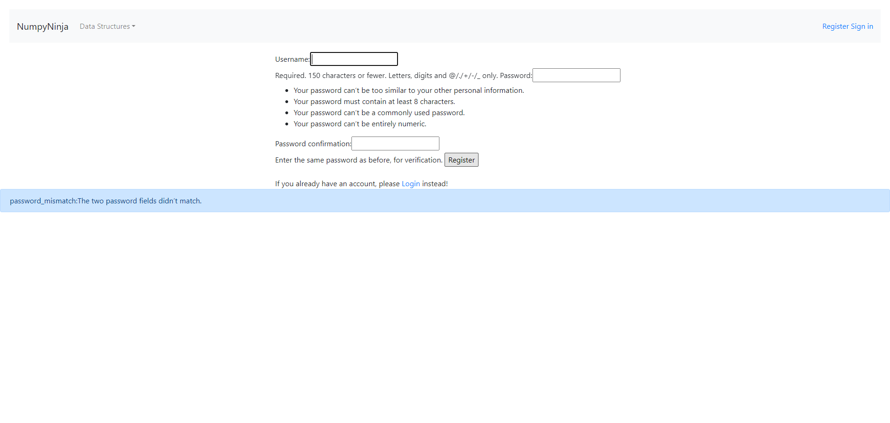
PassNo error message displayed for empty code on try editor for Applications pageGiven The user is on the DS Introduction page as signedInWhen The user clicks on Get Started link for stackGiven The user is on the Applications pageWhen User clicks on run button with empty codeThen The user should not see any error message or alertFailValid code on try editor for Applications runs successfullyGiven The user is on the DS Introduction page as signedInWhen The user clicks on Get Started link for stackGiven The user is on the Applications pageWhen User writes valid code and clicks run buttonThen The user should able to see output in the consoleStep skippedHooks.Hooks.takeScreenshot(io.cucumber.java.Scenario)screenshot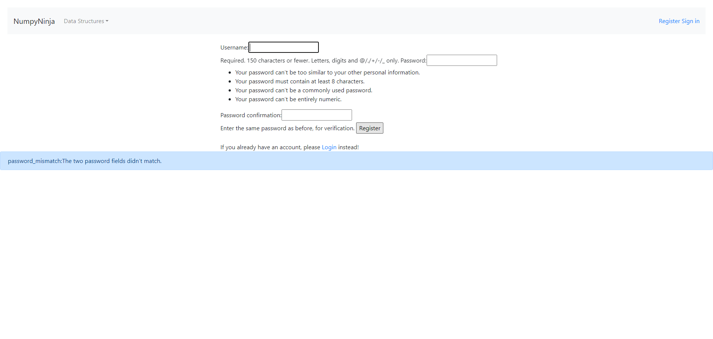 -
Tree
11:54:06 AM / 00:02:39:054 Fail
Tree
12.17.2024 11:54:06 AM 12.17.2024 11:56:46 AM 00:02:39:054 · #test-id=1454PassDS_algo Home pageGiven The user is on the DS Introduction page as signedInAnd User clicks on Get Started button from Tree panelWhen The user select Tree from the Data Structure dropdown menuThen The user is redirected to Tree page.PassTree home pageGiven The user is on the DS Introduction page as signedInAnd User clicks on Get Started button from Tree panelWhen The user clicks Overview of Trees linkThen The user is redirected to Overview of Trees page.PassOverview of TreesGiven The user is on the DS Introduction page as signedInAnd User clicks on Get Started button from Tree panelGiven The user is on the Overview of Trees pageWhen The user clicks Try Here buttonThen The user is redirected to a page having Editor and run buttonFailTry Here Editor page with empty codeGiven The user is on the DS Introduction page as signedInAnd User clicks on Get Started button from Tree panelGiven The user is on the Editor page of Overview of Trees pageWhen The user writes no code inside editor window and clicks on Run buttonThen Nothing happens to the Editor page and no error message is displayedStep skippedHooks.Hooks.takeScreenshot(io.cucumber.java.Scenario)screenshot FailTry Here Editor page with valid dataGiven The user is on the DS Introduction page as signedInAnd User clicks on Get Started button from Tree panelGiven The user is on the Editor page of Overview of Trees pageWhen The user writes the valid python code and clicks on Run buttonThen The user is able to see the output inside the console.Step skippedHooks.Hooks.takeScreenshot(io.cucumber.java.Scenario)screenshot
FailTry Here Editor page with valid dataGiven The user is on the DS Introduction page as signedInAnd User clicks on Get Started button from Tree panelGiven The user is on the Editor page of Overview of Trees pageWhen The user writes the valid python code and clicks on Run buttonThen The user is able to see the output inside the console.Step skippedHooks.Hooks.takeScreenshot(io.cucumber.java.Scenario)screenshot FailTry Here Editor page with invalid dataGiven The user is on the DS Introduction page as signedInAnd User clicks on Get Started button from Tree panelGiven The user is on the Editor page of Overview of Trees pageWhen The user writes the invalid python code and clicks on Run buttonThen The user see error msg in alert windowStep skippedHooks.Hooks.takeScreenshot(io.cucumber.java.Scenario)screenshot
FailTry Here Editor page with invalid dataGiven The user is on the DS Introduction page as signedInAnd User clicks on Get Started button from Tree panelGiven The user is on the Editor page of Overview of Trees pageWhen The user writes the invalid python code and clicks on Run buttonThen The user see error msg in alert windowStep skippedHooks.Hooks.takeScreenshot(io.cucumber.java.Scenario)screenshot PassOverview of TreesGiven The user is on the DS Introduction page as signedInAnd User clicks on Get Started button from Tree panelGiven The user is on the Overview of Trees pageWhen The user clicks Terminologies linkThen The user is redirected to Terminologies pagePassTerminologiesGiven The user is on the DS Introduction page as signedInAnd User clicks on Get Started button from Tree panelGiven The user is on the Terminologies pageWhen The user clicks Try Here buttonThen The user is redirected to a page having Editor and run buttonFailTry Here Editor page with empty codeGiven The user is on the DS Introduction page as signedInAnd User clicks on Get Started button from Tree panelGiven The user is on the Editor page of Terminologies pageWhen The user writes no code inside editor window and clicks on Run buttonThen Nothing happens to the Editor page and no error message is displayedStep skippedHooks.Hooks.takeScreenshot(io.cucumber.java.Scenario)screenshot
PassOverview of TreesGiven The user is on the DS Introduction page as signedInAnd User clicks on Get Started button from Tree panelGiven The user is on the Overview of Trees pageWhen The user clicks Terminologies linkThen The user is redirected to Terminologies pagePassTerminologiesGiven The user is on the DS Introduction page as signedInAnd User clicks on Get Started button from Tree panelGiven The user is on the Terminologies pageWhen The user clicks Try Here buttonThen The user is redirected to a page having Editor and run buttonFailTry Here Editor page with empty codeGiven The user is on the DS Introduction page as signedInAnd User clicks on Get Started button from Tree panelGiven The user is on the Editor page of Terminologies pageWhen The user writes no code inside editor window and clicks on Run buttonThen Nothing happens to the Editor page and no error message is displayedStep skippedHooks.Hooks.takeScreenshot(io.cucumber.java.Scenario)screenshot FailTry Here Editor page with valid dataGiven The user is on the DS Introduction page as signedInAnd User clicks on Get Started button from Tree panelGiven The user is on the Editor page of Terminologies pageWhen The user writes the valid python code and clicks on Run buttonThen The user is able to see the output inside the console.Step skippedHooks.Hooks.takeScreenshot(io.cucumber.java.Scenario)screenshot
FailTry Here Editor page with valid dataGiven The user is on the DS Introduction page as signedInAnd User clicks on Get Started button from Tree panelGiven The user is on the Editor page of Terminologies pageWhen The user writes the valid python code and clicks on Run buttonThen The user is able to see the output inside the console.Step skippedHooks.Hooks.takeScreenshot(io.cucumber.java.Scenario)screenshot FailTry Here Editor page with invalid dataGiven The user is on the DS Introduction page as signedInAnd User clicks on Get Started button from Tree panelGiven The user is on the Editor page of Terminologies pageWhen The user writes the invalid python code and clicks on Run buttonThen The user see error msg in alert windowStep skippedHooks.Hooks.takeScreenshot(io.cucumber.java.Scenario)screenshot
FailTry Here Editor page with invalid dataGiven The user is on the DS Introduction page as signedInAnd User clicks on Get Started button from Tree panelGiven The user is on the Editor page of Terminologies pageWhen The user writes the invalid python code and clicks on Run buttonThen The user see error msg in alert windowStep skippedHooks.Hooks.takeScreenshot(io.cucumber.java.Scenario)screenshot PassTerminologiesGiven The user is on the DS Introduction page as signedInAnd User clicks on Get Started button from Tree panelGiven The user is on the Terminologies pageWhen The user clicks Types of Trees link from TerminologiesPageThen The user is redirected to Types of Trees page.PassTypes of TreesGiven The user is on the DS Introduction page as signedInAnd User clicks on Get Started button from Tree panelGiven The user is on the Types of Trees pageWhen The user clicks Try Here buttonThen The user is redirected to a page having Editor and run buttonFailTry Here Editor page with empty codeGiven The user is on the DS Introduction page as signedInAnd User clicks on Get Started button from Tree panelGiven The user is on the Editor Page of Types of Trees pageWhen The user writes no code inside editor window and clicks on Run buttonThen Nothing happens to the Editor page and no error message is displayedStep skippedHooks.Hooks.takeScreenshot(io.cucumber.java.Scenario)screenshot
PassTerminologiesGiven The user is on the DS Introduction page as signedInAnd User clicks on Get Started button from Tree panelGiven The user is on the Terminologies pageWhen The user clicks Types of Trees link from TerminologiesPageThen The user is redirected to Types of Trees page.PassTypes of TreesGiven The user is on the DS Introduction page as signedInAnd User clicks on Get Started button from Tree panelGiven The user is on the Types of Trees pageWhen The user clicks Try Here buttonThen The user is redirected to a page having Editor and run buttonFailTry Here Editor page with empty codeGiven The user is on the DS Introduction page as signedInAnd User clicks on Get Started button from Tree panelGiven The user is on the Editor Page of Types of Trees pageWhen The user writes no code inside editor window and clicks on Run buttonThen Nothing happens to the Editor page and no error message is displayedStep skippedHooks.Hooks.takeScreenshot(io.cucumber.java.Scenario)screenshot FailTry Here Editor page with valid dataGiven The user is on the DS Introduction page as signedInAnd User clicks on Get Started button from Tree panelGiven The user is on the Editor Page of Types of Trees pageWhen The user writes the valid python code and clicks on Run buttonThen The user is able to see the output inside the console.Step skippedHooks.Hooks.takeScreenshot(io.cucumber.java.Scenario)screenshot
FailTry Here Editor page with valid dataGiven The user is on the DS Introduction page as signedInAnd User clicks on Get Started button from Tree panelGiven The user is on the Editor Page of Types of Trees pageWhen The user writes the valid python code and clicks on Run buttonThen The user is able to see the output inside the console.Step skippedHooks.Hooks.takeScreenshot(io.cucumber.java.Scenario)screenshot FailTry Here Editor page with invalid dataGiven The user is on the DS Introduction page as signedInAnd User clicks on Get Started button from Tree panelGiven The user is on the Editor Page of Types of Trees pageWhen The user writes the invalid python code and clicks on Run buttonThen The user see error msg in alert windowStep skippedHooks.Hooks.takeScreenshot(io.cucumber.java.Scenario)screenshot
FailTry Here Editor page with invalid dataGiven The user is on the DS Introduction page as signedInAnd User clicks on Get Started button from Tree panelGiven The user is on the Editor Page of Types of Trees pageWhen The user writes the invalid python code and clicks on Run buttonThen The user see error msg in alert windowStep skippedHooks.Hooks.takeScreenshot(io.cucumber.java.Scenario)screenshot PassTypes of TreesGiven The user is on the DS Introduction page as signedInAnd User clicks on Get Started button from Tree panelGiven The user is on the Types of Trees pageWhen The user clicks Tree Traversals linkThen The user is redirected to Tree Traversals pagePassTree TraversalsGiven The user is on the DS Introduction page as signedInAnd User clicks on Get Started button from Tree panelGiven The user is on the Tree Traversals pageWhen The user clicks Try Here buttonThen The user is redirected to a page having Editor and run buttonFailTry Here Editor page with empty codeGiven The user is on the DS Introduction page as signedInAnd User clicks on Get Started button from Tree panelGiven The user is on the Editor page of Tree Traversals pageWhen The user writes no code inside editor window and clicks on Run buttonThen Nothing happens to the Editor page and no error message is displayedStep skippedHooks.Hooks.takeScreenshot(io.cucumber.java.Scenario)screenshot
PassTypes of TreesGiven The user is on the DS Introduction page as signedInAnd User clicks on Get Started button from Tree panelGiven The user is on the Types of Trees pageWhen The user clicks Tree Traversals linkThen The user is redirected to Tree Traversals pagePassTree TraversalsGiven The user is on the DS Introduction page as signedInAnd User clicks on Get Started button from Tree panelGiven The user is on the Tree Traversals pageWhen The user clicks Try Here buttonThen The user is redirected to a page having Editor and run buttonFailTry Here Editor page with empty codeGiven The user is on the DS Introduction page as signedInAnd User clicks on Get Started button from Tree panelGiven The user is on the Editor page of Tree Traversals pageWhen The user writes no code inside editor window and clicks on Run buttonThen Nothing happens to the Editor page and no error message is displayedStep skippedHooks.Hooks.takeScreenshot(io.cucumber.java.Scenario)screenshot FailTry Here Editor page with valid dataGiven The user is on the DS Introduction page as signedInAnd User clicks on Get Started button from Tree panelGiven The user is on the Editor page of Tree Traversals pageWhen The user writes the valid python code and clicks on Run buttonThen The user is able to see the output inside the console.Step skippedHooks.Hooks.takeScreenshot(io.cucumber.java.Scenario)screenshot
FailTry Here Editor page with valid dataGiven The user is on the DS Introduction page as signedInAnd User clicks on Get Started button from Tree panelGiven The user is on the Editor page of Tree Traversals pageWhen The user writes the valid python code and clicks on Run buttonThen The user is able to see the output inside the console.Step skippedHooks.Hooks.takeScreenshot(io.cucumber.java.Scenario)screenshot FailTry Here Editor page with invalid dataGiven The user is on the DS Introduction page as signedInAnd User clicks on Get Started button from Tree panelGiven The user is on the Editor page of Tree Traversals pageWhen The user writes the invalid python code and clicks on Run buttonThen The user see error msg in alert windowStep skippedHooks.Hooks.takeScreenshot(io.cucumber.java.Scenario)screenshot
FailTry Here Editor page with invalid dataGiven The user is on the DS Introduction page as signedInAnd User clicks on Get Started button from Tree panelGiven The user is on the Editor page of Tree Traversals pageWhen The user writes the invalid python code and clicks on Run buttonThen The user see error msg in alert windowStep skippedHooks.Hooks.takeScreenshot(io.cucumber.java.Scenario)screenshot PassTree TraversalsGiven The user is on the DS Introduction page as signedInAnd User clicks on Get Started button from Tree panelGiven The user is on the Tree Traversals pageWhen The user clicks Traversals-Illustration linkThen The user is redirected to Traversals-Illustration pagePassTraversals-IllustrationGiven The user is on the DS Introduction page as signedInAnd User clicks on Get Started button from Tree panelGiven The user is on the Traversals-Illustration pageWhen The user clicks Try Here buttonThen The user is redirected to a page having Editor and run buttonFailTry Here Editor page with empty codeGiven The user is on the DS Introduction page as signedInAnd User clicks on Get Started button from Tree panelGiven The user is on the Editor page of Traversals-Illustration pageWhen The user writes no code inside editor window and clicks on Run buttonThen Nothing happens to the Editor page and no error message is displayedStep skippedHooks.Hooks.takeScreenshot(io.cucumber.java.Scenario)screenshot
PassTree TraversalsGiven The user is on the DS Introduction page as signedInAnd User clicks on Get Started button from Tree panelGiven The user is on the Tree Traversals pageWhen The user clicks Traversals-Illustration linkThen The user is redirected to Traversals-Illustration pagePassTraversals-IllustrationGiven The user is on the DS Introduction page as signedInAnd User clicks on Get Started button from Tree panelGiven The user is on the Traversals-Illustration pageWhen The user clicks Try Here buttonThen The user is redirected to a page having Editor and run buttonFailTry Here Editor page with empty codeGiven The user is on the DS Introduction page as signedInAnd User clicks on Get Started button from Tree panelGiven The user is on the Editor page of Traversals-Illustration pageWhen The user writes no code inside editor window and clicks on Run buttonThen Nothing happens to the Editor page and no error message is displayedStep skippedHooks.Hooks.takeScreenshot(io.cucumber.java.Scenario)screenshot FailTry Here Editor page with valid dataGiven The user is on the DS Introduction page as signedInAnd User clicks on Get Started button from Tree panelGiven The user is on the Editor page of Traversals-Illustration pageWhen The user writes the valid python code and clicks on Run buttonThen The user is able to see the output inside the console.Step skippedHooks.Hooks.takeScreenshot(io.cucumber.java.Scenario)screenshot
FailTry Here Editor page with valid dataGiven The user is on the DS Introduction page as signedInAnd User clicks on Get Started button from Tree panelGiven The user is on the Editor page of Traversals-Illustration pageWhen The user writes the valid python code and clicks on Run buttonThen The user is able to see the output inside the console.Step skippedHooks.Hooks.takeScreenshot(io.cucumber.java.Scenario)screenshot FailTry Here Editor page with invalid dataGiven The user is on the DS Introduction page as signedInAnd User clicks on Get Started button from Tree panelGiven The user is on the Editor page of Traversals-Illustration pageWhen The user writes the invalid python code and clicks on Run buttonThen The user see error msg in alert windowStep skippedHooks.Hooks.takeScreenshot(io.cucumber.java.Scenario)screenshot
FailTry Here Editor page with invalid dataGiven The user is on the DS Introduction page as signedInAnd User clicks on Get Started button from Tree panelGiven The user is on the Editor page of Traversals-Illustration pageWhen The user writes the invalid python code and clicks on Run buttonThen The user see error msg in alert windowStep skippedHooks.Hooks.takeScreenshot(io.cucumber.java.Scenario)screenshot PassTraversals-IllustrationGiven The user is on the DS Introduction page as signedInAnd User clicks on Get Started button from Tree panelGiven The user is on the Traversals-Illustration pageWhen The user clicks Binary Trees linkThen The user is redirected to Binary Trees page.PassBinary TreesGiven The user is on the DS Introduction page as signedInAnd User clicks on Get Started button from Tree panelGiven The user is on the Binary Trees pageWhen The user clicks Try Here buttonThen The user is redirected to a page having Editor and run buttonFailTry Here Editor page with empty codeGiven The user is on the DS Introduction page as signedInAnd User clicks on Get Started button from Tree panelGiven The user is on the Editor page of Binary Trees pageWhen The user writes no code inside editor window and clicks on Run buttonThen Nothing happens to the Editor page and no error message is displayedStep skippedHooks.Hooks.takeScreenshot(io.cucumber.java.Scenario)screenshot
PassTraversals-IllustrationGiven The user is on the DS Introduction page as signedInAnd User clicks on Get Started button from Tree panelGiven The user is on the Traversals-Illustration pageWhen The user clicks Binary Trees linkThen The user is redirected to Binary Trees page.PassBinary TreesGiven The user is on the DS Introduction page as signedInAnd User clicks on Get Started button from Tree panelGiven The user is on the Binary Trees pageWhen The user clicks Try Here buttonThen The user is redirected to a page having Editor and run buttonFailTry Here Editor page with empty codeGiven The user is on the DS Introduction page as signedInAnd User clicks on Get Started button from Tree panelGiven The user is on the Editor page of Binary Trees pageWhen The user writes no code inside editor window and clicks on Run buttonThen Nothing happens to the Editor page and no error message is displayedStep skippedHooks.Hooks.takeScreenshot(io.cucumber.java.Scenario)screenshot FailTry Here Editor page with valid dataGiven The user is on the DS Introduction page as signedInAnd User clicks on Get Started button from Tree panelGiven The user is on the Editor page of Binary Trees pageWhen The user writes the valid python code and clicks on Run buttonThen The user is able to see the output inside the console.Step skippedHooks.Hooks.takeScreenshot(io.cucumber.java.Scenario)screenshot
FailTry Here Editor page with valid dataGiven The user is on the DS Introduction page as signedInAnd User clicks on Get Started button from Tree panelGiven The user is on the Editor page of Binary Trees pageWhen The user writes the valid python code and clicks on Run buttonThen The user is able to see the output inside the console.Step skippedHooks.Hooks.takeScreenshot(io.cucumber.java.Scenario)screenshot FailTry Here Editor page with invalid dataGiven The user is on the DS Introduction page as signedInAnd User clicks on Get Started button from Tree panelGiven The user is on the Editor page of Binary Trees pageWhen The user writes the invalid python code and clicks on Run buttonThen The user see error msg in alert windowStep skippedHooks.Hooks.takeScreenshot(io.cucumber.java.Scenario)screenshot
FailTry Here Editor page with invalid dataGiven The user is on the DS Introduction page as signedInAnd User clicks on Get Started button from Tree panelGiven The user is on the Editor page of Binary Trees pageWhen The user writes the invalid python code and clicks on Run buttonThen The user see error msg in alert windowStep skippedHooks.Hooks.takeScreenshot(io.cucumber.java.Scenario)screenshot PassBinary TreesGiven The user is on the DS Introduction page as signedInAnd User clicks on Get Started button from Tree panelGiven The user is on the Binary Trees pageWhen The user clicks Types of Binary Trees linkThen The user is redirected to Types of Binary Trees page.PassTypes of Binary TreesGiven The user is on the DS Introduction page as signedInAnd User clicks on Get Started button from Tree panelGiven The user is on the Types of Binary Trees pageWhen The user clicks Try Here buttonThen The user is redirected to a page having Editor and run buttonFailTry Here Editor page with empty codeGiven The user is on the DS Introduction page as signedInAnd User clicks on Get Started button from Tree panelGiven The user is on the Editor page of Types of Binary Trees pageWhen The user writes no code inside editor window and clicks on Run buttonThen Nothing happens to the Editor page and no error message is displayedStep skippedHooks.Hooks.takeScreenshot(io.cucumber.java.Scenario)screenshot
PassBinary TreesGiven The user is on the DS Introduction page as signedInAnd User clicks on Get Started button from Tree panelGiven The user is on the Binary Trees pageWhen The user clicks Types of Binary Trees linkThen The user is redirected to Types of Binary Trees page.PassTypes of Binary TreesGiven The user is on the DS Introduction page as signedInAnd User clicks on Get Started button from Tree panelGiven The user is on the Types of Binary Trees pageWhen The user clicks Try Here buttonThen The user is redirected to a page having Editor and run buttonFailTry Here Editor page with empty codeGiven The user is on the DS Introduction page as signedInAnd User clicks on Get Started button from Tree panelGiven The user is on the Editor page of Types of Binary Trees pageWhen The user writes no code inside editor window and clicks on Run buttonThen Nothing happens to the Editor page and no error message is displayedStep skippedHooks.Hooks.takeScreenshot(io.cucumber.java.Scenario)screenshot FailTry Here Editor page with valid dataGiven The user is on the DS Introduction page as signedInAnd User clicks on Get Started button from Tree panelGiven The user is on the Editor page of Types of Binary Trees pageWhen The user writes the valid python code and clicks on Run buttonThen The user is able to see the output inside the console.Step skippedHooks.Hooks.takeScreenshot(io.cucumber.java.Scenario)screenshot
FailTry Here Editor page with valid dataGiven The user is on the DS Introduction page as signedInAnd User clicks on Get Started button from Tree panelGiven The user is on the Editor page of Types of Binary Trees pageWhen The user writes the valid python code and clicks on Run buttonThen The user is able to see the output inside the console.Step skippedHooks.Hooks.takeScreenshot(io.cucumber.java.Scenario)screenshot FailTry Here Editor page with invalid dataGiven The user is on the DS Introduction page as signedInAnd User clicks on Get Started button from Tree panelGiven The user is on the Editor page of Types of Binary Trees pageWhen The user writes the invalid python code and clicks on Run buttonThen The user see error msg in alert windowStep skippedHooks.Hooks.takeScreenshot(io.cucumber.java.Scenario)screenshot
FailTry Here Editor page with invalid dataGiven The user is on the DS Introduction page as signedInAnd User clicks on Get Started button from Tree panelGiven The user is on the Editor page of Types of Binary Trees pageWhen The user writes the invalid python code and clicks on Run buttonThen The user see error msg in alert windowStep skippedHooks.Hooks.takeScreenshot(io.cucumber.java.Scenario)screenshot PassTypes of Binary TreesGiven The user is on the DS Introduction page as signedInAnd User clicks on Get Started button from Tree panelGiven The user is on the Types of Binary Trees pageWhen The user clicks Implementation in Python Trees linkThen The user is redirected to Implementation in Python page.PassImplementation in PythonGiven The user is on the DS Introduction page as signedInAnd User clicks on Get Started button from Tree panelGiven The user is on the Implementation in Python pageWhen The user clicks Try Here buttonThen The user is redirected to a page having Editor and run buttonFailTry Here Editor page with empty codeGiven The user is on the DS Introduction page as signedInAnd User clicks on Get Started button from Tree panelGiven The user is on the editor page of Implementation in Python pageWhen The user writes no code inside editor window and clicks on Run buttonThen Nothing happens to the Editor page and no error message is displayedStep skippedHooks.Hooks.takeScreenshot(io.cucumber.java.Scenario)screenshot
PassTypes of Binary TreesGiven The user is on the DS Introduction page as signedInAnd User clicks on Get Started button from Tree panelGiven The user is on the Types of Binary Trees pageWhen The user clicks Implementation in Python Trees linkThen The user is redirected to Implementation in Python page.PassImplementation in PythonGiven The user is on the DS Introduction page as signedInAnd User clicks on Get Started button from Tree panelGiven The user is on the Implementation in Python pageWhen The user clicks Try Here buttonThen The user is redirected to a page having Editor and run buttonFailTry Here Editor page with empty codeGiven The user is on the DS Introduction page as signedInAnd User clicks on Get Started button from Tree panelGiven The user is on the editor page of Implementation in Python pageWhen The user writes no code inside editor window and clicks on Run buttonThen Nothing happens to the Editor page and no error message is displayedStep skippedHooks.Hooks.takeScreenshot(io.cucumber.java.Scenario)screenshot FailTry Here Editor page with valid dataGiven The user is on the DS Introduction page as signedInAnd User clicks on Get Started button from Tree panelGiven The user is on the editor page of Implementation in Python pageWhen The user writes the valid python code and clicks on Run buttonThen The user is able to see the output inside the console.Step skippedHooks.Hooks.takeScreenshot(io.cucumber.java.Scenario)screenshot
FailTry Here Editor page with valid dataGiven The user is on the DS Introduction page as signedInAnd User clicks on Get Started button from Tree panelGiven The user is on the editor page of Implementation in Python pageWhen The user writes the valid python code and clicks on Run buttonThen The user is able to see the output inside the console.Step skippedHooks.Hooks.takeScreenshot(io.cucumber.java.Scenario)screenshot FailTry Here Editor page with invalid dataGiven The user is on the DS Introduction page as signedInAnd User clicks on Get Started button from Tree panelGiven The user is on the editor page of Implementation in Python pageWhen The user writes the invalid python code and clicks on Run buttonThen The user see error msg in alert windowStep skippedHooks.Hooks.takeScreenshot(io.cucumber.java.Scenario)screenshot
FailTry Here Editor page with invalid dataGiven The user is on the DS Introduction page as signedInAnd User clicks on Get Started button from Tree panelGiven The user is on the editor page of Implementation in Python pageWhen The user writes the invalid python code and clicks on Run buttonThen The user see error msg in alert windowStep skippedHooks.Hooks.takeScreenshot(io.cucumber.java.Scenario)screenshot PassImplementation in PythonGiven The user is on the DS Introduction page as signedInAnd User clicks on Get Started button from Tree panelGiven The user is on the Implementation in Python pageWhen The user clicks Binary Tree Traversals linkThen The user is redirected to Binary Tree Traversals page.PassBinary Tree TraversalsGiven The user is on the DS Introduction page as signedInAnd User clicks on Get Started button from Tree panelGiven The user is on the Binary Tree Traversals pageWhen The user clicks Try Here buttonThen The user is redirected to a page having Editor and run buttonFailTry Here Editor page with empty codeGiven The user is on the DS Introduction page as signedInAnd User clicks on Get Started button from Tree panelGiven The user is on the editor page of Binary Tree Traversals pageWhen The user writes no code inside editor window and clicks on Run buttonThen Nothing happens to the Editor page and no error message is displayedStep skippedHooks.Hooks.takeScreenshot(io.cucumber.java.Scenario)screenshot
PassImplementation in PythonGiven The user is on the DS Introduction page as signedInAnd User clicks on Get Started button from Tree panelGiven The user is on the Implementation in Python pageWhen The user clicks Binary Tree Traversals linkThen The user is redirected to Binary Tree Traversals page.PassBinary Tree TraversalsGiven The user is on the DS Introduction page as signedInAnd User clicks on Get Started button from Tree panelGiven The user is on the Binary Tree Traversals pageWhen The user clicks Try Here buttonThen The user is redirected to a page having Editor and run buttonFailTry Here Editor page with empty codeGiven The user is on the DS Introduction page as signedInAnd User clicks on Get Started button from Tree panelGiven The user is on the editor page of Binary Tree Traversals pageWhen The user writes no code inside editor window and clicks on Run buttonThen Nothing happens to the Editor page and no error message is displayedStep skippedHooks.Hooks.takeScreenshot(io.cucumber.java.Scenario)screenshot FailTry Here Editor page with valid dataGiven The user is on the DS Introduction page as signedInAnd User clicks on Get Started button from Tree panelGiven The user is on the editor page of Binary Tree Traversals pageWhen The user writes the valid python code and clicks on Run buttonThen The user is able to see the output inside the console.Step skippedHooks.Hooks.takeScreenshot(io.cucumber.java.Scenario)screenshot
FailTry Here Editor page with valid dataGiven The user is on the DS Introduction page as signedInAnd User clicks on Get Started button from Tree panelGiven The user is on the editor page of Binary Tree Traversals pageWhen The user writes the valid python code and clicks on Run buttonThen The user is able to see the output inside the console.Step skippedHooks.Hooks.takeScreenshot(io.cucumber.java.Scenario)screenshot FailTry Here Editor page with invalid dataGiven The user is on the DS Introduction page as signedInAnd User clicks on Get Started button from Tree panelGiven The user is on the editor page of Binary Tree Traversals pageWhen The user writes the invalid python code and clicks on Run buttonThen The user see error msg in alert windowStep skippedHooks.Hooks.takeScreenshot(io.cucumber.java.Scenario)screenshot
FailTry Here Editor page with invalid dataGiven The user is on the DS Introduction page as signedInAnd User clicks on Get Started button from Tree panelGiven The user is on the editor page of Binary Tree Traversals pageWhen The user writes the invalid python code and clicks on Run buttonThen The user see error msg in alert windowStep skippedHooks.Hooks.takeScreenshot(io.cucumber.java.Scenario)screenshot PassBinary Tree TraversalsGiven The user is on the DS Introduction page as signedInAnd User clicks on Get Started button from Tree panelGiven The user is on the Binary Tree Traversals pageWhen The user clicks Implementation of Binary Trees buttonThen The user is redirected to Implementation of Binary Trees page.PassImplementation of Binary TreesGiven The user is on the DS Introduction page as signedInAnd User clicks on Get Started button from Tree panelGiven The user is on the Implementation of Binary Trees pageWhen The user clicks Try Here buttonThen The user is redirected to a page having Editor and run buttonFailTry Here Editor page with empty codeGiven The user is on the DS Introduction page as signedInAnd User clicks on Get Started button from Tree panelGiven The user is on the editor page of Implementation of Binary Trees pageWhen The user writes no code inside editor window and clicks on Run buttonThen Nothing happens to the Editor page and no error message is displayedStep skippedHooks.Hooks.takeScreenshot(io.cucumber.java.Scenario)screenshot
PassBinary Tree TraversalsGiven The user is on the DS Introduction page as signedInAnd User clicks on Get Started button from Tree panelGiven The user is on the Binary Tree Traversals pageWhen The user clicks Implementation of Binary Trees buttonThen The user is redirected to Implementation of Binary Trees page.PassImplementation of Binary TreesGiven The user is on the DS Introduction page as signedInAnd User clicks on Get Started button from Tree panelGiven The user is on the Implementation of Binary Trees pageWhen The user clicks Try Here buttonThen The user is redirected to a page having Editor and run buttonFailTry Here Editor page with empty codeGiven The user is on the DS Introduction page as signedInAnd User clicks on Get Started button from Tree panelGiven The user is on the editor page of Implementation of Binary Trees pageWhen The user writes no code inside editor window and clicks on Run buttonThen Nothing happens to the Editor page and no error message is displayedStep skippedHooks.Hooks.takeScreenshot(io.cucumber.java.Scenario)screenshot FailTry Here Editor page with valid dataGiven The user is on the DS Introduction page as signedInAnd User clicks on Get Started button from Tree panelGiven The user is on the editor page of Implementation of Binary Trees pageWhen The user writes the valid python code and clicks on Run buttonThen The user is able to see the output inside the console.Step skippedHooks.Hooks.takeScreenshot(io.cucumber.java.Scenario)screenshot
FailTry Here Editor page with valid dataGiven The user is on the DS Introduction page as signedInAnd User clicks on Get Started button from Tree panelGiven The user is on the editor page of Implementation of Binary Trees pageWhen The user writes the valid python code and clicks on Run buttonThen The user is able to see the output inside the console.Step skippedHooks.Hooks.takeScreenshot(io.cucumber.java.Scenario)screenshot FailTry Here Editor page with invalid dataGiven The user is on the DS Introduction page as signedInAnd User clicks on Get Started button from Tree panelGiven The user is on the editor page of Implementation of Binary Trees pageWhen The user writes the invalid python code and clicks on Run buttonThen The user see error msg in alert windowStep skippedHooks.Hooks.takeScreenshot(io.cucumber.java.Scenario)screenshot
FailTry Here Editor page with invalid dataGiven The user is on the DS Introduction page as signedInAnd User clicks on Get Started button from Tree panelGiven The user is on the editor page of Implementation of Binary Trees pageWhen The user writes the invalid python code and clicks on Run buttonThen The user see error msg in alert windowStep skippedHooks.Hooks.takeScreenshot(io.cucumber.java.Scenario)screenshot PassImplementation of Binary TreesGiven The user is on the DS Introduction page as signedInAnd User clicks on Get Started button from Tree panelGiven The user is on the Implementation of Binary Trees pageWhen The user clicks Applications of Binary trees linkThen The user is redirected to Applications of Binary trees page.PassApplications of Binary treesGiven The user is on the DS Introduction page as signedInAnd User clicks on Get Started button from Tree panelGiven The user is on the Applications of Binary trees pageWhen The user clicks Try Here buttonThen The user is redirected to a page having Editor and run buttonFailTry Here Editor page with empty codeGiven The user is on the DS Introduction page as signedInAnd User clicks on Get Started button from Tree panelGiven The user is on the editor page of Applications of Binary trees pageWhen The user writes no code inside editor window and clicks on Run buttonThen Nothing happens to the Editor page and no error message is displayedStep skippedHooks.Hooks.takeScreenshot(io.cucumber.java.Scenario)screenshot
PassImplementation of Binary TreesGiven The user is on the DS Introduction page as signedInAnd User clicks on Get Started button from Tree panelGiven The user is on the Implementation of Binary Trees pageWhen The user clicks Applications of Binary trees linkThen The user is redirected to Applications of Binary trees page.PassApplications of Binary treesGiven The user is on the DS Introduction page as signedInAnd User clicks on Get Started button from Tree panelGiven The user is on the Applications of Binary trees pageWhen The user clicks Try Here buttonThen The user is redirected to a page having Editor and run buttonFailTry Here Editor page with empty codeGiven The user is on the DS Introduction page as signedInAnd User clicks on Get Started button from Tree panelGiven The user is on the editor page of Applications of Binary trees pageWhen The user writes no code inside editor window and clicks on Run buttonThen Nothing happens to the Editor page and no error message is displayedStep skippedHooks.Hooks.takeScreenshot(io.cucumber.java.Scenario)screenshot FailTry Here Editor page with valid dataGiven The user is on the DS Introduction page as signedInAnd User clicks on Get Started button from Tree panelGiven The user is on the editor page of Applications of Binary trees pageWhen The user writes the valid python code and clicks on Run buttonThen The user is able to see the output inside the console.Step skippedHooks.Hooks.takeScreenshot(io.cucumber.java.Scenario)screenshot
FailTry Here Editor page with valid dataGiven The user is on the DS Introduction page as signedInAnd User clicks on Get Started button from Tree panelGiven The user is on the editor page of Applications of Binary trees pageWhen The user writes the valid python code and clicks on Run buttonThen The user is able to see the output inside the console.Step skippedHooks.Hooks.takeScreenshot(io.cucumber.java.Scenario)screenshot FailTry Here Editor page with invalid dataGiven The user is on the DS Introduction page as signedInAnd User clicks on Get Started button from Tree panelGiven The user is on the editor page of Applications of Binary trees pageWhen The user writes the invalid python code and clicks on Run buttonThen The user see error msg in alert windowStep skippedHooks.Hooks.takeScreenshot(io.cucumber.java.Scenario)screenshot
FailTry Here Editor page with invalid dataGiven The user is on the DS Introduction page as signedInAnd User clicks on Get Started button from Tree panelGiven The user is on the editor page of Applications of Binary trees pageWhen The user writes the invalid python code and clicks on Run buttonThen The user see error msg in alert windowStep skippedHooks.Hooks.takeScreenshot(io.cucumber.java.Scenario)screenshot PassApplications of Binary treesGiven The user is on the DS Introduction page as signedInAnd User clicks on Get Started button from Tree panelGiven The user is on the Applications of Binary trees pageWhen The user clicks Binary Search Trees linkThen The user is redirected to Binary Search Trees page.PassBinary Search TreesGiven The user is on the DS Introduction page as signedInAnd User clicks on Get Started button from Tree panelGiven The user is on the Binary Search Trees pageWhen The user clicks Try Here buttonThen The user is redirected to a page having Editor and run buttonFailTry Here Editor page with empty codeGiven The user is on the DS Introduction page as signedInAnd User clicks on Get Started button from Tree panelGiven The user is on the editor page of Binary Search Trees pageWhen The user writes no code inside editor window and clicks on Run buttonThen Nothing happens to the Editor page and no error message is displayedStep skippedHooks.Hooks.takeScreenshot(io.cucumber.java.Scenario)screenshot
PassApplications of Binary treesGiven The user is on the DS Introduction page as signedInAnd User clicks on Get Started button from Tree panelGiven The user is on the Applications of Binary trees pageWhen The user clicks Binary Search Trees linkThen The user is redirected to Binary Search Trees page.PassBinary Search TreesGiven The user is on the DS Introduction page as signedInAnd User clicks on Get Started button from Tree panelGiven The user is on the Binary Search Trees pageWhen The user clicks Try Here buttonThen The user is redirected to a page having Editor and run buttonFailTry Here Editor page with empty codeGiven The user is on the DS Introduction page as signedInAnd User clicks on Get Started button from Tree panelGiven The user is on the editor page of Binary Search Trees pageWhen The user writes no code inside editor window and clicks on Run buttonThen Nothing happens to the Editor page and no error message is displayedStep skippedHooks.Hooks.takeScreenshot(io.cucumber.java.Scenario)screenshot FailTry Here Editor page with valid dataGiven The user is on the DS Introduction page as signedInAnd User clicks on Get Started button from Tree panelGiven The user is on the editor page of Binary Search Trees pageWhen The user writes the valid python code and clicks on Run buttonThen The user is able to see the output inside the console.Step skippedHooks.Hooks.takeScreenshot(io.cucumber.java.Scenario)screenshot
FailTry Here Editor page with valid dataGiven The user is on the DS Introduction page as signedInAnd User clicks on Get Started button from Tree panelGiven The user is on the editor page of Binary Search Trees pageWhen The user writes the valid python code and clicks on Run buttonThen The user is able to see the output inside the console.Step skippedHooks.Hooks.takeScreenshot(io.cucumber.java.Scenario)screenshot FailTry Here Editor page with invalid dataGiven The user is on the DS Introduction page as signedInAnd User clicks on Get Started button from Tree panelGiven The user is on the editor page of Binary Search Trees pageWhen The user writes the invalid python code and clicks on Run buttonThen The user see error msg in alert windowStep skippedHooks.Hooks.takeScreenshot(io.cucumber.java.Scenario)screenshot
FailTry Here Editor page with invalid dataGiven The user is on the DS Introduction page as signedInAnd User clicks on Get Started button from Tree panelGiven The user is on the editor page of Binary Search Trees pageWhen The user writes the invalid python code and clicks on Run buttonThen The user see error msg in alert windowStep skippedHooks.Hooks.takeScreenshot(io.cucumber.java.Scenario)screenshot PassBinary Search TreesGiven The user is on the DS Introduction page as signedInAnd User clicks on Get Started button from Tree panelGiven The user is on the Binary Search Trees pageWhen The user clicks Implementation Of BST linkThen The user is redirected to Implementation Of BST page.PassImplementation Of BSTGiven The user is on the DS Introduction page as signedInAnd User clicks on Get Started button from Tree panelGiven The user is on the Implementation Of BST pageWhen The user clicks Try Here buttonThen The user is redirected to a page having Editor and run buttonFailTry Here Editor page with empty codeGiven The user is on the DS Introduction page as signedInAnd User clicks on Get Started button from Tree panelGiven The user is on the editor page of Implementation Of BST pageWhen The user writes no code inside editor window and clicks on Run buttonThen Nothing happens to the Editor page and no error message is displayedStep skippedHooks.Hooks.takeScreenshot(io.cucumber.java.Scenario)screenshot
PassBinary Search TreesGiven The user is on the DS Introduction page as signedInAnd User clicks on Get Started button from Tree panelGiven The user is on the Binary Search Trees pageWhen The user clicks Implementation Of BST linkThen The user is redirected to Implementation Of BST page.PassImplementation Of BSTGiven The user is on the DS Introduction page as signedInAnd User clicks on Get Started button from Tree panelGiven The user is on the Implementation Of BST pageWhen The user clicks Try Here buttonThen The user is redirected to a page having Editor and run buttonFailTry Here Editor page with empty codeGiven The user is on the DS Introduction page as signedInAnd User clicks on Get Started button from Tree panelGiven The user is on the editor page of Implementation Of BST pageWhen The user writes no code inside editor window and clicks on Run buttonThen Nothing happens to the Editor page and no error message is displayedStep skippedHooks.Hooks.takeScreenshot(io.cucumber.java.Scenario)screenshot FailTry Here Editor page with valid dataGiven The user is on the DS Introduction page as signedInAnd User clicks on Get Started button from Tree panelGiven The user is on the editor page of Implementation Of BST pageWhen The user writes the valid python code and clicks on Run buttonThen The user is able to see the output inside the console.Step skippedHooks.Hooks.takeScreenshot(io.cucumber.java.Scenario)screenshot
FailTry Here Editor page with valid dataGiven The user is on the DS Introduction page as signedInAnd User clicks on Get Started button from Tree panelGiven The user is on the editor page of Implementation Of BST pageWhen The user writes the valid python code and clicks on Run buttonThen The user is able to see the output inside the console.Step skippedHooks.Hooks.takeScreenshot(io.cucumber.java.Scenario)screenshot FailTry Here Editor page with invalid dataGiven The user is on the DS Introduction page as signedInAnd User clicks on Get Started button from Tree panelGiven The user is on the editor page of Implementation Of BST pageWhen The user writes the invalid python code and clicks on Run buttonThen The user see error msg in alert windowStep skippedHooks.Hooks.takeScreenshot(io.cucumber.java.Scenario)screenshot
FailTry Here Editor page with invalid dataGiven The user is on the DS Introduction page as signedInAnd User clicks on Get Started button from Tree panelGiven The user is on the editor page of Implementation Of BST pageWhen The user writes the invalid python code and clicks on Run buttonThen The user see error msg in alert windowStep skippedHooks.Hooks.takeScreenshot(io.cucumber.java.Scenario)screenshot PassImplementation Of BSTGiven The user is on the DS Introduction page as signedInAnd User clicks on Get Started button from Tree panelGiven The user is on the Implementation Of BST pageWhen The user clicks Practice Questions linkThen The user is redirected to Practice Questions page.
PassImplementation Of BSTGiven The user is on the DS Introduction page as signedInAnd User clicks on Get Started button from Tree panelGiven The user is on the Implementation Of BST pageWhen The user clicks Practice Questions linkThen The user is redirected to Practice Questions page. -
Array detail page
11:57:02 AM / 00:03:08:512 Fail
Array detail page
12.17.2024 11:57:02 AM 12.17.2024 12:00:10 PM 00:03:08:512 · #test-id=2134PassValidate user can navigate to Arrays in pythonGiven The user is on the DS Introduction page as signedInWhen The user clicks on Get Started link for arrayGiven The user is on the array details pageWhen The user click on Array in python linkThen the user is navigated to array in arrays in pythonPassValidate user can Try here link page from Arrays in pythonGiven The user is on the DS Introduction page as signedInWhen The user clicks on Get Started link for arrayGiven The user is on the arrays in python pageWhen User clicks Try here linkThen User should navigate to tryEditor pagePassValidate user navigated to array details page when clicked on get startedGiven The user is on the DS Introduction page as signedInWhen The user clicks on Get Started link for arrayThen The user is on the array details pagePassError message displayed for invalid code on try Editor for Queue operationsGiven The user is on the DS Introduction page as signedInWhen The user clicks on Get Started link for arrayGiven The user is on the arrays in python pageWhen User writes invalid code and clicks run buttonThen The user should able to see an error message in alert windowPassNo error message displayed for empty code on try editor for array in pythonGiven The user is on the DS Introduction page as signedInWhen The user clicks on Get Started link for arrayGiven The user is on the arrays in python pageWhen User clicks on run button with empty codeThen The user should not see any error message or alertPassValid code on try editor for arrays in python runs successfullyGiven The user is on the DS Introduction page as signedInWhen The user clicks on Get Started link for arrayGiven The user is on the arrays in python pageWhen User writes valid code and clicks run buttonThen The user should able to see output in the consolePassValidate user can navigate to Arrays using listGiven The user is on the DS Introduction page as signedInWhen The user clicks on Get Started link for arrayGiven The user is on the array details pageWhen The user click on Array using list linkThen the user is navigated to array in Array using listPassValidate user can Try here link page from Array using listGiven The user is on the DS Introduction page as signedInWhen The user clicks on Get Started link for arrayGiven The user is on the Array using listWhen User clicks Try here linkThen User should navigate to tryEditor pagePassError message displayed for invalid code on try Editor for Array using listGiven The user is on the DS Introduction page as signedInWhen The user clicks on Get Started link for arrayGiven The user is on the Array using listWhen User writes invalid code and clicks run buttonThen The user should able to see an error message in alert windowPassNo error message displayed for empty code on try editor for Array using listGiven The user is on the DS Introduction page as signedInWhen The user clicks on Get Started link for arrayGiven The user is on the Array using listWhen User clicks on run button with empty codeThen The user should not see any error message or alertPassValid code on try editor for Array using list runs successfullyGiven The user is on the DS Introduction page as signedInWhen The user clicks on Get Started link for arrayGiven The user is on the Array using listWhen User writes valid code and clicks run buttonThen The user should able to see output in the consolePassValidate user can navigate to basic opertaions in listsGiven The user is on the DS Introduction page as signedInWhen The user clicks on Get Started link for arrayGiven The user is on the array details pageWhen The user click on basic operations in listsThen the user is navigated to basic opertaions in listsPassValidate user can Try here link page from Basic operations in listsGiven The user is on the DS Introduction page as signedInWhen The user clicks on Get Started link for arrayGiven The user is on the Basic operations in listsWhen User clicks Try here linkThen User should navigate to tryEditor pagePassError message displayed for invalid code on try Editor for Basic operations in listsGiven The user is on the DS Introduction page as signedInWhen The user clicks on Get Started link for arrayGiven The user is on the Basic operations in listsWhen User writes invalid code and clicks run buttonThen The user should able to see an error message in alert windowPassNo error message displayed for empty code on try editor for basic operations in listsGiven The user is on the DS Introduction page as signedInWhen The user clicks on Get Started link for arrayGiven The user is on the Basic operations in listsWhen User clicks on run button with empty codeThen The user should not see any error message or alertPassValid code on try editor for basic operations in lists runs successfullyGiven The user is on the DS Introduction page as signedInWhen The user clicks on Get Started link for arrayGiven The user is on the Basic operations in listsWhen User writes valid code and clicks run buttonThen The user should able to see output in the consolePassValidate user can navigate to applications of arrayGiven The user is on the DS Introduction page as signedInWhen The user clicks on Get Started link for arrayGiven The user is on the array details pageWhen The user click on applications of array linkThen the user is navigated to applications of arrayPassValidate user can Try here link page from applications of arrayGiven The user is on the DS Introduction page as signedInWhen The user clicks on Get Started link for arrayGiven The user is on the applications of arrayWhen User clicks Try here linkThen User should navigate to tryEditor pagePassError message displayed for invalid code on try Editor for applications of arrayGiven The user is on the DS Introduction page as signedInWhen The user clicks on Get Started link for arrayGiven The user is on the applications of arrayWhen User writes invalid code and clicks run buttonThen The user should able to see an error message in alert windowPassNo error message displayed for empty code on try editor for applications of arrayGiven The user is on the DS Introduction page as signedInWhen The user clicks on Get Started link for arrayGiven The user is on the applications of arrayWhen User clicks on run button with empty codeThen The user should not see any error message or alertPassValid code on try editor for applications of array runs successfullyGiven The user is on the DS Introduction page as signedInWhen The user clicks on Get Started link for arrayGiven The user is on the applications of arrayWhen User writes valid code and clicks run buttonThen The user should able to see output in the consolePassvalidate user able to navigate to practice question page for search the array questionGiven The user is on the DS Introduction page as signedInWhen The user clicks on Get Started link for arrayGiven The user is on the practice questions pageWhen the user click on The Search the array linkThen the user should be redirected to practice question page for search the arrayPassvalidate user able to navigate to practice question page for max consecutive ones questionGiven The user is on the DS Introduction page as signedInWhen The user clicks on Get Started link for arrayGiven The user is on the practice questions pageWhen the user click on The Max Consecutive Ones linkThen the user should be redirected to practice question page for max consecutive onesPassvalidate user able to navigate to practice question page for even number questionGiven The user is on the DS Introduction page as signedInWhen The user clicks on Get Started link for arrayGiven The user is on the practice questions pageWhen the user click on the even number question linkThen the user should be redirected to practice question page for even number of digitsPassvalidate user able to navigate to practice question page for sorted array questionGiven The user is on the DS Introduction page as signedInWhen The user clicks on Get Started link for arrayGiven The user is on the practice questions pageWhen the user click on the sorted array linkThen the user should be redirected to practice question page for sorted arrayFailValidate user is able to run the code in tryEditor for Search the array linkFailValidate user is able to run the code in tryEditor for Search the array linkGiven The user is on the DS Introduction page as signedInWhen The user clicks on Get Started link for arrayGiven The user is on the Practice Questions page of Search array pageWhen The user enter python code in tryEditor page sheet "pythonCode" and row 0 for the Question and click on run buttonThen the user should be presented with the Run result from sheet "pythonCode" and row 0Hooks.Hooks.takeScreenshot(io.cucumber.java.Scenario)screenshot FailValidate user is able to Submit the code in tryEditor for Search the array linkFailValidate user is able to Submit the code in tryEditor for Search the array linkGiven The user is on the DS Introduction page as signedInWhen The user clicks on Get Started link for arrayGiven The user is on the Practice Questions page of Search array pageWhen The user enter python code in tryEditor page sheet "pythonCode" and row 1 for the Question and click on submit buttonThen the user should be presented with the Run result from sheet "pythonCode" and row 1Hooks.Hooks.takeScreenshot(io.cucumber.java.Scenario)screenshot
FailValidate user is able to Submit the code in tryEditor for Search the array linkFailValidate user is able to Submit the code in tryEditor for Search the array linkGiven The user is on the DS Introduction page as signedInWhen The user clicks on Get Started link for arrayGiven The user is on the Practice Questions page of Search array pageWhen The user enter python code in tryEditor page sheet "pythonCode" and row 1 for the Question and click on submit buttonThen the user should be presented with the Run result from sheet "pythonCode" and row 1Hooks.Hooks.takeScreenshot(io.cucumber.java.Scenario)screenshot PassValidate user is presented with error message for the code with the invalid syntax in tryEditor for search the array linkGiven The user is on the DS Introduction page as signedInWhen The user clicks on Get Started link for arrayGiven The user is on the Practice Questions page of Search array pageWhen the user click on run buttonThen The user should see an alert error message as "SyntaxError: bad input on line 2"FailValidate user is able to run the code in tryEditor for Max Consecutive OnesFailValidate user is able to run the code in tryEditor for Max Consecutive OnesGiven The user is on the DS Introduction page as signedInWhen The user clicks on Get Started link for arrayGiven The user is on the Practice Questions page of Max Consecutive OnesWhen The user enter python code in tryEditor page sheet "pythonCode" and row 2 for the Question and click on run buttonThen the user should be presented with the Run result from sheet "pythonCode" and row 2Hooks.Hooks.takeScreenshot(io.cucumber.java.Scenario)screenshot
PassValidate user is presented with error message for the code with the invalid syntax in tryEditor for search the array linkGiven The user is on the DS Introduction page as signedInWhen The user clicks on Get Started link for arrayGiven The user is on the Practice Questions page of Search array pageWhen the user click on run buttonThen The user should see an alert error message as "SyntaxError: bad input on line 2"FailValidate user is able to run the code in tryEditor for Max Consecutive OnesFailValidate user is able to run the code in tryEditor for Max Consecutive OnesGiven The user is on the DS Introduction page as signedInWhen The user clicks on Get Started link for arrayGiven The user is on the Practice Questions page of Max Consecutive OnesWhen The user enter python code in tryEditor page sheet "pythonCode" and row 2 for the Question and click on run buttonThen the user should be presented with the Run result from sheet "pythonCode" and row 2Hooks.Hooks.takeScreenshot(io.cucumber.java.Scenario)screenshot FailValidate user is able to Submit the code in tryEditor for Max Consecutive OnesFailValidate user is able to Submit the code in tryEditor for Max Consecutive OnesGiven The user is on the DS Introduction page as signedInWhen The user clicks on Get Started link for arrayGiven The user is on the Practice Questions page of Max Consecutive OnesWhen The user enter python code in tryEditor page sheet "pythonCode" and row 3 for the Question and click on submit buttonThen the user should be presented with the Run result from sheet "pythonCode" and row 3Hooks.Hooks.takeScreenshot(io.cucumber.java.Scenario)screenshotPassValidate user is presented with error message for the code with the invalid syntax in tryEditor for Max Consecutive OnesGiven The user is on the DS Introduction page as signedInWhen The user clicks on Get Started link for arrayGiven The user is on the Practice Questions page of Max Consecutive OnesWhen the user click on run buttonThen The user should see an alert error message as "SyntaxError: bad input on line 2"FailValidate user is able to run the code in tryEditor for Even number of digitsFailValidate user is able to run the code in tryEditor for Even number of digitsGiven The user is on the DS Introduction page as signedInWhen The user clicks on Get Started link for arrayGiven The user is on the Practice Questions page of Find Numbers with Even Number of DigitsWhen The user enter python code in tryEditor page sheet "pythonCode" and row 4 for the Question and click on run buttonThen the user should be presented with the Run result from sheet "pythonCode" and row 4Hooks.Hooks.takeScreenshot(io.cucumber.java.Scenario)screenshot
FailValidate user is able to Submit the code in tryEditor for Max Consecutive OnesFailValidate user is able to Submit the code in tryEditor for Max Consecutive OnesGiven The user is on the DS Introduction page as signedInWhen The user clicks on Get Started link for arrayGiven The user is on the Practice Questions page of Max Consecutive OnesWhen The user enter python code in tryEditor page sheet "pythonCode" and row 3 for the Question and click on submit buttonThen the user should be presented with the Run result from sheet "pythonCode" and row 3Hooks.Hooks.takeScreenshot(io.cucumber.java.Scenario)screenshotPassValidate user is presented with error message for the code with the invalid syntax in tryEditor for Max Consecutive OnesGiven The user is on the DS Introduction page as signedInWhen The user clicks on Get Started link for arrayGiven The user is on the Practice Questions page of Max Consecutive OnesWhen the user click on run buttonThen The user should see an alert error message as "SyntaxError: bad input on line 2"FailValidate user is able to run the code in tryEditor for Even number of digitsFailValidate user is able to run the code in tryEditor for Even number of digitsGiven The user is on the DS Introduction page as signedInWhen The user clicks on Get Started link for arrayGiven The user is on the Practice Questions page of Find Numbers with Even Number of DigitsWhen The user enter python code in tryEditor page sheet "pythonCode" and row 4 for the Question and click on run buttonThen the user should be presented with the Run result from sheet "pythonCode" and row 4Hooks.Hooks.takeScreenshot(io.cucumber.java.Scenario)screenshot PassValidate user is able to Submit the code in tryEditor for Even number of digitsPassValidate user is able to Submit the code in tryEditor for Even number of digitsGiven The user is on the DS Introduction page as signedInWhen The user clicks on Get Started link for arrayGiven The user is on the Practice Questions page of Find Numbers with Even Number of DigitsWhen The user enter python code in tryEditor page sheet "pythonCode" and row 5 for the Question and click on submit buttonThen the user should be presented with the Run result from sheet "pythonCode" and row 5PassValidate user is presented with error message for the code with the invalid syntax in tryEditor for Even number of digitsGiven The user is on the DS Introduction page as signedInWhen The user clicks on Get Started link for arrayGiven The user is on the Practice Questions page of Find Numbers with Even Number of DigitsWhen the user click on run buttonThen The user should see an alert error message as "SyntaxError: bad input on line 2"FailValidate user is able to run the code in tryEditor for Squares of a Sorted ArrayFailValidate user is able to run the code in tryEditor for Squares of a Sorted ArrayGiven The user is on the DS Introduction page as signedInWhen The user clicks on Get Started link for arrayGiven The user is on the Practice Questions page of Squares of a Sorted ArrayWhen The user enter python code in tryEditor page sheet "pythonCode" and row 6 for the Question and click on run buttonThen the user should be presented with the Run result from sheet "pythonCode" and row 6Hooks.Hooks.takeScreenshot(io.cucumber.java.Scenario)screenshot
PassValidate user is able to Submit the code in tryEditor for Even number of digitsPassValidate user is able to Submit the code in tryEditor for Even number of digitsGiven The user is on the DS Introduction page as signedInWhen The user clicks on Get Started link for arrayGiven The user is on the Practice Questions page of Find Numbers with Even Number of DigitsWhen The user enter python code in tryEditor page sheet "pythonCode" and row 5 for the Question and click on submit buttonThen the user should be presented with the Run result from sheet "pythonCode" and row 5PassValidate user is presented with error message for the code with the invalid syntax in tryEditor for Even number of digitsGiven The user is on the DS Introduction page as signedInWhen The user clicks on Get Started link for arrayGiven The user is on the Practice Questions page of Find Numbers with Even Number of DigitsWhen the user click on run buttonThen The user should see an alert error message as "SyntaxError: bad input on line 2"FailValidate user is able to run the code in tryEditor for Squares of a Sorted ArrayFailValidate user is able to run the code in tryEditor for Squares of a Sorted ArrayGiven The user is on the DS Introduction page as signedInWhen The user clicks on Get Started link for arrayGiven The user is on the Practice Questions page of Squares of a Sorted ArrayWhen The user enter python code in tryEditor page sheet "pythonCode" and row 6 for the Question and click on run buttonThen the user should be presented with the Run result from sheet "pythonCode" and row 6Hooks.Hooks.takeScreenshot(io.cucumber.java.Scenario)screenshot PassValidate user is able to Submit the code in tryEditor for Squares of a Sorted ArrayPassValidate user is able to Submit the code in tryEditor for Squares of a Sorted ArrayGiven The user is on the DS Introduction page as signedInWhen The user clicks on Get Started link for arrayGiven The user is on the Practice Questions page of Squares of a Sorted ArrayWhen The user enter python code in tryEditor page sheet "pythonCode" and row 7 for the Question and click on submit buttonThen the user should be presented with the Run result from sheet "pythonCode" and row 7PassValidate user is presented with error message for the code with the invalid syntax in tryEditor for Squares of a Sorted ArrayGiven The user is on the DS Introduction page as signedInWhen The user clicks on Get Started link for arrayGiven The user is on the Practice Questions page of Squares of a Sorted ArrayWhen the user click on run buttonThen The user should see an alert error message as "SyntaxError: bad input on line 2"
PassValidate user is able to Submit the code in tryEditor for Squares of a Sorted ArrayPassValidate user is able to Submit the code in tryEditor for Squares of a Sorted ArrayGiven The user is on the DS Introduction page as signedInWhen The user clicks on Get Started link for arrayGiven The user is on the Practice Questions page of Squares of a Sorted ArrayWhen The user enter python code in tryEditor page sheet "pythonCode" and row 7 for the Question and click on submit buttonThen the user should be presented with the Run result from sheet "pythonCode" and row 7PassValidate user is presented with error message for the code with the invalid syntax in tryEditor for Squares of a Sorted ArrayGiven The user is on the DS Introduction page as signedInWhen The user clicks on Get Started link for arrayGiven The user is on the Practice Questions page of Squares of a Sorted ArrayWhen the user click on run buttonThen The user should see an alert error message as "SyntaxError: bad input on line 2" -
DS Introduction Page
12:00:08 PM / 00:00:50:798 Fail
DS Introduction Page
12.17.2024 12:00:08 PM 12.17.2024 12:00:58 PM 00:00:50:798 · #test-id=2506PassValidate the DS dropdown without signINGiven The user should open the DS Algo Portal URL in any supported browserWhen The user clicks the data structure dropdown arrowThen The user should able to see siz options Arrays Linked,List,Stack,Queue,Tree,Graph in dropdown menuPassVerify warning message when user navigate to DS details page without signInGiven The user is on the DS Introduction pageWhen The user clicks any Get Started buttons of data structures on the DS Introduction pageThen The user should able to see an warning message You are not logged inPassValidate user lands on register page when clicked on registerGiven The user is on the DS Introduction pageWhen The user clicks Register link on the DS Introduction pageThen The user should navigate to register pagePassClicking on get started for data structers lands on Data Structers details pageGiven The user is on the DS Introduction page as signedInWhen The user clicks the Get Started button of DS IntroductionThen The user should navigate to DS Intoduction details pagePassClicking on time complexity navigate to the pageGiven The user is on the DS Introduction page as signedInWhen The user clicks the Time Complexity buttonThen User should navigate to Time Complexity pagePassClicking on Try Here on time complexity opens python editorGiven The user is on the DS Introduction page as signedInWhen User clicks Try here link of time complexity pageThen User should navigate to tryEditor pageFailError message displayed for invalid code on try editor for Time ComplexityGiven User is on try here page of time complexity as signedInWhen User writes invalid code and clicks run buttonThen The user should able to see an error message in alert windowHooks.Hooks.takeScreenshot(io.cucumber.java.Scenario)screenshot PassNo error message displayed for empty code on try editor for Time ComplexityGiven User is on try here page of time complexity as signedInWhen User clicks on run button with empty codeThen The user should not see any error message or alertPassValid code on try editor for Time Complexity runs successfullyGiven User is on try here page of time complexity as signedInWhen User writes valid code and clicks run buttonThen The user should able to see output in the console
PassNo error message displayed for empty code on try editor for Time ComplexityGiven User is on try here page of time complexity as signedInWhen User clicks on run button with empty codeThen The user should not see any error message or alertPassValid code on try editor for Time Complexity runs successfullyGiven User is on try here page of time complexity as signedInWhen User writes valid code and clicks run buttonThen The user should able to see output in the console -
Title of your feature
12:00:57 PM / 00:01:03:378 Pass
Title of your feature
12.17.2024 12:00:57 PM 12.17.2024 12:02:01 PM 00:01:03:378 · #test-id=2584I want to use this template for my feature filePassValidate user navigated to graph details page when clicked on get startedGiven The user is on the DS Introduction page as signedInWhen The user clicks on Get Started link for graphThen The user is on the graph details pagePassValidate user can navigate to Graph in Graph pageGiven The user is on the DS Introduction page as signedInWhen The user clicks on Get Started link for graphGiven The user is on the graph details pageWhen The user click on graph link in graph details pageThen the user is navigated to graph page under graph detailsPassValidate user can Try here link page from graphsGiven The user is on the DS Introduction page as signedInWhen The user clicks on Get Started link for graphGiven The user is on the graphs page under graph detialsWhen User clicks Try here linkThen User should navigate to tryEditor pagePassError message displayed for invalid code on try Editor for graphs pageGiven The user is on the DS Introduction page as signedInWhen The user clicks on Get Started link for graphGiven The user is on the graphs page under graph detialsWhen User writes invalid code and clicks run buttonThen The user should able to see an error message in alert windowPassNo error message displayed for empty code on try editor for graphs pageGiven The user is on the DS Introduction page as signedInWhen The user clicks on Get Started link for graphGiven The user is on the graphs page under graph detialsWhen User clicks on run button with empty codeThen The user should not see any error message or alertPassValid code on try editor for graphs runs successfullyGiven The user is on the DS Introduction page as signedInWhen The user clicks on Get Started link for graphGiven The user is on the graphs page under graph detialsWhen User writes valid code and clicks run buttonThen The user should able to see output in the consolePassValidate user can navigate to Graph Representations pageGiven The user is on the DS Introduction page as signedInWhen The user clicks on Get Started link for graphGiven The user is on the graph details pageWhen The user click on graph representations linkThen the user is navigated to graph representations pagePassValidate user can click on Try here link from graph representations pageGiven The user is on the DS Introduction page as signedInWhen The user clicks on Get Started link for graphGiven The user is on the graphs representations pageWhen User clicks Try here linkThen User should navigate to tryEditor pagePassError message displayed for invalid code on try Editor for graph representations pageGiven The user is on the DS Introduction page as signedInWhen The user clicks on Get Started link for graphGiven The user is on the graphs representations pageWhen User writes invalid code and clicks run buttonThen The user should able to see an error message in alert windowPassNo error message displayed for empty code on try editor for graph representations pageGiven The user is on the DS Introduction page as signedInWhen The user clicks on Get Started link for graphGiven The user is on the graphs representations pageWhen User clicks on run button with empty codeThen The user should not see any error message or alertPassValid code on try editor for graph representations runs successfullyGiven The user is on the DS Introduction page as signedInWhen The user clicks on Get Started link for graphGiven The user is on the graphs representations pageWhen User writes valid code and clicks run buttonThen The user should able to see output in the console -
DS Homepage
12:01:50 PM / 00:00:21:043 Fail
DS Homepage
12.17.2024 12:01:50 PM 12.17.2024 12:02:11 PM 00:00:21:043 · #test-id=2677FailValidate user lands on default home pageWhen The user enter the DS_Algo PortalThen The user should landed on the DS_Algo Get Started page with message You are at the right placeHooks.Hooks.takeScreenshot(io.cucumber.java.Scenario)screenshot PassValidate user navigate to DS Intro PageGiven The user should open the DS Algo Portal URL in any supported browserWhen The user clicks the Get Started buttonThen The user should land in Data Structure Introduction Page with register and Sign in links
PassValidate user navigate to DS Intro PageGiven The user should open the DS Algo Portal URL in any supported browserWhen The user clicks the Get Started buttonThen The user should land in Data Structure Introduction Page with register and Sign in links -
Linked List
12:02:01 PM / 00:03:42:555 Fail
Linked List
12.17.2024 12:02:01 PM 12.17.2024 12:05:43 PM 00:03:42:555 · #test-id=2703PassDS_algo Home pageGiven The user is on the DS Introduction page as signedInAnd User clicks on Get Started button from Linked List panelThen The user is redirected to Linked List page.PassLinked List home pageGiven The user is on the DS Introduction page as signedInAnd User clicks on Get Started button from Linked List panelWhen The user clicks on Linked List from the Data Structure dropdown menu.Then The user is redirected to Linked List page.PassLinked List home pageGiven The user is on the DS Introduction page as signedInAnd User clicks on Get Started button from Linked List panelWhen The user clicks Introduction linkThen The user is redirected to Introduction page.PassLinked List home pageGiven The user is on the DS Introduction page as signedInAnd User clicks on Get Started button from Linked List panelGiven The user is on the Introduction pageWhen The user clicks Try Here buttonThen The user is redirected to a page having Editor and run buttonPassLL_Try Here Editor page with empty dataGiven The user is on the DS Introduction page as signedInAnd User clicks on Get Started button from Linked List panelGiven The user is on the editor page of Introduction pageWhen The user writes no code inside editor window and clicks on Run buttonThen Nothing happens to the Editor page and no error message is displayedFailLL_Try Here Editor page with valid dataGiven The user is on the DS Introduction page as signedInAnd User clicks on Get Started button from Linked List panelGiven The user is on the editor page of Introduction pageWhen The user writes the valid python code and clicks on Run buttonThen The user is able to see the output inside the console.Hooks.Hooks.takeScreenshot(io.cucumber.java.Scenario)screenshot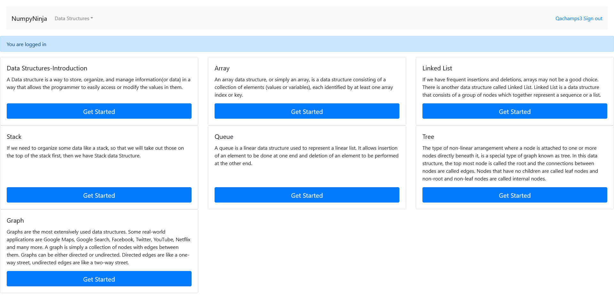PassLL_Try Here Editor page with invalid dataGiven The user is on the DS Introduction page as signedInAnd User clicks on Get Started button from Linked List panelGiven The user is on the editor page of Introduction pageWhen The user writes the invalid python code and clicks on Run buttonThen The user see error msg in alert windowPassLinked List home pageGiven The user is on the DS Introduction page as signedInAnd User clicks on Get Started button from Linked List panelGiven The user is on the Introduction pageWhen The user clicks Creating Linked LIst linkThen The user is redirected to Creating Linked List page.PassCreating Linked LIstGiven The user is on the DS Introduction page as signedInAnd User clicks on Get Started button from Linked List panelGiven The user is on the Creating Linked LIst pageWhen The user clicks Try Here buttonThen The user is redirected to a page having Editor and run buttonPassLL_Try Here Editor page with empty dataGiven The user is on the DS Introduction page as signedInAnd User clicks on Get Started button from Linked List panelGiven The user is on the editor page of Creating Linked LIst pageWhen The user writes no code inside editor window and clicks on Run buttonThen Nothing happens to the Editor page and no error message is displayedFailLL_Try Here Editor page with valid dataGiven The user is on the DS Introduction page as signedInAnd User clicks on Get Started button from Linked List panelGiven The user is on the editor page of Creating Linked LIst pageWhen The user writes the valid python code and clicks on Run buttonThen The user is able to see the output inside the console.Hooks.Hooks.takeScreenshot(io.cucumber.java.Scenario)screenshot PassLL_Try Here Editor page with invalid dataGiven The user is on the DS Introduction page as signedInAnd User clicks on Get Started button from Linked List panelGiven The user is on the editor page of Creating Linked LIst pageWhen The user writes the invalid python code and clicks on Run buttonThen The user see error msg in alert windowPassLinked List home pageGiven The user is on the DS Introduction page as signedInAnd User clicks on Get Started button from Linked List panelGiven The user is on the Creating Linked LIst pageWhen The user clicks Types of Linked List linkThen The user is directed to Types of Linked List page.PassTypes of Linked ListGiven The user is on the DS Introduction page as signedInAnd User clicks on Get Started button from Linked List panelGiven The user is on the Types of Linked List pageWhen The user clicks Try Here buttonThen The user is redirected to a page having Editor and run buttonPassLL_Try Here Editor page with empty dataGiven The user is on the DS Introduction page as signedInAnd User clicks on Get Started button from Linked List panelGiven The user is on the editor page of Types of Linked List pageWhen The user writes no code inside editor window and clicks on Run buttonThen Nothing happens to the Editor page and no error message is displayedPassLL_Try Here Editor page with valid dataGiven The user is on the DS Introduction page as signedInAnd User clicks on Get Started button from Linked List panelGiven The user is on the editor page of Types of Linked List pageWhen The user writes the valid python code and clicks on Run buttonThen The user is able to see the output inside the console.PassLL_Try Here Editor page with invalid dataGiven The user is on the DS Introduction page as signedInAnd User clicks on Get Started button from Linked List panelGiven The user is on the editor page of Types of Linked List pageWhen The user writes the invalid python code and clicks on Run buttonThen The user see error msg in alert windowPassLinked List home pageGiven The user is on the DS Introduction page as signedInAnd User clicks on Get Started button from Linked List panelGiven The user is on the Types of Linked List pageWhen The user clicks Implement Linked List in Python linkThen The user is redirected to Implement Linked List in Python page.PassImplement Linked List in PythonGiven The user is on the DS Introduction page as signedInAnd User clicks on Get Started button from Linked List panelGiven The user is on the Implement Linked List in Python pageWhen The user clicks Try Here buttonThen The user is redirected to a page having Editor and run buttonPassLL_Try Here Editor page with empty dataGiven The user is on the DS Introduction page as signedInAnd User clicks on Get Started button from Linked List panelGiven The user is on the editor page of Implement Linked List in Python pageWhen The user writes no code inside editor window and clicks on Run buttonThen Nothing happens to the Editor page and no error message is displayedPassLL_Try Here Editor page with valid dataGiven The user is on the DS Introduction page as signedInAnd User clicks on Get Started button from Linked List panelGiven The user is on the editor page of Implement Linked List in Python pageWhen The user writes the valid python code and clicks on Run buttonThen The user is able to see the output inside the console.PassLL_Try Here Editor page with invalid dataGiven The user is on the DS Introduction page as signedInAnd User clicks on Get Started button from Linked List panelGiven The user is on the editor page of Implement Linked List in Python pageWhen The user writes the invalid python code and clicks on Run buttonThen The user see error msg in alert windowPassLinked List home pageGiven The user is on the DS Introduction page as signedInAnd User clicks on Get Started button from Linked List panelGiven The user is on the Implement Linked List in Python pageWhen The user clicks Traversal linkThen The user is redirected to Traversal page.PassTraversalGiven The user is on the DS Introduction page as signedInAnd User clicks on Get Started button from Linked List panelGiven The user is on the Traversal pageWhen The user clicks Try Here buttonThen The user is redirected to a page having Editor and run buttonPassLL_Try Here Editor page with empty dataGiven The user is on the DS Introduction page as signedInAnd User clicks on Get Started button from Linked List panelGiven The user is on the editor page of Traversal pageWhen The user writes no code inside editor window and clicks on Run buttonThen Nothing happens to the Editor page and no error message is displayedPassLL_Try Here Editor page with valid dataGiven The user is on the DS Introduction page as signedInAnd User clicks on Get Started button from Linked List panelGiven The user is on the editor page of Traversal pageWhen The user writes the valid python code and clicks on Run buttonThen The user is able to see the output inside the console.PassLL_Try Here Editor page with invalid dataGiven The user is on the DS Introduction page as signedInAnd User clicks on Get Started button from Linked List panelGiven The user is on the editor page of Traversal pageWhen The user writes the invalid python code and clicks on Run buttonThen The user see error msg in alert windowPassLinked List home pageGiven The user is on the DS Introduction page as signedInAnd User clicks on Get Started button from Linked List panelGiven The user is on the Traversal pageWhen The user clicks Insertion linkThen The user is redirected to Insertion page.PassInsertionGiven The user is on the DS Introduction page as signedInAnd User clicks on Get Started button from Linked List panelGiven The user is on the Insertion pageWhen The user clicks Try Here buttonThen The user is redirected to a page having Editor and run buttonPassLL_Try Here Editor page with empty dataGiven The user is on the DS Introduction page as signedInAnd User clicks on Get Started button from Linked List panelGiven The user is on the editor page of Insertion pageWhen The user writes no code inside editor window and clicks on Run buttonThen Nothing happens to the Editor page and no error message is displayedPassLL_Try Here Editor page with valid dataGiven The user is on the DS Introduction page as signedInAnd User clicks on Get Started button from Linked List panelGiven The user is on the editor page of Insertion pageWhen The user writes the valid python code and clicks on Run buttonThen The user is able to see the output inside the console.PassLL_Try Here Editor page with invalid dataGiven The user is on the DS Introduction page as signedInAnd User clicks on Get Started button from Linked List panelGiven The user is on the editor page of Insertion pageWhen The user writes the invalid python code and clicks on Run buttonThen The user see error msg in alert windowPassLinked List home pageGiven The user is on the DS Introduction page as signedInAnd User clicks on Get Started button from Linked List panelGiven The user is on the Insertion pageWhen The user clicks Deletion linkThen The user is redirected to Deletion page.PassDeletionGiven The user is on the DS Introduction page as signedInAnd User clicks on Get Started button from Linked List panelGiven The user is on the Deletion pageWhen The user clicks Try Here buttonThen The user is redirected to a page having Editor and run buttonPassLL_Try Here Editor page with empty dataGiven The user is on the DS Introduction page as signedInAnd User clicks on Get Started button from Linked List panelGiven The user is on the editor page of Deletion pageWhen The user writes no code inside editor window and clicks on Run buttonThen Nothing happens to the Editor page and no error message is displayedPassLL_Try Here Editor page with valid dataGiven The user is on the DS Introduction page as signedInAnd User clicks on Get Started button from Linked List panelGiven The user is on the editor page of Deletion pageWhen The user writes the valid python code and clicks on Run buttonThen The user is able to see the output inside the console.PassLL_Try Here Editor page with invalid dataGiven The user is on the DS Introduction page as signedInAnd User clicks on Get Started button from Linked List panelGiven The user is on the editor page of Deletion pageWhen The user writes the invalid python code and clicks on Run buttonThen The user see error msg in alert windowPassIntroduction pageGiven The user is on the DS Introduction page as signedInAnd User clicks on Get Started button from Linked List panelGiven The user is on the Introduction pageWhen The user clicks Practice Questions linkThen The user is redirected to Practice Questions page.
PassLL_Try Here Editor page with invalid dataGiven The user is on the DS Introduction page as signedInAnd User clicks on Get Started button from Linked List panelGiven The user is on the editor page of Creating Linked LIst pageWhen The user writes the invalid python code and clicks on Run buttonThen The user see error msg in alert windowPassLinked List home pageGiven The user is on the DS Introduction page as signedInAnd User clicks on Get Started button from Linked List panelGiven The user is on the Creating Linked LIst pageWhen The user clicks Types of Linked List linkThen The user is directed to Types of Linked List page.PassTypes of Linked ListGiven The user is on the DS Introduction page as signedInAnd User clicks on Get Started button from Linked List panelGiven The user is on the Types of Linked List pageWhen The user clicks Try Here buttonThen The user is redirected to a page having Editor and run buttonPassLL_Try Here Editor page with empty dataGiven The user is on the DS Introduction page as signedInAnd User clicks on Get Started button from Linked List panelGiven The user is on the editor page of Types of Linked List pageWhen The user writes no code inside editor window and clicks on Run buttonThen Nothing happens to the Editor page and no error message is displayedPassLL_Try Here Editor page with valid dataGiven The user is on the DS Introduction page as signedInAnd User clicks on Get Started button from Linked List panelGiven The user is on the editor page of Types of Linked List pageWhen The user writes the valid python code and clicks on Run buttonThen The user is able to see the output inside the console.PassLL_Try Here Editor page with invalid dataGiven The user is on the DS Introduction page as signedInAnd User clicks on Get Started button from Linked List panelGiven The user is on the editor page of Types of Linked List pageWhen The user writes the invalid python code and clicks on Run buttonThen The user see error msg in alert windowPassLinked List home pageGiven The user is on the DS Introduction page as signedInAnd User clicks on Get Started button from Linked List panelGiven The user is on the Types of Linked List pageWhen The user clicks Implement Linked List in Python linkThen The user is redirected to Implement Linked List in Python page.PassImplement Linked List in PythonGiven The user is on the DS Introduction page as signedInAnd User clicks on Get Started button from Linked List panelGiven The user is on the Implement Linked List in Python pageWhen The user clicks Try Here buttonThen The user is redirected to a page having Editor and run buttonPassLL_Try Here Editor page with empty dataGiven The user is on the DS Introduction page as signedInAnd User clicks on Get Started button from Linked List panelGiven The user is on the editor page of Implement Linked List in Python pageWhen The user writes no code inside editor window and clicks on Run buttonThen Nothing happens to the Editor page and no error message is displayedPassLL_Try Here Editor page with valid dataGiven The user is on the DS Introduction page as signedInAnd User clicks on Get Started button from Linked List panelGiven The user is on the editor page of Implement Linked List in Python pageWhen The user writes the valid python code and clicks on Run buttonThen The user is able to see the output inside the console.PassLL_Try Here Editor page with invalid dataGiven The user is on the DS Introduction page as signedInAnd User clicks on Get Started button from Linked List panelGiven The user is on the editor page of Implement Linked List in Python pageWhen The user writes the invalid python code and clicks on Run buttonThen The user see error msg in alert windowPassLinked List home pageGiven The user is on the DS Introduction page as signedInAnd User clicks on Get Started button from Linked List panelGiven The user is on the Implement Linked List in Python pageWhen The user clicks Traversal linkThen The user is redirected to Traversal page.PassTraversalGiven The user is on the DS Introduction page as signedInAnd User clicks on Get Started button from Linked List panelGiven The user is on the Traversal pageWhen The user clicks Try Here buttonThen The user is redirected to a page having Editor and run buttonPassLL_Try Here Editor page with empty dataGiven The user is on the DS Introduction page as signedInAnd User clicks on Get Started button from Linked List panelGiven The user is on the editor page of Traversal pageWhen The user writes no code inside editor window and clicks on Run buttonThen Nothing happens to the Editor page and no error message is displayedPassLL_Try Here Editor page with valid dataGiven The user is on the DS Introduction page as signedInAnd User clicks on Get Started button from Linked List panelGiven The user is on the editor page of Traversal pageWhen The user writes the valid python code and clicks on Run buttonThen The user is able to see the output inside the console.PassLL_Try Here Editor page with invalid dataGiven The user is on the DS Introduction page as signedInAnd User clicks on Get Started button from Linked List panelGiven The user is on the editor page of Traversal pageWhen The user writes the invalid python code and clicks on Run buttonThen The user see error msg in alert windowPassLinked List home pageGiven The user is on the DS Introduction page as signedInAnd User clicks on Get Started button from Linked List panelGiven The user is on the Traversal pageWhen The user clicks Insertion linkThen The user is redirected to Insertion page.PassInsertionGiven The user is on the DS Introduction page as signedInAnd User clicks on Get Started button from Linked List panelGiven The user is on the Insertion pageWhen The user clicks Try Here buttonThen The user is redirected to a page having Editor and run buttonPassLL_Try Here Editor page with empty dataGiven The user is on the DS Introduction page as signedInAnd User clicks on Get Started button from Linked List panelGiven The user is on the editor page of Insertion pageWhen The user writes no code inside editor window and clicks on Run buttonThen Nothing happens to the Editor page and no error message is displayedPassLL_Try Here Editor page with valid dataGiven The user is on the DS Introduction page as signedInAnd User clicks on Get Started button from Linked List panelGiven The user is on the editor page of Insertion pageWhen The user writes the valid python code and clicks on Run buttonThen The user is able to see the output inside the console.PassLL_Try Here Editor page with invalid dataGiven The user is on the DS Introduction page as signedInAnd User clicks on Get Started button from Linked List panelGiven The user is on the editor page of Insertion pageWhen The user writes the invalid python code and clicks on Run buttonThen The user see error msg in alert windowPassLinked List home pageGiven The user is on the DS Introduction page as signedInAnd User clicks on Get Started button from Linked List panelGiven The user is on the Insertion pageWhen The user clicks Deletion linkThen The user is redirected to Deletion page.PassDeletionGiven The user is on the DS Introduction page as signedInAnd User clicks on Get Started button from Linked List panelGiven The user is on the Deletion pageWhen The user clicks Try Here buttonThen The user is redirected to a page having Editor and run buttonPassLL_Try Here Editor page with empty dataGiven The user is on the DS Introduction page as signedInAnd User clicks on Get Started button from Linked List panelGiven The user is on the editor page of Deletion pageWhen The user writes no code inside editor window and clicks on Run buttonThen Nothing happens to the Editor page and no error message is displayedPassLL_Try Here Editor page with valid dataGiven The user is on the DS Introduction page as signedInAnd User clicks on Get Started button from Linked List panelGiven The user is on the editor page of Deletion pageWhen The user writes the valid python code and clicks on Run buttonThen The user is able to see the output inside the console.PassLL_Try Here Editor page with invalid dataGiven The user is on the DS Introduction page as signedInAnd User clicks on Get Started button from Linked List panelGiven The user is on the editor page of Deletion pageWhen The user writes the invalid python code and clicks on Run buttonThen The user see error msg in alert windowPassIntroduction pageGiven The user is on the DS Introduction page as signedInAnd User clicks on Get Started button from Linked List panelGiven The user is on the Introduction pageWhen The user clicks Practice Questions linkThen The user is redirected to Practice Questions page. -
Login Feature
12:05:20 PM / 00:00:33:821 Pass
Login Feature
12.17.2024 12:05:20 PM 12.17.2024 12:05:54 PM 00:00:33:821 · #test-id=3074I want to use this template for my feature filePassDS Algo Sign in Page with blank infoPassDS Algo Sign in Page with blank infoGiven The user is on the DS Algo Sign in PageWhen The user clicks login button after leaving the username textbox and paswword textbox blank from sheetname "Login" and row 3Then The error message "Please fill out this field." appears below Username textboxPassDS Algo Sign in Page with blank passwordPassDS Algo Sign in Page with blank passwordGiven The user is on the DS Algo Sign in PageWhen The user clicks login button after entering only username from sheetname "Login" and row 6Then The error message "Please fill out this field." appears below Pwd textboxPassDS Algo Sign in Page with blank usernamePassDS Algo Sign in Page with blank usernameGiven The user is on the DS Algo Sign in PageWhen The user clicks login button after entering only password from sheetname "Login" and row 6Then The error message "Please fill out this field." appears below Username textboxPassDS Algo Sign in Page with invalid username and passwordPassDS Algo Sign in Page with invalid username and passwordGiven The user is on the DS Algo Sign in PageWhen The user clicks login button after entering invalid username and invalid password from sheetname "Login" and row 4Then The user should able to see an error message "Invalid Username and Password".PassDS Algo Sign in Page with valid username and invalid passwordPassDS Algo Sign in Page with valid username and invalid passwordGiven The user is on the DS Algo Sign in PageWhen The user clicks login button after entering valid userName and invalid password from sheetname "Login" and row 7Then The user should able to see an error message "Invalid Username and Password".PassDS Algo Sign in Page with valid username and Valid passwordPassDS Algo Sign in Page with valid username and Valid passwordGiven The user is on the DS Algo Sign in PageWhen The user clicks login button after entering valid userName and password from sheetname "Login" and row 6Then user lands on the home page as signedIn -
Queue Details page
12:05:44 PM / 00:01:40:175 Fail
Queue Details page
12.17.2024 12:05:44 PM 12.17.2024 12:07:24 PM 00:01:40:175 · #test-id=3135PassValidate user navigated to queue details page when clicked on get startedGiven The user is on the DS Introduction page as signedInWhen The user clicks on Get started link for QueueThen The user is on Queue Details pagePassValidate user can navigate to Implementations of Queue in PythonGiven The user is on the DS Introduction page as signedInWhen The user clicks on Get started link for QueueGiven The user is on Queue Details pageWhen The user clicks on Implementation of Queue python linkThen The user is on the Implimentation of Queue in Python pagePassValidate user can open try editor page from Implementation of Queue in pythonGiven The user is on the DS Introduction page as signedInWhen The user clicks on Get started link for QueueGiven The user on implementation Queue in python pageWhen User clicks Try here linkThen User should navigate to tryEditor pagePassError message displayed for invalid code on try editor for Implementation of Queue in pythonGiven The user is on the DS Introduction page as signedInWhen The user clicks on Get started link for QueueGiven The user on implementation Queue in python pageWhen User writes invalid code and clicks run buttonThen The user should able to see an error message in alert windowPassNo error message displayed for empty code on try editor for Implementation of Queue in pythonGiven The user is on the DS Introduction page as signedInWhen The user clicks on Get started link for QueueGiven The user on implementation Queue in python pageWhen User writes invalid code and clicks run buttonThen The user should able to see an error message in alert windowPassValid code on try editor for Implementation of Queue in python runs successfullyGiven The user is on the DS Introduction page as signedInWhen The user clicks on Get started link for QueueGiven The user on implementation Queue in python pageWhen User writes valid code and clicks run buttonThen The user should able to see output in the consolePassValidate user can navigate to Implementation using collections.dequeGiven The user is on the DS Introduction page as signedInWhen The user clicks on Get started link for QueueGiven The user is on Queue Details pageWhen The user click on Implementation using collections.deque linkThen the user is navigated to Queue in collections.dequePassValidate user can open try editor page from Implementation using collections.dequeGiven The user is on the DS Introduction page as signedInWhen The user clicks on Get started link for QueueGiven The user on Implementation using collection.deque in python pageWhen User clicks Try here linkThen User should navigate to tryEditor pagePassError message displayed for invalid code on try editor for Implementation using collections.dequeGiven The user is on the DS Introduction page as signedInWhen The user clicks on Get started link for QueueGiven The user on Implementation using collection.deque in python pageWhen User writes invalid code and clicks run buttonThen The user should able to see an error message in alert windowPassNo error message displayed for empty code on try editor for Implementation using collections.dequeGiven The user is on the DS Introduction page as signedInWhen The user clicks on Get started link for QueueGiven The user on Implementation using collection.deque in python pageWhen User clicks on run button with empty codeThen The user should not see any error message or alertPassValid code on try editor for Implementation using collections.deque runs successfullyGiven The user is on the DS Introduction page as signedInWhen The user clicks on Get started link for QueueGiven The user on Implementation using collection.deque in python pageWhen User writes valid code and clicks run buttonThen The user should able to see output in the consolePassValidate user can navigate to Implementation using collections.dequeGiven The user is on the DS Introduction page as signedInWhen The user clicks on Get started link for QueueGiven The user is on Queue Details pageWhen The user click on Queue OperationsThen the user is navigated to Queue Operations PagePassValidate user can open try editor page from Implementation using collections.dequeGiven The user is on the DS Introduction page as signedInWhen The user clicks on Get started link for QueueGiven The user is on Queue Operations pageWhen User clicks Try here linkThen User should navigate to tryEditor pageFailError message displayed for invalid code on try editor for Implementation using collections.dequeGiven The user is on the DS Introduction page as signedInWhen The user clicks on Get started link for QueueGiven The user is on Queue Operations pageWhen User writes invalid code and clicks run buttonThen The user should able to see an error message in alert windowHooks.Hooks.takeScreenshot(io.cucumber.java.Scenario)screenshot PassNo error message displayed for empty code on try editor for Implementation using collections.dequeGiven The user is on the DS Introduction page as signedInWhen The user clicks on Get started link for QueueGiven The user is on Queue Operations pageWhen User clicks on run button with empty codeThen The user should not see any error message or alertPassValid code on try editor for Implementation using collections.deque runs successfullyGiven The user is on the DS Introduction page as signedInWhen The user clicks on Get started link for QueueGiven The user is on Queue Operations pageWhen User writes invalid code and clicks run buttonThen The user should able to see an error message in alert windowPassValidate user can navigate to Implementation using collections.dequeGiven The user is on the DS Introduction page as signedInWhen The user clicks on Get started link for QueueGiven The user is on Queue Details pageWhen The user click on Implementation using array linkThen the user is navigated to Implementation using array pagePassValidate user can open try editor page from Implementation using collections.dequeGiven The user is on the DS Introduction page as signedInWhen The user clicks on Get started link for QueueGiven The user is on Implementation using array pageWhen User clicks Try here linkThen User should navigate to tryEditor pagePassError message displayed for invalid code on try editor for Implementation using collections.dequeGiven The user is on the DS Introduction page as signedInWhen The user clicks on Get started link for QueueGiven The user is on Implementation using array pageWhen User writes invalid code and clicks run buttonThen The user should able to see an error message in alert windowPassNo error message displayed for empty code on try editor for Implementation using collections.dequeGiven The user is on the DS Introduction page as signedInWhen The user clicks on Get started link for QueueGiven The user is on Implementation using array pageWhen User clicks on run button with empty codeThen The user should not see any error message or alertPassValid code on try editor for Implementation using collections.deque runs successfullyGiven The user is on the DS Introduction page as signedInWhen The user clicks on Get started link for QueueGiven The user is on Implementation using array pageWhen User writes valid code and clicks run buttonThen The user should able to see output in the console
PassNo error message displayed for empty code on try editor for Implementation using collections.dequeGiven The user is on the DS Introduction page as signedInWhen The user clicks on Get started link for QueueGiven The user is on Queue Operations pageWhen User clicks on run button with empty codeThen The user should not see any error message or alertPassValid code on try editor for Implementation using collections.deque runs successfullyGiven The user is on the DS Introduction page as signedInWhen The user clicks on Get started link for QueueGiven The user is on Queue Operations pageWhen User writes invalid code and clicks run buttonThen The user should able to see an error message in alert windowPassValidate user can navigate to Implementation using collections.dequeGiven The user is on the DS Introduction page as signedInWhen The user clicks on Get started link for QueueGiven The user is on Queue Details pageWhen The user click on Implementation using array linkThen the user is navigated to Implementation using array pagePassValidate user can open try editor page from Implementation using collections.dequeGiven The user is on the DS Introduction page as signedInWhen The user clicks on Get started link for QueueGiven The user is on Implementation using array pageWhen User clicks Try here linkThen User should navigate to tryEditor pagePassError message displayed for invalid code on try editor for Implementation using collections.dequeGiven The user is on the DS Introduction page as signedInWhen The user clicks on Get started link for QueueGiven The user is on Implementation using array pageWhen User writes invalid code and clicks run buttonThen The user should able to see an error message in alert windowPassNo error message displayed for empty code on try editor for Implementation using collections.dequeGiven The user is on the DS Introduction page as signedInWhen The user clicks on Get started link for QueueGiven The user is on Implementation using array pageWhen User clicks on run button with empty codeThen The user should not see any error message or alertPassValid code on try editor for Implementation using collections.deque runs successfullyGiven The user is on the DS Introduction page as signedInWhen The user clicks on Get started link for QueueGiven The user is on Implementation using array pageWhen User writes valid code and clicks run buttonThen The user should able to see output in the console -
Registration
12:07:12 PM / 00:00:41:830 Fail
Registration
12.17.2024 12:07:12 PM 12.17.2024 12:07:53 PM 00:00:41:830 · #test-id=3342I want to use this template for my feature filePassNew user registration page with all fields empty and Register button is clickedPassNew user registration page with all fields empty and Register button is clickedGiven The user is on the new user registration pageWhen The user clicks Register button with all fields empty on registration form from sheetname "register" and row 0Then The error Please fill out this field appears below Username textboxPassNew user registration page with only username enteredPassNew user registration page with only username enteredGiven The user is on the new user registration pageWhen The user clicks Register button after entering Username with other fields empty on registration form from sheetname "register" and row 1Then The error message Please fill out this field. appears below Password textboxPassNew user registration page with only username and password fields enteredPassNew user registration page with only username and password fields enteredGiven The user is on the new user registration pageWhen The user clicks Register button after entering Username and password with Password Confirmation field empty on registration form from sheetname "register" and row 2Then The error message Please fill out this field. appears below Password Confirmation textboxFailNew user registration page with username entered with a space inbetweenFailNew user registration page with username entered with a space inbetweenGiven The user is on the new user registration pageWhen The user clicks Register button after entering a username with spacebar characters other than digits and symbols on registration form from sheetname "register" and row 3Then The user is displayed with error msg after entering invalid data and redirects to empty username textboxHooks.Hooks.takeScreenshot(io.cucumber.java.Scenario)screenshot FailNew user registration page with valid username but only numeric password and confirm passwordFailNew user registration page with valid username but only numeric password and confirm passwordGiven The user is on the new user registration pageWhen The user clicks Register button after entering a password with only numeric data on registration form from sheetname "register" and row 4Then The user is displayed the appropriate error msg after entering invalid data and redirects to empty confirm password textboxHooks.Hooks.takeScreenshot(io.cucumber.java.Scenario)screenshotFailNew user registration page with valid username but password and confirm password fields has less than eight charactersFailNew user registration page with valid username but password and confirm password fields has less than eight charactersGiven The user is on the new user registration pageWhen The user clicks Register button after entering a Password with characters less than eight on registration form from sheetname "register" and row 5Then The user is displayed the appropriate error msg after entering invalid data and redirects to empty password confirm textboxHooks.Hooks.takeScreenshot(io.cucumber.java.Scenario)screenshot
FailNew user registration page with valid username but only numeric password and confirm passwordFailNew user registration page with valid username but only numeric password and confirm passwordGiven The user is on the new user registration pageWhen The user clicks Register button after entering a password with only numeric data on registration form from sheetname "register" and row 4Then The user is displayed the appropriate error msg after entering invalid data and redirects to empty confirm password textboxHooks.Hooks.takeScreenshot(io.cucumber.java.Scenario)screenshotFailNew user registration page with valid username but password and confirm password fields has less than eight charactersFailNew user registration page with valid username but password and confirm password fields has less than eight charactersGiven The user is on the new user registration pageWhen The user clicks Register button after entering a Password with characters less than eight on registration form from sheetname "register" and row 5Then The user is displayed the appropriate error msg after entering invalid data and redirects to empty password confirm textboxHooks.Hooks.takeScreenshot(io.cucumber.java.Scenario)screenshot PassNew user registration page on registration with different passwords entered in password and confirm password fieldsPassNew user registration page on registration with different passwords entered in password and confirm password fieldsGiven The user is on the new user registration pageWhen The user clicks Register button after entering different passwords in Password and Password Confirmation fields form from sheetname "register" and row 6Then The user is displayed with a warning message password_mismatch:The two password fields didn’t match.FailNew user registration page with all valid credentials enteredFailNew user registration page with all valid credentials enteredGiven The user is on the new user registration pageWhen The user clicks Register button after user fills registration form from sheetname "register" and row 7Then The user is redirected to Home Page of DS Algo with success message - New Account Created. You are logged in as username on the DS Algo Home PageHooks.Hooks.takeScreenshot(io.cucumber.java.Scenario)screenshot
PassNew user registration page on registration with different passwords entered in password and confirm password fieldsPassNew user registration page on registration with different passwords entered in password and confirm password fieldsGiven The user is on the new user registration pageWhen The user clicks Register button after entering different passwords in Password and Password Confirmation fields form from sheetname "register" and row 6Then The user is displayed with a warning message password_mismatch:The two password fields didn’t match.FailNew user registration page with all valid credentials enteredFailNew user registration page with all valid credentials enteredGiven The user is on the new user registration pageWhen The user clicks Register button after user fills registration form from sheetname "register" and row 7Then The user is redirected to Home Page of DS Algo with success message - New Account Created. You are logged in as username on the DS Algo Home PageHooks.Hooks.takeScreenshot(io.cucumber.java.Scenario)screenshot PassNew user registration page where login button is clickedGiven The user is on the new user registration pageWhen User clicks on login button from registration pageThen user lands on login pagePassNew user registration page where SignIn button is clickedGiven The user is on the new user registration pageWhen User clicks on SignIn button from registration pageThen user lands on login page
PassNew user registration page where login button is clickedGiven The user is on the new user registration pageWhen User clicks on login button from registration pageThen user lands on login pagePassNew user registration page where SignIn button is clickedGiven The user is on the new user registration pageWhen User clicks on SignIn button from registration pageThen user lands on login page -
Stack page
12:07:44 PM / 00:01:15:250 Fail
Stack page
12.17.2024 12:07:44 PM 12.17.2024 12:08:59 PM 00:01:15:250 · #test-id=3427I want to test the StackPagePassValidate user navigated to stack details page when clicked on get startedGiven The user is on the DS Introduction page as signedInWhen The user clicks on Get Started link for stackThen The user is on the stack details pagePassValidate user can navigate to Operations in Stack pageGiven The user is on the DS Introduction page as signedInWhen The user clicks on Get Started link for stackGiven The user is on the stack details pageWhen The user click on Operations in Stack linkThen the user is navigated to Operations in Stack pagePassValidate user can Try here link page from Operations in StackGiven The user is on the DS Introduction page as signedInWhen The user clicks on Get Started link for stackGiven The user is on the Operations in Stack pageWhen User clicks Try here linkThen User should navigate to tryEditor pageFailError message displayed for invalid code on try Editor for Operations in Stack pageGiven The user is on the DS Introduction page as signedInWhen The user clicks on Get Started link for stackGiven The user is on the Operations in Stack pageWhen User writes invalid code and clicks run buttonThen The user should able to see an error message in alert windowHooks.Hooks.takeScreenshot(io.cucumber.java.Scenario)screenshot PassNo error message displayed for empty code on try editor for Operations in Stack pageGiven The user is on the DS Introduction page as signedInWhen The user clicks on Get Started link for stackGiven The user is on the Operations in Stack pageWhen User clicks on run button with empty codeThen The user should not see any error message or alertPassValid code on try editor for Operations in Stack runs successfullyGiven The user is on the DS Introduction page as signedInWhen The user clicks on Get Started link for stackGiven The user is on the Operations in Stack pageWhen User writes valid code and clicks run buttonThen The user should able to see output in the consolePassValidate user can navigate to Implementation pageGiven The user is on the DS Introduction page as signedInWhen The user clicks on Get Started link for stackGiven The user is on the stack details pageWhen The user click on Implementation linkThen the user is navigated to Implementation pagePassValidate user can click on Try here link from Implementation pageGiven The user is on the DS Introduction page as signedInWhen The user clicks on Get Started link for stackGiven The user is on the Implementation pageWhen User clicks Try here linkThen User should navigate to tryEditor pagePassError message displayed for invalid code on try Editor for Implementation pageGiven The user is on the DS Introduction page as signedInWhen The user clicks on Get Started link for stackGiven The user is on the Implementation pageWhen User writes invalid code and clicks run buttonThen The user should able to see an error message in alert windowPassNo error message displayed for empty code on try editor for Implementation pageGiven The user is on the DS Introduction page as signedInWhen The user clicks on Get Started link for stackGiven The user is on the Implementation pageWhen User clicks on run button with empty codeThen The user should not see any error message or alertPassValid code on try editor for Implementation runs successfullyGiven The user is on the DS Introduction page as signedInWhen The user clicks on Get Started link for stackGiven The user is on the Implementation pageWhen User writes valid code and clicks run buttonThen The user should able to see output in the consolePassValidate user can navigate to Applications pageGiven The user is on the DS Introduction page as signedInWhen The user clicks on Get Started link for stackGiven The user is on the stack details pageWhen The user click on Applications linkThen the user is navigated to Applications pagePassValidate user can click on Try here link from Applications pageGiven The user is on the DS Introduction page as signedInWhen The user clicks on Get Started link for stackGiven The user is on the Applications pageWhen User clicks Try here linkThen User should navigate to tryEditor pagePassError message displayed for invalid code on try Editor for Applications pageGiven The user is on the DS Introduction page as signedInWhen The user clicks on Get Started link for stackGiven The user is on the Applications pageWhen User writes invalid code and clicks run buttonThen The user should able to see an error message in alert windowPassNo error message displayed for empty code on try editor for Applications pageGiven The user is on the DS Introduction page as signedInWhen The user clicks on Get Started link for stackGiven The user is on the Applications pageWhen User clicks on run button with empty codeThen The user should not see any error message or alertPassValid code on try editor for Applications runs successfullyGiven The user is on the DS Introduction page as signedInWhen The user clicks on Get Started link for stackGiven The user is on the Applications pageWhen User writes valid code and clicks run buttonThen The user should able to see output in the console
PassNo error message displayed for empty code on try editor for Operations in Stack pageGiven The user is on the DS Introduction page as signedInWhen The user clicks on Get Started link for stackGiven The user is on the Operations in Stack pageWhen User clicks on run button with empty codeThen The user should not see any error message or alertPassValid code on try editor for Operations in Stack runs successfullyGiven The user is on the DS Introduction page as signedInWhen The user clicks on Get Started link for stackGiven The user is on the Operations in Stack pageWhen User writes valid code and clicks run buttonThen The user should able to see output in the consolePassValidate user can navigate to Implementation pageGiven The user is on the DS Introduction page as signedInWhen The user clicks on Get Started link for stackGiven The user is on the stack details pageWhen The user click on Implementation linkThen the user is navigated to Implementation pagePassValidate user can click on Try here link from Implementation pageGiven The user is on the DS Introduction page as signedInWhen The user clicks on Get Started link for stackGiven The user is on the Implementation pageWhen User clicks Try here linkThen User should navigate to tryEditor pagePassError message displayed for invalid code on try Editor for Implementation pageGiven The user is on the DS Introduction page as signedInWhen The user clicks on Get Started link for stackGiven The user is on the Implementation pageWhen User writes invalid code and clicks run buttonThen The user should able to see an error message in alert windowPassNo error message displayed for empty code on try editor for Implementation pageGiven The user is on the DS Introduction page as signedInWhen The user clicks on Get Started link for stackGiven The user is on the Implementation pageWhen User clicks on run button with empty codeThen The user should not see any error message or alertPassValid code on try editor for Implementation runs successfullyGiven The user is on the DS Introduction page as signedInWhen The user clicks on Get Started link for stackGiven The user is on the Implementation pageWhen User writes valid code and clicks run buttonThen The user should able to see output in the consolePassValidate user can navigate to Applications pageGiven The user is on the DS Introduction page as signedInWhen The user clicks on Get Started link for stackGiven The user is on the stack details pageWhen The user click on Applications linkThen the user is navigated to Applications pagePassValidate user can click on Try here link from Applications pageGiven The user is on the DS Introduction page as signedInWhen The user clicks on Get Started link for stackGiven The user is on the Applications pageWhen User clicks Try here linkThen User should navigate to tryEditor pagePassError message displayed for invalid code on try Editor for Applications pageGiven The user is on the DS Introduction page as signedInWhen The user clicks on Get Started link for stackGiven The user is on the Applications pageWhen User writes invalid code and clicks run buttonThen The user should able to see an error message in alert windowPassNo error message displayed for empty code on try editor for Applications pageGiven The user is on the DS Introduction page as signedInWhen The user clicks on Get Started link for stackGiven The user is on the Applications pageWhen User clicks on run button with empty codeThen The user should not see any error message or alertPassValid code on try editor for Applications runs successfullyGiven The user is on the DS Introduction page as signedInWhen The user clicks on Get Started link for stackGiven The user is on the Applications pageWhen User writes valid code and clicks run buttonThen The user should able to see output in the console -
Tree
12:08:58 PM / 00:06:10:055 Fail
Tree
12.17.2024 12:08:58 PM 12.17.2024 12:15:08 PM 00:06:10:055 · #test-id=3598PassDS_algo Home pageGiven The user is on the DS Introduction page as signedInAnd User clicks on Get Started button from Tree panelWhen The user select Tree from the Data Structure dropdown menuThen The user is redirected to Tree page.PassTree home pageGiven The user is on the DS Introduction page as signedInAnd User clicks on Get Started button from Tree panelWhen The user clicks Overview of Trees linkThen The user is redirected to Overview of Trees page.PassOverview of TreesGiven The user is on the DS Introduction page as signedInAnd User clicks on Get Started button from Tree panelGiven The user is on the Overview of Trees pageWhen The user clicks Try Here buttonThen The user is redirected to a page having Editor and run buttonPassTry Here Editor page with empty codeGiven The user is on the DS Introduction page as signedInAnd User clicks on Get Started button from Tree panelGiven The user is on the Editor page of Overview of Trees pageWhen The user writes no code inside editor window and clicks on Run buttonThen Nothing happens to the Editor page and no error message is displayedFailTry Here Editor page with valid dataGiven The user is on the DS Introduction page as signedInAnd User clicks on Get Started button from Tree panelGiven The user is on the Editor page of Overview of Trees pageWhen The user writes the valid python code and clicks on Run buttonThen The user is able to see the output inside the console.Hooks.Hooks.takeScreenshot(io.cucumber.java.Scenario)screenshot FailTry Here Editor page with invalid dataGiven The user is on the DS Introduction page as signedInAnd User clicks on Get Started button from Tree panelGiven The user is on the Editor page of Overview of Trees pageWhen The user writes the invalid python code and clicks on Run buttonThen The user see error msg in alert windowHooks.Hooks.takeScreenshot(io.cucumber.java.Scenario)screenshotPassOverview of TreesGiven The user is on the DS Introduction page as signedInAnd User clicks on Get Started button from Tree panelGiven The user is on the Overview of Trees pageWhen The user clicks Terminologies linkThen The user is redirected to Terminologies pagePassTerminologiesGiven The user is on the DS Introduction page as signedInAnd User clicks on Get Started button from Tree panelGiven The user is on the Terminologies pageWhen The user clicks Try Here buttonThen The user is redirected to a page having Editor and run buttonPassTry Here Editor page with empty codeGiven The user is on the DS Introduction page as signedInAnd User clicks on Get Started button from Tree panelGiven The user is on the Editor page of Terminologies pageWhen The user writes no code inside editor window and clicks on Run buttonThen Nothing happens to the Editor page and no error message is displayedPassTry Here Editor page with valid dataGiven The user is on the DS Introduction page as signedInAnd User clicks on Get Started button from Tree panelGiven The user is on the Editor page of Terminologies pageWhen The user writes the valid python code and clicks on Run buttonThen The user is able to see the output inside the console.FailTry Here Editor page with invalid dataGiven The user is on the DS Introduction page as signedInAnd User clicks on Get Started button from Tree panelGiven The user is on the Editor page of Terminologies pageWhen The user writes the invalid python code and clicks on Run buttonThen The user see error msg in alert windowHooks.Hooks.takeScreenshot(io.cucumber.java.Scenario)screenshot
FailTry Here Editor page with invalid dataGiven The user is on the DS Introduction page as signedInAnd User clicks on Get Started button from Tree panelGiven The user is on the Editor page of Overview of Trees pageWhen The user writes the invalid python code and clicks on Run buttonThen The user see error msg in alert windowHooks.Hooks.takeScreenshot(io.cucumber.java.Scenario)screenshotPassOverview of TreesGiven The user is on the DS Introduction page as signedInAnd User clicks on Get Started button from Tree panelGiven The user is on the Overview of Trees pageWhen The user clicks Terminologies linkThen The user is redirected to Terminologies pagePassTerminologiesGiven The user is on the DS Introduction page as signedInAnd User clicks on Get Started button from Tree panelGiven The user is on the Terminologies pageWhen The user clicks Try Here buttonThen The user is redirected to a page having Editor and run buttonPassTry Here Editor page with empty codeGiven The user is on the DS Introduction page as signedInAnd User clicks on Get Started button from Tree panelGiven The user is on the Editor page of Terminologies pageWhen The user writes no code inside editor window and clicks on Run buttonThen Nothing happens to the Editor page and no error message is displayedPassTry Here Editor page with valid dataGiven The user is on the DS Introduction page as signedInAnd User clicks on Get Started button from Tree panelGiven The user is on the Editor page of Terminologies pageWhen The user writes the valid python code and clicks on Run buttonThen The user is able to see the output inside the console.FailTry Here Editor page with invalid dataGiven The user is on the DS Introduction page as signedInAnd User clicks on Get Started button from Tree panelGiven The user is on the Editor page of Terminologies pageWhen The user writes the invalid python code and clicks on Run buttonThen The user see error msg in alert windowHooks.Hooks.takeScreenshot(io.cucumber.java.Scenario)screenshot PassTerminologiesGiven The user is on the DS Introduction page as signedInAnd User clicks on Get Started button from Tree panelGiven The user is on the Terminologies pageWhen The user clicks Types of Trees link from TerminologiesPageThen The user is redirected to Types of Trees page.PassTypes of TreesGiven The user is on the DS Introduction page as signedInAnd User clicks on Get Started button from Tree panelGiven The user is on the Types of Trees pageWhen The user clicks Try Here buttonThen The user is redirected to a page having Editor and run buttonPassTry Here Editor page with empty codeGiven The user is on the DS Introduction page as signedInAnd User clicks on Get Started button from Tree panelGiven The user is on the Editor Page of Types of Trees pageWhen The user writes no code inside editor window and clicks on Run buttonThen Nothing happens to the Editor page and no error message is displayedPassTry Here Editor page with valid dataGiven The user is on the DS Introduction page as signedInAnd User clicks on Get Started button from Tree panelGiven The user is on the Editor Page of Types of Trees pageWhen The user writes the valid python code and clicks on Run buttonThen The user is able to see the output inside the console.FailTry Here Editor page with invalid dataGiven The user is on the DS Introduction page as signedInAnd User clicks on Get Started button from Tree panelGiven The user is on the Editor Page of Types of Trees pageWhen The user writes the invalid python code and clicks on Run buttonThen The user see error msg in alert windowHooks.Hooks.takeScreenshot(io.cucumber.java.Scenario)screenshot
PassTerminologiesGiven The user is on the DS Introduction page as signedInAnd User clicks on Get Started button from Tree panelGiven The user is on the Terminologies pageWhen The user clicks Types of Trees link from TerminologiesPageThen The user is redirected to Types of Trees page.PassTypes of TreesGiven The user is on the DS Introduction page as signedInAnd User clicks on Get Started button from Tree panelGiven The user is on the Types of Trees pageWhen The user clicks Try Here buttonThen The user is redirected to a page having Editor and run buttonPassTry Here Editor page with empty codeGiven The user is on the DS Introduction page as signedInAnd User clicks on Get Started button from Tree panelGiven The user is on the Editor Page of Types of Trees pageWhen The user writes no code inside editor window and clicks on Run buttonThen Nothing happens to the Editor page and no error message is displayedPassTry Here Editor page with valid dataGiven The user is on the DS Introduction page as signedInAnd User clicks on Get Started button from Tree panelGiven The user is on the Editor Page of Types of Trees pageWhen The user writes the valid python code and clicks on Run buttonThen The user is able to see the output inside the console.FailTry Here Editor page with invalid dataGiven The user is on the DS Introduction page as signedInAnd User clicks on Get Started button from Tree panelGiven The user is on the Editor Page of Types of Trees pageWhen The user writes the invalid python code and clicks on Run buttonThen The user see error msg in alert windowHooks.Hooks.takeScreenshot(io.cucumber.java.Scenario)screenshot PassTypes of TreesGiven The user is on the DS Introduction page as signedInAnd User clicks on Get Started button from Tree panelGiven The user is on the Types of Trees pageWhen The user clicks Tree Traversals linkThen The user is redirected to Tree Traversals pagePassTree TraversalsGiven The user is on the DS Introduction page as signedInAnd User clicks on Get Started button from Tree panelGiven The user is on the Tree Traversals pageWhen The user clicks Try Here buttonThen The user is redirected to a page having Editor and run buttonPassTry Here Editor page with empty codeGiven The user is on the DS Introduction page as signedInAnd User clicks on Get Started button from Tree panelGiven The user is on the Editor page of Tree Traversals pageWhen The user writes no code inside editor window and clicks on Run buttonThen Nothing happens to the Editor page and no error message is displayedFailTry Here Editor page with valid dataGiven The user is on the DS Introduction page as signedInAnd User clicks on Get Started button from Tree panelGiven The user is on the Editor page of Tree Traversals pageWhen The user writes the valid python code and clicks on Run buttonThen The user is able to see the output inside the console.Hooks.Hooks.takeScreenshot(io.cucumber.java.Scenario)screenshot
PassTypes of TreesGiven The user is on the DS Introduction page as signedInAnd User clicks on Get Started button from Tree panelGiven The user is on the Types of Trees pageWhen The user clicks Tree Traversals linkThen The user is redirected to Tree Traversals pagePassTree TraversalsGiven The user is on the DS Introduction page as signedInAnd User clicks on Get Started button from Tree panelGiven The user is on the Tree Traversals pageWhen The user clicks Try Here buttonThen The user is redirected to a page having Editor and run buttonPassTry Here Editor page with empty codeGiven The user is on the DS Introduction page as signedInAnd User clicks on Get Started button from Tree panelGiven The user is on the Editor page of Tree Traversals pageWhen The user writes no code inside editor window and clicks on Run buttonThen Nothing happens to the Editor page and no error message is displayedFailTry Here Editor page with valid dataGiven The user is on the DS Introduction page as signedInAnd User clicks on Get Started button from Tree panelGiven The user is on the Editor page of Tree Traversals pageWhen The user writes the valid python code and clicks on Run buttonThen The user is able to see the output inside the console.Hooks.Hooks.takeScreenshot(io.cucumber.java.Scenario)screenshot PassTry Here Editor page with invalid dataGiven The user is on the DS Introduction page as signedInAnd User clicks on Get Started button from Tree panelGiven The user is on the Editor page of Tree Traversals pageWhen The user writes the invalid python code and clicks on Run buttonThen The user see error msg in alert windowPassTree TraversalsGiven The user is on the DS Introduction page as signedInAnd User clicks on Get Started button from Tree panelGiven The user is on the Tree Traversals pageWhen The user clicks Traversals-Illustration linkThen The user is redirected to Traversals-Illustration pagePassTraversals-IllustrationGiven The user is on the DS Introduction page as signedInAnd User clicks on Get Started button from Tree panelGiven The user is on the Traversals-Illustration pageWhen The user clicks Try Here buttonThen The user is redirected to a page having Editor and run buttonPassTry Here Editor page with empty codeGiven The user is on the DS Introduction page as signedInAnd User clicks on Get Started button from Tree panelGiven The user is on the Editor page of Traversals-Illustration pageWhen The user writes no code inside editor window and clicks on Run buttonThen Nothing happens to the Editor page and no error message is displayedPassTry Here Editor page with valid dataGiven The user is on the DS Introduction page as signedInAnd User clicks on Get Started button from Tree panelGiven The user is on the Editor page of Traversals-Illustration pageWhen The user writes the valid python code and clicks on Run buttonThen The user is able to see the output inside the console.PassTry Here Editor page with invalid dataGiven The user is on the DS Introduction page as signedInAnd User clicks on Get Started button from Tree panelGiven The user is on the Editor page of Traversals-Illustration pageWhen The user writes the invalid python code and clicks on Run buttonThen The user see error msg in alert windowPassTraversals-IllustrationGiven The user is on the DS Introduction page as signedInAnd User clicks on Get Started button from Tree panelGiven The user is on the Traversals-Illustration pageWhen The user clicks Binary Trees linkThen The user is redirected to Binary Trees page.PassBinary TreesGiven The user is on the DS Introduction page as signedInAnd User clicks on Get Started button from Tree panelGiven The user is on the Binary Trees pageWhen The user clicks Try Here buttonThen The user is redirected to a page having Editor and run buttonPassTry Here Editor page with empty codeGiven The user is on the DS Introduction page as signedInAnd User clicks on Get Started button from Tree panelGiven The user is on the Editor page of Binary Trees pageWhen The user writes no code inside editor window and clicks on Run buttonThen Nothing happens to the Editor page and no error message is displayedPassTry Here Editor page with valid dataGiven The user is on the DS Introduction page as signedInAnd User clicks on Get Started button from Tree panelGiven The user is on the Editor page of Binary Trees pageWhen The user writes the valid python code and clicks on Run buttonThen The user is able to see the output inside the console.PassTry Here Editor page with invalid dataGiven The user is on the DS Introduction page as signedInAnd User clicks on Get Started button from Tree panelGiven The user is on the Editor page of Binary Trees pageWhen The user writes the invalid python code and clicks on Run buttonThen The user see error msg in alert windowPassBinary TreesGiven The user is on the DS Introduction page as signedInAnd User clicks on Get Started button from Tree panelGiven The user is on the Binary Trees pageWhen The user clicks Types of Binary Trees linkThen The user is redirected to Types of Binary Trees page.PassTypes of Binary TreesGiven The user is on the DS Introduction page as signedInAnd User clicks on Get Started button from Tree panelGiven The user is on the Types of Binary Trees pageWhen The user clicks Try Here buttonThen The user is redirected to a page having Editor and run buttonPassTry Here Editor page with empty codeGiven The user is on the DS Introduction page as signedInAnd User clicks on Get Started button from Tree panelGiven The user is on the Editor page of Types of Binary Trees pageWhen The user writes no code inside editor window and clicks on Run buttonThen Nothing happens to the Editor page and no error message is displayedPassTry Here Editor page with valid dataGiven The user is on the DS Introduction page as signedInAnd User clicks on Get Started button from Tree panelGiven The user is on the Editor page of Types of Binary Trees pageWhen The user writes the valid python code and clicks on Run buttonThen The user is able to see the output inside the console.PassTry Here Editor page with invalid dataGiven The user is on the DS Introduction page as signedInAnd User clicks on Get Started button from Tree panelGiven The user is on the Editor page of Types of Binary Trees pageWhen The user writes the invalid python code and clicks on Run buttonThen The user see error msg in alert windowPassTypes of Binary TreesGiven The user is on the DS Introduction page as signedInAnd User clicks on Get Started button from Tree panelGiven The user is on the Types of Binary Trees pageWhen The user clicks Implementation in Python Trees linkThen The user is redirected to Implementation in Python page.PassImplementation in PythonGiven The user is on the DS Introduction page as signedInAnd User clicks on Get Started button from Tree panelGiven The user is on the Implementation in Python pageWhen The user clicks Try Here buttonThen The user is redirected to a page having Editor and run buttonPassTry Here Editor page with empty codeGiven The user is on the DS Introduction page as signedInAnd User clicks on Get Started button from Tree panelGiven The user is on the editor page of Implementation in Python pageWhen The user writes no code inside editor window and clicks on Run buttonThen Nothing happens to the Editor page and no error message is displayedPassTry Here Editor page with valid dataGiven The user is on the DS Introduction page as signedInAnd User clicks on Get Started button from Tree panelGiven The user is on the editor page of Implementation in Python pageWhen The user writes the valid python code and clicks on Run buttonThen The user is able to see the output inside the console.FailTry Here Editor page with invalid dataGiven The user is on the DS Introduction page as signedInAnd User clicks on Get Started button from Tree panelGiven The user is on the editor page of Implementation in Python pageWhen The user writes the invalid python code and clicks on Run buttonThen The user see error msg in alert windowHooks.Hooks.takeScreenshot(io.cucumber.java.Scenario)screenshot
PassTry Here Editor page with invalid dataGiven The user is on the DS Introduction page as signedInAnd User clicks on Get Started button from Tree panelGiven The user is on the Editor page of Tree Traversals pageWhen The user writes the invalid python code and clicks on Run buttonThen The user see error msg in alert windowPassTree TraversalsGiven The user is on the DS Introduction page as signedInAnd User clicks on Get Started button from Tree panelGiven The user is on the Tree Traversals pageWhen The user clicks Traversals-Illustration linkThen The user is redirected to Traversals-Illustration pagePassTraversals-IllustrationGiven The user is on the DS Introduction page as signedInAnd User clicks on Get Started button from Tree panelGiven The user is on the Traversals-Illustration pageWhen The user clicks Try Here buttonThen The user is redirected to a page having Editor and run buttonPassTry Here Editor page with empty codeGiven The user is on the DS Introduction page as signedInAnd User clicks on Get Started button from Tree panelGiven The user is on the Editor page of Traversals-Illustration pageWhen The user writes no code inside editor window and clicks on Run buttonThen Nothing happens to the Editor page and no error message is displayedPassTry Here Editor page with valid dataGiven The user is on the DS Introduction page as signedInAnd User clicks on Get Started button from Tree panelGiven The user is on the Editor page of Traversals-Illustration pageWhen The user writes the valid python code and clicks on Run buttonThen The user is able to see the output inside the console.PassTry Here Editor page with invalid dataGiven The user is on the DS Introduction page as signedInAnd User clicks on Get Started button from Tree panelGiven The user is on the Editor page of Traversals-Illustration pageWhen The user writes the invalid python code and clicks on Run buttonThen The user see error msg in alert windowPassTraversals-IllustrationGiven The user is on the DS Introduction page as signedInAnd User clicks on Get Started button from Tree panelGiven The user is on the Traversals-Illustration pageWhen The user clicks Binary Trees linkThen The user is redirected to Binary Trees page.PassBinary TreesGiven The user is on the DS Introduction page as signedInAnd User clicks on Get Started button from Tree panelGiven The user is on the Binary Trees pageWhen The user clicks Try Here buttonThen The user is redirected to a page having Editor and run buttonPassTry Here Editor page with empty codeGiven The user is on the DS Introduction page as signedInAnd User clicks on Get Started button from Tree panelGiven The user is on the Editor page of Binary Trees pageWhen The user writes no code inside editor window and clicks on Run buttonThen Nothing happens to the Editor page and no error message is displayedPassTry Here Editor page with valid dataGiven The user is on the DS Introduction page as signedInAnd User clicks on Get Started button from Tree panelGiven The user is on the Editor page of Binary Trees pageWhen The user writes the valid python code and clicks on Run buttonThen The user is able to see the output inside the console.PassTry Here Editor page with invalid dataGiven The user is on the DS Introduction page as signedInAnd User clicks on Get Started button from Tree panelGiven The user is on the Editor page of Binary Trees pageWhen The user writes the invalid python code and clicks on Run buttonThen The user see error msg in alert windowPassBinary TreesGiven The user is on the DS Introduction page as signedInAnd User clicks on Get Started button from Tree panelGiven The user is on the Binary Trees pageWhen The user clicks Types of Binary Trees linkThen The user is redirected to Types of Binary Trees page.PassTypes of Binary TreesGiven The user is on the DS Introduction page as signedInAnd User clicks on Get Started button from Tree panelGiven The user is on the Types of Binary Trees pageWhen The user clicks Try Here buttonThen The user is redirected to a page having Editor and run buttonPassTry Here Editor page with empty codeGiven The user is on the DS Introduction page as signedInAnd User clicks on Get Started button from Tree panelGiven The user is on the Editor page of Types of Binary Trees pageWhen The user writes no code inside editor window and clicks on Run buttonThen Nothing happens to the Editor page and no error message is displayedPassTry Here Editor page with valid dataGiven The user is on the DS Introduction page as signedInAnd User clicks on Get Started button from Tree panelGiven The user is on the Editor page of Types of Binary Trees pageWhen The user writes the valid python code and clicks on Run buttonThen The user is able to see the output inside the console.PassTry Here Editor page with invalid dataGiven The user is on the DS Introduction page as signedInAnd User clicks on Get Started button from Tree panelGiven The user is on the Editor page of Types of Binary Trees pageWhen The user writes the invalid python code and clicks on Run buttonThen The user see error msg in alert windowPassTypes of Binary TreesGiven The user is on the DS Introduction page as signedInAnd User clicks on Get Started button from Tree panelGiven The user is on the Types of Binary Trees pageWhen The user clicks Implementation in Python Trees linkThen The user is redirected to Implementation in Python page.PassImplementation in PythonGiven The user is on the DS Introduction page as signedInAnd User clicks on Get Started button from Tree panelGiven The user is on the Implementation in Python pageWhen The user clicks Try Here buttonThen The user is redirected to a page having Editor and run buttonPassTry Here Editor page with empty codeGiven The user is on the DS Introduction page as signedInAnd User clicks on Get Started button from Tree panelGiven The user is on the editor page of Implementation in Python pageWhen The user writes no code inside editor window and clicks on Run buttonThen Nothing happens to the Editor page and no error message is displayedPassTry Here Editor page with valid dataGiven The user is on the DS Introduction page as signedInAnd User clicks on Get Started button from Tree panelGiven The user is on the editor page of Implementation in Python pageWhen The user writes the valid python code and clicks on Run buttonThen The user is able to see the output inside the console.FailTry Here Editor page with invalid dataGiven The user is on the DS Introduction page as signedInAnd User clicks on Get Started button from Tree panelGiven The user is on the editor page of Implementation in Python pageWhen The user writes the invalid python code and clicks on Run buttonThen The user see error msg in alert windowHooks.Hooks.takeScreenshot(io.cucumber.java.Scenario)screenshot PassImplementation in PythonGiven The user is on the DS Introduction page as signedInAnd User clicks on Get Started button from Tree panelGiven The user is on the Implementation in Python pageWhen The user clicks Binary Tree Traversals linkThen The user is redirected to Binary Tree Traversals page.PassBinary Tree TraversalsGiven The user is on the DS Introduction page as signedInAnd User clicks on Get Started button from Tree panelGiven The user is on the Binary Tree Traversals pageWhen The user clicks Try Here buttonThen The user is redirected to a page having Editor and run buttonPassTry Here Editor page with empty codeGiven The user is on the DS Introduction page as signedInAnd User clicks on Get Started button from Tree panelGiven The user is on the editor page of Binary Tree Traversals pageWhen The user writes no code inside editor window and clicks on Run buttonThen Nothing happens to the Editor page and no error message is displayedPassTry Here Editor page with valid dataGiven The user is on the DS Introduction page as signedInAnd User clicks on Get Started button from Tree panelGiven The user is on the editor page of Binary Tree Traversals pageWhen The user writes the valid python code and clicks on Run buttonThen The user is able to see the output inside the console.FailTry Here Editor page with invalid dataGiven The user is on the DS Introduction page as signedInAnd User clicks on Get Started button from Tree panelGiven The user is on the editor page of Binary Tree Traversals pageWhen The user writes the invalid python code and clicks on Run buttonThen The user see error msg in alert windowHooks.Hooks.takeScreenshot(io.cucumber.java.Scenario)screenshot
PassImplementation in PythonGiven The user is on the DS Introduction page as signedInAnd User clicks on Get Started button from Tree panelGiven The user is on the Implementation in Python pageWhen The user clicks Binary Tree Traversals linkThen The user is redirected to Binary Tree Traversals page.PassBinary Tree TraversalsGiven The user is on the DS Introduction page as signedInAnd User clicks on Get Started button from Tree panelGiven The user is on the Binary Tree Traversals pageWhen The user clicks Try Here buttonThen The user is redirected to a page having Editor and run buttonPassTry Here Editor page with empty codeGiven The user is on the DS Introduction page as signedInAnd User clicks on Get Started button from Tree panelGiven The user is on the editor page of Binary Tree Traversals pageWhen The user writes no code inside editor window and clicks on Run buttonThen Nothing happens to the Editor page and no error message is displayedPassTry Here Editor page with valid dataGiven The user is on the DS Introduction page as signedInAnd User clicks on Get Started button from Tree panelGiven The user is on the editor page of Binary Tree Traversals pageWhen The user writes the valid python code and clicks on Run buttonThen The user is able to see the output inside the console.FailTry Here Editor page with invalid dataGiven The user is on the DS Introduction page as signedInAnd User clicks on Get Started button from Tree panelGiven The user is on the editor page of Binary Tree Traversals pageWhen The user writes the invalid python code and clicks on Run buttonThen The user see error msg in alert windowHooks.Hooks.takeScreenshot(io.cucumber.java.Scenario)screenshot PassBinary Tree TraversalsGiven The user is on the DS Introduction page as signedInAnd User clicks on Get Started button from Tree panelGiven The user is on the Binary Tree Traversals pageWhen The user clicks Implementation of Binary Trees buttonThen The user is redirected to Implementation of Binary Trees page.PassImplementation of Binary TreesGiven The user is on the DS Introduction page as signedInAnd User clicks on Get Started button from Tree panelGiven The user is on the Implementation of Binary Trees pageWhen The user clicks Try Here buttonThen The user is redirected to a page having Editor and run buttonPassTry Here Editor page with empty codeGiven The user is on the DS Introduction page as signedInAnd User clicks on Get Started button from Tree panelGiven The user is on the editor page of Implementation of Binary Trees pageWhen The user writes no code inside editor window and clicks on Run buttonThen Nothing happens to the Editor page and no error message is displayedPassTry Here Editor page with valid dataGiven The user is on the DS Introduction page as signedInAnd User clicks on Get Started button from Tree panelGiven The user is on the editor page of Implementation of Binary Trees pageWhen The user writes the valid python code and clicks on Run buttonThen The user is able to see the output inside the console.PassTry Here Editor page with invalid dataGiven The user is on the DS Introduction page as signedInAnd User clicks on Get Started button from Tree panelGiven The user is on the editor page of Implementation of Binary Trees pageWhen The user writes the invalid python code and clicks on Run buttonThen The user see error msg in alert windowPassImplementation of Binary TreesGiven The user is on the DS Introduction page as signedInAnd User clicks on Get Started button from Tree panelGiven The user is on the Implementation of Binary Trees pageWhen The user clicks Applications of Binary trees linkThen The user is redirected to Applications of Binary trees page.PassApplications of Binary treesGiven The user is on the DS Introduction page as signedInAnd User clicks on Get Started button from Tree panelGiven The user is on the Applications of Binary trees pageWhen The user clicks Try Here buttonThen The user is redirected to a page having Editor and run buttonPassTry Here Editor page with empty codeGiven The user is on the DS Introduction page as signedInAnd User clicks on Get Started button from Tree panelGiven The user is on the editor page of Applications of Binary trees pageWhen The user writes no code inside editor window and clicks on Run buttonThen Nothing happens to the Editor page and no error message is displayedPassTry Here Editor page with valid dataGiven The user is on the DS Introduction page as signedInAnd User clicks on Get Started button from Tree panelGiven The user is on the editor page of Applications of Binary trees pageWhen The user writes the valid python code and clicks on Run buttonThen The user is able to see the output inside the console.FailTry Here Editor page with invalid dataGiven The user is on the DS Introduction page as signedInAnd User clicks on Get Started button from Tree panelGiven The user is on the editor page of Applications of Binary trees pageWhen The user writes the invalid python code and clicks on Run buttonThen The user see error msg in alert windowHooks.Hooks.takeScreenshot(io.cucumber.java.Scenario)screenshot
PassBinary Tree TraversalsGiven The user is on the DS Introduction page as signedInAnd User clicks on Get Started button from Tree panelGiven The user is on the Binary Tree Traversals pageWhen The user clicks Implementation of Binary Trees buttonThen The user is redirected to Implementation of Binary Trees page.PassImplementation of Binary TreesGiven The user is on the DS Introduction page as signedInAnd User clicks on Get Started button from Tree panelGiven The user is on the Implementation of Binary Trees pageWhen The user clicks Try Here buttonThen The user is redirected to a page having Editor and run buttonPassTry Here Editor page with empty codeGiven The user is on the DS Introduction page as signedInAnd User clicks on Get Started button from Tree panelGiven The user is on the editor page of Implementation of Binary Trees pageWhen The user writes no code inside editor window and clicks on Run buttonThen Nothing happens to the Editor page and no error message is displayedPassTry Here Editor page with valid dataGiven The user is on the DS Introduction page as signedInAnd User clicks on Get Started button from Tree panelGiven The user is on the editor page of Implementation of Binary Trees pageWhen The user writes the valid python code and clicks on Run buttonThen The user is able to see the output inside the console.PassTry Here Editor page with invalid dataGiven The user is on the DS Introduction page as signedInAnd User clicks on Get Started button from Tree panelGiven The user is on the editor page of Implementation of Binary Trees pageWhen The user writes the invalid python code and clicks on Run buttonThen The user see error msg in alert windowPassImplementation of Binary TreesGiven The user is on the DS Introduction page as signedInAnd User clicks on Get Started button from Tree panelGiven The user is on the Implementation of Binary Trees pageWhen The user clicks Applications of Binary trees linkThen The user is redirected to Applications of Binary trees page.PassApplications of Binary treesGiven The user is on the DS Introduction page as signedInAnd User clicks on Get Started button from Tree panelGiven The user is on the Applications of Binary trees pageWhen The user clicks Try Here buttonThen The user is redirected to a page having Editor and run buttonPassTry Here Editor page with empty codeGiven The user is on the DS Introduction page as signedInAnd User clicks on Get Started button from Tree panelGiven The user is on the editor page of Applications of Binary trees pageWhen The user writes no code inside editor window and clicks on Run buttonThen Nothing happens to the Editor page and no error message is displayedPassTry Here Editor page with valid dataGiven The user is on the DS Introduction page as signedInAnd User clicks on Get Started button from Tree panelGiven The user is on the editor page of Applications of Binary trees pageWhen The user writes the valid python code and clicks on Run buttonThen The user is able to see the output inside the console.FailTry Here Editor page with invalid dataGiven The user is on the DS Introduction page as signedInAnd User clicks on Get Started button from Tree panelGiven The user is on the editor page of Applications of Binary trees pageWhen The user writes the invalid python code and clicks on Run buttonThen The user see error msg in alert windowHooks.Hooks.takeScreenshot(io.cucumber.java.Scenario)screenshot PassApplications of Binary treesGiven The user is on the DS Introduction page as signedInAnd User clicks on Get Started button from Tree panelGiven The user is on the Applications of Binary trees pageWhen The user clicks Binary Search Trees linkThen The user is redirected to Binary Search Trees page.PassBinary Search TreesGiven The user is on the DS Introduction page as signedInAnd User clicks on Get Started button from Tree panelGiven The user is on the Binary Search Trees pageWhen The user clicks Try Here buttonThen The user is redirected to a page having Editor and run buttonPassTry Here Editor page with empty codeGiven The user is on the DS Introduction page as signedInAnd User clicks on Get Started button from Tree panelGiven The user is on the editor page of Binary Search Trees pageWhen The user writes no code inside editor window and clicks on Run buttonThen Nothing happens to the Editor page and no error message is displayedPassTry Here Editor page with valid dataGiven The user is on the DS Introduction page as signedInAnd User clicks on Get Started button from Tree panelGiven The user is on the editor page of Binary Search Trees pageWhen The user writes the valid python code and clicks on Run buttonThen The user is able to see the output inside the console.FailTry Here Editor page with invalid dataGiven The user is on the DS Introduction page as signedInAnd User clicks on Get Started button from Tree panelGiven The user is on the editor page of Binary Search Trees pageWhen The user writes the invalid python code and clicks on Run buttonThen The user see error msg in alert windowHooks.Hooks.takeScreenshot(io.cucumber.java.Scenario)screenshot
PassApplications of Binary treesGiven The user is on the DS Introduction page as signedInAnd User clicks on Get Started button from Tree panelGiven The user is on the Applications of Binary trees pageWhen The user clicks Binary Search Trees linkThen The user is redirected to Binary Search Trees page.PassBinary Search TreesGiven The user is on the DS Introduction page as signedInAnd User clicks on Get Started button from Tree panelGiven The user is on the Binary Search Trees pageWhen The user clicks Try Here buttonThen The user is redirected to a page having Editor and run buttonPassTry Here Editor page with empty codeGiven The user is on the DS Introduction page as signedInAnd User clicks on Get Started button from Tree panelGiven The user is on the editor page of Binary Search Trees pageWhen The user writes no code inside editor window and clicks on Run buttonThen Nothing happens to the Editor page and no error message is displayedPassTry Here Editor page with valid dataGiven The user is on the DS Introduction page as signedInAnd User clicks on Get Started button from Tree panelGiven The user is on the editor page of Binary Search Trees pageWhen The user writes the valid python code and clicks on Run buttonThen The user is able to see the output inside the console.FailTry Here Editor page with invalid dataGiven The user is on the DS Introduction page as signedInAnd User clicks on Get Started button from Tree panelGiven The user is on the editor page of Binary Search Trees pageWhen The user writes the invalid python code and clicks on Run buttonThen The user see error msg in alert windowHooks.Hooks.takeScreenshot(io.cucumber.java.Scenario)screenshot PassBinary Search TreesGiven The user is on the DS Introduction page as signedInAnd User clicks on Get Started button from Tree panelGiven The user is on the Binary Search Trees pageWhen The user clicks Implementation Of BST linkThen The user is redirected to Implementation Of BST page.PassImplementation Of BSTGiven The user is on the DS Introduction page as signedInAnd User clicks on Get Started button from Tree panelGiven The user is on the Implementation Of BST pageWhen The user clicks Try Here buttonThen The user is redirected to a page having Editor and run buttonPassTry Here Editor page with empty codeGiven The user is on the DS Introduction page as signedInAnd User clicks on Get Started button from Tree panelGiven The user is on the editor page of Implementation Of BST pageWhen The user writes no code inside editor window and clicks on Run buttonThen Nothing happens to the Editor page and no error message is displayedPassTry Here Editor page with valid dataGiven The user is on the DS Introduction page as signedInAnd User clicks on Get Started button from Tree panelGiven The user is on the editor page of Implementation Of BST pageWhen The user writes the valid python code and clicks on Run buttonThen The user is able to see the output inside the console.FailTry Here Editor page with invalid dataGiven The user is on the DS Introduction page as signedInAnd User clicks on Get Started button from Tree panelGiven The user is on the editor page of Implementation Of BST pageWhen The user writes the invalid python code and clicks on Run buttonThen The user see error msg in alert windowHooks.Hooks.takeScreenshot(io.cucumber.java.Scenario)screenshot
PassBinary Search TreesGiven The user is on the DS Introduction page as signedInAnd User clicks on Get Started button from Tree panelGiven The user is on the Binary Search Trees pageWhen The user clicks Implementation Of BST linkThen The user is redirected to Implementation Of BST page.PassImplementation Of BSTGiven The user is on the DS Introduction page as signedInAnd User clicks on Get Started button from Tree panelGiven The user is on the Implementation Of BST pageWhen The user clicks Try Here buttonThen The user is redirected to a page having Editor and run buttonPassTry Here Editor page with empty codeGiven The user is on the DS Introduction page as signedInAnd User clicks on Get Started button from Tree panelGiven The user is on the editor page of Implementation Of BST pageWhen The user writes no code inside editor window and clicks on Run buttonThen Nothing happens to the Editor page and no error message is displayedPassTry Here Editor page with valid dataGiven The user is on the DS Introduction page as signedInAnd User clicks on Get Started button from Tree panelGiven The user is on the editor page of Implementation Of BST pageWhen The user writes the valid python code and clicks on Run buttonThen The user is able to see the output inside the console.FailTry Here Editor page with invalid dataGiven The user is on the DS Introduction page as signedInAnd User clicks on Get Started button from Tree panelGiven The user is on the editor page of Implementation Of BST pageWhen The user writes the invalid python code and clicks on Run buttonThen The user see error msg in alert windowHooks.Hooks.takeScreenshot(io.cucumber.java.Scenario)screenshot PassImplementation Of BSTGiven The user is on the DS Introduction page as signedInAnd User clicks on Get Started button from Tree panelGiven The user is on the Implementation Of BST pageWhen The user clicks Practice Questions linkThen The user is redirected to Practice Questions page.
PassImplementation Of BSTGiven The user is on the DS Introduction page as signedInAnd User clicks on Get Started button from Tree panelGiven The user is on the Implementation Of BST pageWhen The user clicks Practice Questions linkThen The user is redirected to Practice Questions page. -
Array detail page
12:15:27 PM / 00:02:07:952 Fail
Array detail page
12.17.2024 12:15:27 PM 12.17.2024 12:17:35 PM 00:02:07:952 · #test-id=4267PassValidate user navigated to array details page when clicked on get startedGiven The user is on the DS Introduction page as signedInWhen The user clicks on Get Started link for arrayThen The user is on the array details pagePassValidate user can Try here link page from Arrays in pythonGiven The user is on the DS Introduction page as signedInWhen The user clicks on Get Started link for arrayGiven The user is on the arrays in python pageWhen User clicks Try here linkThen User should navigate to tryEditor pagePassValidate user can navigate to Arrays in pythonGiven The user is on the DS Introduction page as signedInWhen The user clicks on Get Started link for arrayGiven The user is on the array details pageWhen The user click on Array in python linkThen the user is navigated to array in arrays in pythonFailError message displayed for invalid code on try Editor for Queue operationsGiven The user is on the DS Introduction page as signedInWhen The user clicks on Get Started link for arrayGiven The user is on the arrays in python pageWhen User writes invalid code and clicks run buttonThen The user should able to see an error message in alert windowStep skippedHooks.Hooks.takeScreenshot(io.cucumber.java.Scenario)screenshot PassNo error message displayed for empty code on try editor for array in pythonGiven The user is on the DS Introduction page as signedInWhen The user clicks on Get Started link for arrayGiven The user is on the arrays in python pageWhen User clicks on run button with empty codeThen The user should not see any error message or alertPassValid code on try editor for arrays in python runs successfullyGiven The user is on the DS Introduction page as signedInWhen The user clicks on Get Started link for arrayGiven The user is on the arrays in python pageWhen User writes valid code and clicks run buttonThen The user should able to see output in the consolePassValidate user can navigate to Arrays using listGiven The user is on the DS Introduction page as signedInWhen The user clicks on Get Started link for arrayGiven The user is on the array details pageWhen The user click on Array using list linkThen the user is navigated to array in Array using listPassValidate user can Try here link page from Array using listGiven The user is on the DS Introduction page as signedInWhen The user clicks on Get Started link for arrayGiven The user is on the Array using listWhen User clicks Try here linkThen User should navigate to tryEditor pagePassError message displayed for invalid code on try Editor for Array using listGiven The user is on the DS Introduction page as signedInWhen The user clicks on Get Started link for arrayGiven The user is on the Array using listWhen User writes invalid code and clicks run buttonThen The user should able to see an error message in alert windowPassNo error message displayed for empty code on try editor for Array using listGiven The user is on the DS Introduction page as signedInWhen The user clicks on Get Started link for arrayGiven The user is on the Array using listWhen User clicks on run button with empty codeThen The user should not see any error message or alertPassValid code on try editor for Array using list runs successfullyGiven The user is on the DS Introduction page as signedInWhen The user clicks on Get Started link for arrayGiven The user is on the Array using listWhen User writes valid code and clicks run buttonThen The user should able to see output in the consolePassValidate user can navigate to basic opertaions in listsGiven The user is on the DS Introduction page as signedInWhen The user clicks on Get Started link for arrayGiven The user is on the array details pageWhen The user click on basic operations in listsThen the user is navigated to basic opertaions in listsPassValidate user can Try here link page from Basic operations in listsGiven The user is on the DS Introduction page as signedInWhen The user clicks on Get Started link for arrayGiven The user is on the Basic operations in listsWhen User clicks Try here linkThen User should navigate to tryEditor pagePassError message displayed for invalid code on try Editor for Basic operations in listsGiven The user is on the DS Introduction page as signedInWhen The user clicks on Get Started link for arrayGiven The user is on the Basic operations in listsWhen User writes invalid code and clicks run buttonThen The user should able to see an error message in alert windowPassNo error message displayed for empty code on try editor for basic operations in listsGiven The user is on the DS Introduction page as signedInWhen The user clicks on Get Started link for arrayGiven The user is on the Basic operations in listsWhen User clicks on run button with empty codeThen The user should not see any error message or alertFailValid code on try editor for basic operations in lists runs successfullyGiven The user is on the DS Introduction page as signedInWhen The user clicks on Get Started link for arrayGiven The user is on the Basic operations in listsWhen User writes valid code and clicks run buttonThen The user should able to see output in the consoleStep skippedHooks.Hooks.takeScreenshot(io.cucumber.java.Scenario)screenshot
PassNo error message displayed for empty code on try editor for array in pythonGiven The user is on the DS Introduction page as signedInWhen The user clicks on Get Started link for arrayGiven The user is on the arrays in python pageWhen User clicks on run button with empty codeThen The user should not see any error message or alertPassValid code on try editor for arrays in python runs successfullyGiven The user is on the DS Introduction page as signedInWhen The user clicks on Get Started link for arrayGiven The user is on the arrays in python pageWhen User writes valid code and clicks run buttonThen The user should able to see output in the consolePassValidate user can navigate to Arrays using listGiven The user is on the DS Introduction page as signedInWhen The user clicks on Get Started link for arrayGiven The user is on the array details pageWhen The user click on Array using list linkThen the user is navigated to array in Array using listPassValidate user can Try here link page from Array using listGiven The user is on the DS Introduction page as signedInWhen The user clicks on Get Started link for arrayGiven The user is on the Array using listWhen User clicks Try here linkThen User should navigate to tryEditor pagePassError message displayed for invalid code on try Editor for Array using listGiven The user is on the DS Introduction page as signedInWhen The user clicks on Get Started link for arrayGiven The user is on the Array using listWhen User writes invalid code and clicks run buttonThen The user should able to see an error message in alert windowPassNo error message displayed for empty code on try editor for Array using listGiven The user is on the DS Introduction page as signedInWhen The user clicks on Get Started link for arrayGiven The user is on the Array using listWhen User clicks on run button with empty codeThen The user should not see any error message or alertPassValid code on try editor for Array using list runs successfullyGiven The user is on the DS Introduction page as signedInWhen The user clicks on Get Started link for arrayGiven The user is on the Array using listWhen User writes valid code and clicks run buttonThen The user should able to see output in the consolePassValidate user can navigate to basic opertaions in listsGiven The user is on the DS Introduction page as signedInWhen The user clicks on Get Started link for arrayGiven The user is on the array details pageWhen The user click on basic operations in listsThen the user is navigated to basic opertaions in listsPassValidate user can Try here link page from Basic operations in listsGiven The user is on the DS Introduction page as signedInWhen The user clicks on Get Started link for arrayGiven The user is on the Basic operations in listsWhen User clicks Try here linkThen User should navigate to tryEditor pagePassError message displayed for invalid code on try Editor for Basic operations in listsGiven The user is on the DS Introduction page as signedInWhen The user clicks on Get Started link for arrayGiven The user is on the Basic operations in listsWhen User writes invalid code and clicks run buttonThen The user should able to see an error message in alert windowPassNo error message displayed for empty code on try editor for basic operations in listsGiven The user is on the DS Introduction page as signedInWhen The user clicks on Get Started link for arrayGiven The user is on the Basic operations in listsWhen User clicks on run button with empty codeThen The user should not see any error message or alertFailValid code on try editor for basic operations in lists runs successfullyGiven The user is on the DS Introduction page as signedInWhen The user clicks on Get Started link for arrayGiven The user is on the Basic operations in listsWhen User writes valid code and clicks run buttonThen The user should able to see output in the consoleStep skippedHooks.Hooks.takeScreenshot(io.cucumber.java.Scenario)screenshot PassValidate user can navigate to applications of arrayGiven The user is on the DS Introduction page as signedInWhen The user clicks on Get Started link for arrayGiven The user is on the array details pageWhen The user click on applications of array linkThen the user is navigated to applications of arrayPassValidate user can Try here link page from applications of arrayGiven The user is on the DS Introduction page as signedInWhen The user clicks on Get Started link for arrayGiven The user is on the applications of arrayWhen User clicks Try here linkThen User should navigate to tryEditor pagePassError message displayed for invalid code on try Editor for applications of arrayGiven The user is on the DS Introduction page as signedInWhen The user clicks on Get Started link for arrayGiven The user is on the applications of arrayWhen User writes invalid code and clicks run buttonThen The user should able to see an error message in alert windowPassNo error message displayed for empty code on try editor for applications of arrayGiven The user is on the DS Introduction page as signedInWhen The user clicks on Get Started link for arrayGiven The user is on the applications of arrayWhen User clicks on run button with empty codeThen The user should not see any error message or alertPassValid code on try editor for applications of array runs successfullyGiven The user is on the DS Introduction page as signedInWhen The user clicks on Get Started link for arrayGiven The user is on the applications of arrayWhen User writes valid code and clicks run buttonThen The user should able to see output in the consolePassvalidate user able to navigate to practice question page for search the array questionGiven The user is on the DS Introduction page as signedInWhen The user clicks on Get Started link for arrayGiven The user is on the practice questions pageWhen the user click on The Search the array linkThen the user should be redirected to practice question page for search the arrayPassvalidate user able to navigate to practice question page for max consecutive ones questionGiven The user is on the DS Introduction page as signedInWhen The user clicks on Get Started link for arrayGiven The user is on the practice questions pageWhen the user click on The Max Consecutive Ones linkThen the user should be redirected to practice question page for max consecutive onesPassvalidate user able to navigate to practice question page for even number questionGiven The user is on the DS Introduction page as signedInWhen The user clicks on Get Started link for arrayGiven The user is on the practice questions pageWhen the user click on the even number question linkThen the user should be redirected to practice question page for even number of digitsPassvalidate user able to navigate to practice question page for sorted array questionGiven The user is on the DS Introduction page as signedInWhen The user clicks on Get Started link for arrayGiven The user is on the practice questions pageWhen the user click on the sorted array linkThen the user should be redirected to practice question page for sorted arrayPassValidate user is able to run the code in tryEditor for Search the array linkPassValidate user is able to run the code in tryEditor for Search the array linkGiven The user is on the DS Introduction page as signedInWhen The user clicks on Get Started link for arrayGiven The user is on the Practice Questions page of Search array pageWhen The user enter python code in tryEditor page sheet "pythonCode" and row 0 for the Question and click on run buttonThen the user should be presented with the Run result from sheet "pythonCode" and row 0PassValidate user is able to Submit the code in tryEditor for Search the array linkPassValidate user is able to Submit the code in tryEditor for Search the array linkGiven The user is on the DS Introduction page as signedInWhen The user clicks on Get Started link for arrayGiven The user is on the Practice Questions page of Search array pageWhen The user enter python code in tryEditor page sheet "pythonCode" and row 1 for the Question and click on submit buttonThen the user should be presented with the Run result from sheet "pythonCode" and row 1PassValidate user is presented with error message for the code with the invalid syntax in tryEditor for search the array linkGiven The user is on the DS Introduction page as signedInWhen The user clicks on Get Started link for arrayGiven The user is on the Practice Questions page of Search array pageWhen the user click on run buttonThen The user should see an alert error message as "SyntaxError: bad input on line 2"PassValidate user is able to run the code in tryEditor for Max Consecutive OnesPassValidate user is able to run the code in tryEditor for Max Consecutive OnesGiven The user is on the DS Introduction page as signedInWhen The user clicks on Get Started link for arrayGiven The user is on the Practice Questions page of Max Consecutive OnesWhen The user enter python code in tryEditor page sheet "pythonCode" and row 2 for the Question and click on run buttonThen the user should be presented with the Run result from sheet "pythonCode" and row 2PassValidate user is able to Submit the code in tryEditor for Max Consecutive OnesPassValidate user is able to Submit the code in tryEditor for Max Consecutive OnesGiven The user is on the DS Introduction page as signedInWhen The user clicks on Get Started link for arrayGiven The user is on the Practice Questions page of Max Consecutive OnesWhen The user enter python code in tryEditor page sheet "pythonCode" and row 3 for the Question and click on submit buttonThen the user should be presented with the Run result from sheet "pythonCode" and row 3PassValidate user is presented with error message for the code with the invalid syntax in tryEditor for Max Consecutive OnesGiven The user is on the DS Introduction page as signedInWhen The user clicks on Get Started link for arrayGiven The user is on the Practice Questions page of Max Consecutive OnesWhen the user click on run buttonThen The user should see an alert error message as "SyntaxError: bad input on line 2"PassValidate user is able to run the code in tryEditor for Even number of digitsPassValidate user is able to run the code in tryEditor for Even number of digitsGiven The user is on the DS Introduction page as signedInWhen The user clicks on Get Started link for arrayGiven The user is on the Practice Questions page of Find Numbers with Even Number of DigitsWhen The user enter python code in tryEditor page sheet "pythonCode" and row 4 for the Question and click on run buttonThen the user should be presented with the Run result from sheet "pythonCode" and row 4PassValidate user is able to Submit the code in tryEditor for Even number of digitsPassValidate user is able to Submit the code in tryEditor for Even number of digitsGiven The user is on the DS Introduction page as signedInWhen The user clicks on Get Started link for arrayGiven The user is on the Practice Questions page of Find Numbers with Even Number of DigitsWhen The user enter python code in tryEditor page sheet "pythonCode" and row 5 for the Question and click on submit buttonThen the user should be presented with the Run result from sheet "pythonCode" and row 5PassValidate user is presented with error message for the code with the invalid syntax in tryEditor for Even number of digitsGiven The user is on the DS Introduction page as signedInWhen The user clicks on Get Started link for arrayGiven The user is on the Practice Questions page of Find Numbers with Even Number of DigitsWhen the user click on run buttonThen The user should see an alert error message as "SyntaxError: bad input on line 2"PassValidate user is able to run the code in tryEditor for Squares of a Sorted ArrayPassValidate user is able to run the code in tryEditor for Squares of a Sorted ArrayGiven The user is on the DS Introduction page as signedInWhen The user clicks on Get Started link for arrayGiven The user is on the Practice Questions page of Squares of a Sorted ArrayWhen The user enter python code in tryEditor page sheet "pythonCode" and row 6 for the Question and click on run buttonThen the user should be presented with the Run result from sheet "pythonCode" and row 6PassValidate user is able to Submit the code in tryEditor for Squares of a Sorted ArrayPassValidate user is able to Submit the code in tryEditor for Squares of a Sorted ArrayGiven The user is on the DS Introduction page as signedInWhen The user clicks on Get Started link for arrayGiven The user is on the Practice Questions page of Squares of a Sorted ArrayWhen The user enter python code in tryEditor page sheet "pythonCode" and row 7 for the Question and click on submit buttonThen the user should be presented with the Run result from sheet "pythonCode" and row 7PassValidate user is presented with error message for the code with the invalid syntax in tryEditor for Squares of a Sorted ArrayGiven The user is on the DS Introduction page as signedInWhen The user clicks on Get Started link for arrayGiven The user is on the Practice Questions page of Squares of a Sorted ArrayWhen the user click on run buttonThen The user should see an alert error message as "SyntaxError: bad input on line 2"
PassValidate user can navigate to applications of arrayGiven The user is on the DS Introduction page as signedInWhen The user clicks on Get Started link for arrayGiven The user is on the array details pageWhen The user click on applications of array linkThen the user is navigated to applications of arrayPassValidate user can Try here link page from applications of arrayGiven The user is on the DS Introduction page as signedInWhen The user clicks on Get Started link for arrayGiven The user is on the applications of arrayWhen User clicks Try here linkThen User should navigate to tryEditor pagePassError message displayed for invalid code on try Editor for applications of arrayGiven The user is on the DS Introduction page as signedInWhen The user clicks on Get Started link for arrayGiven The user is on the applications of arrayWhen User writes invalid code and clicks run buttonThen The user should able to see an error message in alert windowPassNo error message displayed for empty code on try editor for applications of arrayGiven The user is on the DS Introduction page as signedInWhen The user clicks on Get Started link for arrayGiven The user is on the applications of arrayWhen User clicks on run button with empty codeThen The user should not see any error message or alertPassValid code on try editor for applications of array runs successfullyGiven The user is on the DS Introduction page as signedInWhen The user clicks on Get Started link for arrayGiven The user is on the applications of arrayWhen User writes valid code and clicks run buttonThen The user should able to see output in the consolePassvalidate user able to navigate to practice question page for search the array questionGiven The user is on the DS Introduction page as signedInWhen The user clicks on Get Started link for arrayGiven The user is on the practice questions pageWhen the user click on The Search the array linkThen the user should be redirected to practice question page for search the arrayPassvalidate user able to navigate to practice question page for max consecutive ones questionGiven The user is on the DS Introduction page as signedInWhen The user clicks on Get Started link for arrayGiven The user is on the practice questions pageWhen the user click on The Max Consecutive Ones linkThen the user should be redirected to practice question page for max consecutive onesPassvalidate user able to navigate to practice question page for even number questionGiven The user is on the DS Introduction page as signedInWhen The user clicks on Get Started link for arrayGiven The user is on the practice questions pageWhen the user click on the even number question linkThen the user should be redirected to practice question page for even number of digitsPassvalidate user able to navigate to practice question page for sorted array questionGiven The user is on the DS Introduction page as signedInWhen The user clicks on Get Started link for arrayGiven The user is on the practice questions pageWhen the user click on the sorted array linkThen the user should be redirected to practice question page for sorted arrayPassValidate user is able to run the code in tryEditor for Search the array linkPassValidate user is able to run the code in tryEditor for Search the array linkGiven The user is on the DS Introduction page as signedInWhen The user clicks on Get Started link for arrayGiven The user is on the Practice Questions page of Search array pageWhen The user enter python code in tryEditor page sheet "pythonCode" and row 0 for the Question and click on run buttonThen the user should be presented with the Run result from sheet "pythonCode" and row 0PassValidate user is able to Submit the code in tryEditor for Search the array linkPassValidate user is able to Submit the code in tryEditor for Search the array linkGiven The user is on the DS Introduction page as signedInWhen The user clicks on Get Started link for arrayGiven The user is on the Practice Questions page of Search array pageWhen The user enter python code in tryEditor page sheet "pythonCode" and row 1 for the Question and click on submit buttonThen the user should be presented with the Run result from sheet "pythonCode" and row 1PassValidate user is presented with error message for the code with the invalid syntax in tryEditor for search the array linkGiven The user is on the DS Introduction page as signedInWhen The user clicks on Get Started link for arrayGiven The user is on the Practice Questions page of Search array pageWhen the user click on run buttonThen The user should see an alert error message as "SyntaxError: bad input on line 2"PassValidate user is able to run the code in tryEditor for Max Consecutive OnesPassValidate user is able to run the code in tryEditor for Max Consecutive OnesGiven The user is on the DS Introduction page as signedInWhen The user clicks on Get Started link for arrayGiven The user is on the Practice Questions page of Max Consecutive OnesWhen The user enter python code in tryEditor page sheet "pythonCode" and row 2 for the Question and click on run buttonThen the user should be presented with the Run result from sheet "pythonCode" and row 2PassValidate user is able to Submit the code in tryEditor for Max Consecutive OnesPassValidate user is able to Submit the code in tryEditor for Max Consecutive OnesGiven The user is on the DS Introduction page as signedInWhen The user clicks on Get Started link for arrayGiven The user is on the Practice Questions page of Max Consecutive OnesWhen The user enter python code in tryEditor page sheet "pythonCode" and row 3 for the Question and click on submit buttonThen the user should be presented with the Run result from sheet "pythonCode" and row 3PassValidate user is presented with error message for the code with the invalid syntax in tryEditor for Max Consecutive OnesGiven The user is on the DS Introduction page as signedInWhen The user clicks on Get Started link for arrayGiven The user is on the Practice Questions page of Max Consecutive OnesWhen the user click on run buttonThen The user should see an alert error message as "SyntaxError: bad input on line 2"PassValidate user is able to run the code in tryEditor for Even number of digitsPassValidate user is able to run the code in tryEditor for Even number of digitsGiven The user is on the DS Introduction page as signedInWhen The user clicks on Get Started link for arrayGiven The user is on the Practice Questions page of Find Numbers with Even Number of DigitsWhen The user enter python code in tryEditor page sheet "pythonCode" and row 4 for the Question and click on run buttonThen the user should be presented with the Run result from sheet "pythonCode" and row 4PassValidate user is able to Submit the code in tryEditor for Even number of digitsPassValidate user is able to Submit the code in tryEditor for Even number of digitsGiven The user is on the DS Introduction page as signedInWhen The user clicks on Get Started link for arrayGiven The user is on the Practice Questions page of Find Numbers with Even Number of DigitsWhen The user enter python code in tryEditor page sheet "pythonCode" and row 5 for the Question and click on submit buttonThen the user should be presented with the Run result from sheet "pythonCode" and row 5PassValidate user is presented with error message for the code with the invalid syntax in tryEditor for Even number of digitsGiven The user is on the DS Introduction page as signedInWhen The user clicks on Get Started link for arrayGiven The user is on the Practice Questions page of Find Numbers with Even Number of DigitsWhen the user click on run buttonThen The user should see an alert error message as "SyntaxError: bad input on line 2"PassValidate user is able to run the code in tryEditor for Squares of a Sorted ArrayPassValidate user is able to run the code in tryEditor for Squares of a Sorted ArrayGiven The user is on the DS Introduction page as signedInWhen The user clicks on Get Started link for arrayGiven The user is on the Practice Questions page of Squares of a Sorted ArrayWhen The user enter python code in tryEditor page sheet "pythonCode" and row 6 for the Question and click on run buttonThen the user should be presented with the Run result from sheet "pythonCode" and row 6PassValidate user is able to Submit the code in tryEditor for Squares of a Sorted ArrayPassValidate user is able to Submit the code in tryEditor for Squares of a Sorted ArrayGiven The user is on the DS Introduction page as signedInWhen The user clicks on Get Started link for arrayGiven The user is on the Practice Questions page of Squares of a Sorted ArrayWhen The user enter python code in tryEditor page sheet "pythonCode" and row 7 for the Question and click on submit buttonThen the user should be presented with the Run result from sheet "pythonCode" and row 7PassValidate user is presented with error message for the code with the invalid syntax in tryEditor for Squares of a Sorted ArrayGiven The user is on the DS Introduction page as signedInWhen The user clicks on Get Started link for arrayGiven The user is on the Practice Questions page of Squares of a Sorted ArrayWhen the user click on run buttonThen The user should see an alert error message as "SyntaxError: bad input on line 2" -
DS Introduction Page
12:17:31 PM / 00:00:26:946 Fail
DS Introduction Page
12.17.2024 12:17:31 PM 12.17.2024 12:17:58 PM 00:00:26:946 · #test-id=4633PassValidate the DS dropdown without signINGiven The user should open the DS Algo Portal URL in any supported browserWhen The user clicks the data structure dropdown arrowThen The user should able to see siz options Arrays Linked,List,Stack,Queue,Tree,Graph in dropdown menuPassVerify warning message when user navigate to DS details page without signInGiven The user is on the DS Introduction pageWhen The user clicks any Get Started buttons of data structures on the DS Introduction pageThen The user should able to see an warning message You are not logged inPassValidate user lands on register page when clicked on registerGiven The user is on the DS Introduction pageWhen The user clicks Register link on the DS Introduction pageThen The user should navigate to register pagePassClicking on get started for data structers lands on Data Structers details pageGiven The user is on the DS Introduction page as signedInWhen The user clicks the Get Started button of DS IntroductionThen The user should navigate to DS Intoduction details pagePassClicking on time complexity navigate to the pageGiven The user is on the DS Introduction page as signedInWhen The user clicks the Time Complexity buttonThen User should navigate to Time Complexity pagePassClicking on Try Here on time complexity opens python editorGiven The user is on the DS Introduction page as signedInWhen User clicks Try here link of time complexity pageThen User should navigate to tryEditor pageFailError message displayed for invalid code on try editor for Time ComplexityGiven User is on try here page of time complexity as signedInWhen User writes invalid code and clicks run buttonThen The user should able to see an error message in alert windowStep skippedHooks.Hooks.takeScreenshot(io.cucumber.java.Scenario)screenshot PassNo error message displayed for empty code on try editor for Time ComplexityGiven User is on try here page of time complexity as signedInWhen User clicks on run button with empty codeThen The user should not see any error message or alertFailValid code on try editor for Time Complexity runs successfullyGiven User is on try here page of time complexity as signedInWhen User writes valid code and clicks run buttonThen The user should able to see output in the consoleStep skippedHooks.Hooks.takeScreenshot(io.cucumber.java.Scenario)screenshot
PassNo error message displayed for empty code on try editor for Time ComplexityGiven User is on try here page of time complexity as signedInWhen User clicks on run button with empty codeThen The user should not see any error message or alertFailValid code on try editor for Time Complexity runs successfullyGiven User is on try here page of time complexity as signedInWhen User writes valid code and clicks run buttonThen The user should able to see output in the consoleStep skippedHooks.Hooks.takeScreenshot(io.cucumber.java.Scenario)screenshot
-
Title of your feature
12:17:53 PM / 00:00:41:097 Fail
Title of your feature
12.17.2024 12:17:53 PM 12.17.2024 12:18:34 PM 00:00:41:097 · #test-id=4706I want to use this template for my feature filePassValidate user navigated to graph details page when clicked on get startedGiven The user is on the DS Introduction page as signedInWhen The user clicks on Get Started link for graphThen The user is on the graph details pagePassValidate user can navigate to Graph in Graph pageGiven The user is on the DS Introduction page as signedInWhen The user clicks on Get Started link for graphGiven The user is on the graph details pageWhen The user click on graph link in graph details pageThen the user is navigated to graph page under graph detailsPassValidate user can Try here link page from graphsGiven The user is on the DS Introduction page as signedInWhen The user clicks on Get Started link for graphGiven The user is on the graphs page under graph detialsWhen User clicks Try here linkThen User should navigate to tryEditor pagePassError message displayed for invalid code on try Editor for graphs pageGiven The user is on the DS Introduction page as signedInWhen The user clicks on Get Started link for graphGiven The user is on the graphs page under graph detialsWhen User writes invalid code and clicks run buttonThen The user should able to see an error message in alert windowPassNo error message displayed for empty code on try editor for graphs pageGiven The user is on the DS Introduction page as signedInWhen The user clicks on Get Started link for graphGiven The user is on the graphs page under graph detialsWhen User clicks on run button with empty codeThen The user should not see any error message or alertPassValid code on try editor for graphs runs successfullyGiven The user is on the DS Introduction page as signedInWhen The user clicks on Get Started link for graphGiven The user is on the graphs page under graph detialsWhen User writes valid code and clicks run buttonThen The user should able to see output in the consolePassValidate user can navigate to Graph Representations pageGiven The user is on the DS Introduction page as signedInWhen The user clicks on Get Started link for graphGiven The user is on the graph details pageWhen The user click on graph representations linkThen the user is navigated to graph representations pagePassValidate user can click on Try here link from graph representations pageGiven The user is on the DS Introduction page as signedInWhen The user clicks on Get Started link for graphGiven The user is on the graphs representations pageWhen User clicks Try here linkThen User should navigate to tryEditor pageFailError message displayed for invalid code on try Editor for graph representations pageGiven The user is on the DS Introduction page as signedInWhen The user clicks on Get Started link for graphGiven The user is on the graphs representations pageWhen User writes invalid code and clicks run buttonThen The user should able to see an error message in alert windowStep skippedHooks.Hooks.takeScreenshot(io.cucumber.java.Scenario)screenshot PassNo error message displayed for empty code on try editor for graph representations pageGiven The user is on the DS Introduction page as signedInWhen The user clicks on Get Started link for graphGiven The user is on the graphs representations pageWhen User clicks on run button with empty codeThen The user should not see any error message or alertPassValid code on try editor for graph representations runs successfullyGiven The user is on the DS Introduction page as signedInWhen The user clicks on Get Started link for graphGiven The user is on the graphs representations pageWhen User writes valid code and clicks run buttonThen The user should able to see output in the console
PassNo error message displayed for empty code on try editor for graph representations pageGiven The user is on the DS Introduction page as signedInWhen The user clicks on Get Started link for graphGiven The user is on the graphs representations pageWhen User clicks on run button with empty codeThen The user should not see any error message or alertPassValid code on try editor for graph representations runs successfullyGiven The user is on the DS Introduction page as signedInWhen The user clicks on Get Started link for graphGiven The user is on the graphs representations pageWhen User writes valid code and clicks run buttonThen The user should able to see output in the console -
DS Homepage
12:18:26 PM / 00:00:06:863 Pass
DS Homepage
12.17.2024 12:18:26 PM 12.17.2024 12:18:32 PM 00:00:06:863 · #test-id=4818PassValidate user lands on default home pageWhen The user enter the DS_Algo PortalThen The user should landed on the DS_Algo Get Started page with message You are at the right placePassValidate user navigate to DS Intro PageGiven The user should open the DS Algo Portal URL in any supported browserWhen The user clicks the Get Started buttonThen The user should land in Data Structure Introduction Page with register and Sign in links -
Linked List
12:18:31 PM / 00:02:15:322 Fail
Linked List
12.17.2024 12:18:31 PM 12.17.2024 12:20:46 PM 00:02:15:322 · #test-id=4832PassDS_algo Home pageGiven The user is on the DS Introduction page as signedInAnd User clicks on Get Started button from Linked List panelThen The user is redirected to Linked List page.PassLinked List home pageGiven The user is on the DS Introduction page as signedInAnd User clicks on Get Started button from Linked List panelWhen The user clicks on Linked List from the Data Structure dropdown menu.Then The user is redirected to Linked List page.PassLinked List home pageGiven The user is on the DS Introduction page as signedInAnd User clicks on Get Started button from Linked List panelWhen The user clicks Introduction linkThen The user is redirected to Introduction page.PassLinked List home pageGiven The user is on the DS Introduction page as signedInAnd User clicks on Get Started button from Linked List panelGiven The user is on the Introduction pageWhen The user clicks Try Here buttonThen The user is redirected to a page having Editor and run buttonFailLL_Try Here Editor page with empty dataGiven The user is on the DS Introduction page as signedInAnd User clicks on Get Started button from Linked List panelGiven The user is on the editor page of Introduction pageWhen The user writes no code inside editor window and clicks on Run buttonThen Nothing happens to the Editor page and no error message is displayedStep skippedHooks.Hooks.takeScreenshot(io.cucumber.java.Scenario)screenshot PassLL_Try Here Editor page with valid dataGiven The user is on the DS Introduction page as signedInAnd User clicks on Get Started button from Linked List panelGiven The user is on the editor page of Introduction pageWhen The user writes the valid python code and clicks on Run buttonThen The user is able to see the output inside the console.FailLL_Try Here Editor page with invalid dataGiven The user is on the DS Introduction page as signedInAnd User clicks on Get Started button from Linked List panelGiven The user is on the editor page of Introduction pageWhen The user writes the invalid python code and clicks on Run buttonThen The user see error msg in alert windowStep skippedHooks.Hooks.takeScreenshot(io.cucumber.java.Scenario)screenshot
PassLL_Try Here Editor page with valid dataGiven The user is on the DS Introduction page as signedInAnd User clicks on Get Started button from Linked List panelGiven The user is on the editor page of Introduction pageWhen The user writes the valid python code and clicks on Run buttonThen The user is able to see the output inside the console.FailLL_Try Here Editor page with invalid dataGiven The user is on the DS Introduction page as signedInAnd User clicks on Get Started button from Linked List panelGiven The user is on the editor page of Introduction pageWhen The user writes the invalid python code and clicks on Run buttonThen The user see error msg in alert windowStep skippedHooks.Hooks.takeScreenshot(io.cucumber.java.Scenario)screenshot PassLinked List home pageGiven The user is on the DS Introduction page as signedInAnd User clicks on Get Started button from Linked List panelGiven The user is on the Introduction pageWhen The user clicks Creating Linked LIst linkThen The user is redirected to Creating Linked List page.PassCreating Linked LIstGiven The user is on the DS Introduction page as signedInAnd User clicks on Get Started button from Linked List panelGiven The user is on the Creating Linked LIst pageWhen The user clicks Try Here buttonThen The user is redirected to a page having Editor and run buttonPassLL_Try Here Editor page with empty dataGiven The user is on the DS Introduction page as signedInAnd User clicks on Get Started button from Linked List panelGiven The user is on the editor page of Creating Linked LIst pageWhen The user writes no code inside editor window and clicks on Run buttonThen Nothing happens to the Editor page and no error message is displayedFailLL_Try Here Editor page with valid dataGiven The user is on the DS Introduction page as signedInAnd User clicks on Get Started button from Linked List panelGiven The user is on the editor page of Creating Linked LIst pageWhen The user writes the valid python code and clicks on Run buttonThen The user is able to see the output inside the console.Step skippedHooks.Hooks.takeScreenshot(io.cucumber.java.Scenario)screenshot
PassLinked List home pageGiven The user is on the DS Introduction page as signedInAnd User clicks on Get Started button from Linked List panelGiven The user is on the Introduction pageWhen The user clicks Creating Linked LIst linkThen The user is redirected to Creating Linked List page.PassCreating Linked LIstGiven The user is on the DS Introduction page as signedInAnd User clicks on Get Started button from Linked List panelGiven The user is on the Creating Linked LIst pageWhen The user clicks Try Here buttonThen The user is redirected to a page having Editor and run buttonPassLL_Try Here Editor page with empty dataGiven The user is on the DS Introduction page as signedInAnd User clicks on Get Started button from Linked List panelGiven The user is on the editor page of Creating Linked LIst pageWhen The user writes no code inside editor window and clicks on Run buttonThen Nothing happens to the Editor page and no error message is displayedFailLL_Try Here Editor page with valid dataGiven The user is on the DS Introduction page as signedInAnd User clicks on Get Started button from Linked List panelGiven The user is on the editor page of Creating Linked LIst pageWhen The user writes the valid python code and clicks on Run buttonThen The user is able to see the output inside the console.Step skippedHooks.Hooks.takeScreenshot(io.cucumber.java.Scenario)screenshot PassLL_Try Here Editor page with invalid dataGiven The user is on the DS Introduction page as signedInAnd User clicks on Get Started button from Linked List panelGiven The user is on the editor page of Creating Linked LIst pageWhen The user writes the invalid python code and clicks on Run buttonThen The user see error msg in alert windowPassLinked List home pageGiven The user is on the DS Introduction page as signedInAnd User clicks on Get Started button from Linked List panelGiven The user is on the Creating Linked LIst pageWhen The user clicks Types of Linked List linkThen The user is directed to Types of Linked List page.PassTypes of Linked ListGiven The user is on the DS Introduction page as signedInAnd User clicks on Get Started button from Linked List panelGiven The user is on the Types of Linked List pageWhen The user clicks Try Here buttonThen The user is redirected to a page having Editor and run buttonFailLL_Try Here Editor page with empty dataGiven The user is on the DS Introduction page as signedInAnd User clicks on Get Started button from Linked List panelGiven The user is on the editor page of Types of Linked List pageWhen The user writes no code inside editor window and clicks on Run buttonThen Nothing happens to the Editor page and no error message is displayedStep skippedHooks.Hooks.takeScreenshot(io.cucumber.java.Scenario)screenshot
PassLL_Try Here Editor page with invalid dataGiven The user is on the DS Introduction page as signedInAnd User clicks on Get Started button from Linked List panelGiven The user is on the editor page of Creating Linked LIst pageWhen The user writes the invalid python code and clicks on Run buttonThen The user see error msg in alert windowPassLinked List home pageGiven The user is on the DS Introduction page as signedInAnd User clicks on Get Started button from Linked List panelGiven The user is on the Creating Linked LIst pageWhen The user clicks Types of Linked List linkThen The user is directed to Types of Linked List page.PassTypes of Linked ListGiven The user is on the DS Introduction page as signedInAnd User clicks on Get Started button from Linked List panelGiven The user is on the Types of Linked List pageWhen The user clicks Try Here buttonThen The user is redirected to a page having Editor and run buttonFailLL_Try Here Editor page with empty dataGiven The user is on the DS Introduction page as signedInAnd User clicks on Get Started button from Linked List panelGiven The user is on the editor page of Types of Linked List pageWhen The user writes no code inside editor window and clicks on Run buttonThen Nothing happens to the Editor page and no error message is displayedStep skippedHooks.Hooks.takeScreenshot(io.cucumber.java.Scenario)screenshot FailLL_Try Here Editor page with valid dataGiven The user is on the DS Introduction page as signedInAnd User clicks on Get Started button from Linked List panelGiven The user is on the editor page of Types of Linked List pageWhen The user writes the valid python code and clicks on Run buttonThen The user is able to see the output inside the console.Step skippedHooks.Hooks.takeScreenshot(io.cucumber.java.Scenario)screenshot
FailLL_Try Here Editor page with valid dataGiven The user is on the DS Introduction page as signedInAnd User clicks on Get Started button from Linked List panelGiven The user is on the editor page of Types of Linked List pageWhen The user writes the valid python code and clicks on Run buttonThen The user is able to see the output inside the console.Step skippedHooks.Hooks.takeScreenshot(io.cucumber.java.Scenario)screenshot PassLL_Try Here Editor page with invalid dataGiven The user is on the DS Introduction page as signedInAnd User clicks on Get Started button from Linked List panelGiven The user is on the editor page of Types of Linked List pageWhen The user writes the invalid python code and clicks on Run buttonThen The user see error msg in alert windowPassLinked List home pageGiven The user is on the DS Introduction page as signedInAnd User clicks on Get Started button from Linked List panelGiven The user is on the Types of Linked List pageWhen The user clicks Implement Linked List in Python linkThen The user is redirected to Implement Linked List in Python page.PassImplement Linked List in PythonGiven The user is on the DS Introduction page as signedInAnd User clicks on Get Started button from Linked List panelGiven The user is on the Implement Linked List in Python pageWhen The user clicks Try Here buttonThen The user is redirected to a page having Editor and run buttonPassLL_Try Here Editor page with empty dataGiven The user is on the DS Introduction page as signedInAnd User clicks on Get Started button from Linked List panelGiven The user is on the editor page of Implement Linked List in Python pageWhen The user writes no code inside editor window and clicks on Run buttonThen Nothing happens to the Editor page and no error message is displayedFailLL_Try Here Editor page with valid dataGiven The user is on the DS Introduction page as signedInAnd User clicks on Get Started button from Linked List panelGiven The user is on the editor page of Implement Linked List in Python pageWhen The user writes the valid python code and clicks on Run buttonThen The user is able to see the output inside the console.Step skippedHooks.Hooks.takeScreenshot(io.cucumber.java.Scenario)screenshot
PassLL_Try Here Editor page with invalid dataGiven The user is on the DS Introduction page as signedInAnd User clicks on Get Started button from Linked List panelGiven The user is on the editor page of Types of Linked List pageWhen The user writes the invalid python code and clicks on Run buttonThen The user see error msg in alert windowPassLinked List home pageGiven The user is on the DS Introduction page as signedInAnd User clicks on Get Started button from Linked List panelGiven The user is on the Types of Linked List pageWhen The user clicks Implement Linked List in Python linkThen The user is redirected to Implement Linked List in Python page.PassImplement Linked List in PythonGiven The user is on the DS Introduction page as signedInAnd User clicks on Get Started button from Linked List panelGiven The user is on the Implement Linked List in Python pageWhen The user clicks Try Here buttonThen The user is redirected to a page having Editor and run buttonPassLL_Try Here Editor page with empty dataGiven The user is on the DS Introduction page as signedInAnd User clicks on Get Started button from Linked List panelGiven The user is on the editor page of Implement Linked List in Python pageWhen The user writes no code inside editor window and clicks on Run buttonThen Nothing happens to the Editor page and no error message is displayedFailLL_Try Here Editor page with valid dataGiven The user is on the DS Introduction page as signedInAnd User clicks on Get Started button from Linked List panelGiven The user is on the editor page of Implement Linked List in Python pageWhen The user writes the valid python code and clicks on Run buttonThen The user is able to see the output inside the console.Step skippedHooks.Hooks.takeScreenshot(io.cucumber.java.Scenario)screenshot PassLL_Try Here Editor page with invalid dataGiven The user is on the DS Introduction page as signedInAnd User clicks on Get Started button from Linked List panelGiven The user is on the editor page of Implement Linked List in Python pageWhen The user writes the invalid python code and clicks on Run buttonThen The user see error msg in alert windowPassLinked List home pageGiven The user is on the DS Introduction page as signedInAnd User clicks on Get Started button from Linked List panelGiven The user is on the Implement Linked List in Python pageWhen The user clicks Traversal linkThen The user is redirected to Traversal page.PassTraversalGiven The user is on the DS Introduction page as signedInAnd User clicks on Get Started button from Linked List panelGiven The user is on the Traversal pageWhen The user clicks Try Here buttonThen The user is redirected to a page having Editor and run buttonPassLL_Try Here Editor page with empty dataGiven The user is on the DS Introduction page as signedInAnd User clicks on Get Started button from Linked List panelGiven The user is on the editor page of Traversal pageWhen The user writes no code inside editor window and clicks on Run buttonThen Nothing happens to the Editor page and no error message is displayedPassLL_Try Here Editor page with valid dataGiven The user is on the DS Introduction page as signedInAnd User clicks on Get Started button from Linked List panelGiven The user is on the editor page of Traversal pageWhen The user writes the valid python code and clicks on Run buttonThen The user is able to see the output inside the console.FailLL_Try Here Editor page with invalid dataGiven The user is on the DS Introduction page as signedInAnd User clicks on Get Started button from Linked List panelGiven The user is on the editor page of Traversal pageWhen The user writes the invalid python code and clicks on Run buttonThen The user see error msg in alert windowStep skippedHooks.Hooks.takeScreenshot(io.cucumber.java.Scenario)screenshot
PassLL_Try Here Editor page with invalid dataGiven The user is on the DS Introduction page as signedInAnd User clicks on Get Started button from Linked List panelGiven The user is on the editor page of Implement Linked List in Python pageWhen The user writes the invalid python code and clicks on Run buttonThen The user see error msg in alert windowPassLinked List home pageGiven The user is on the DS Introduction page as signedInAnd User clicks on Get Started button from Linked List panelGiven The user is on the Implement Linked List in Python pageWhen The user clicks Traversal linkThen The user is redirected to Traversal page.PassTraversalGiven The user is on the DS Introduction page as signedInAnd User clicks on Get Started button from Linked List panelGiven The user is on the Traversal pageWhen The user clicks Try Here buttonThen The user is redirected to a page having Editor and run buttonPassLL_Try Here Editor page with empty dataGiven The user is on the DS Introduction page as signedInAnd User clicks on Get Started button from Linked List panelGiven The user is on the editor page of Traversal pageWhen The user writes no code inside editor window and clicks on Run buttonThen Nothing happens to the Editor page and no error message is displayedPassLL_Try Here Editor page with valid dataGiven The user is on the DS Introduction page as signedInAnd User clicks on Get Started button from Linked List panelGiven The user is on the editor page of Traversal pageWhen The user writes the valid python code and clicks on Run buttonThen The user is able to see the output inside the console.FailLL_Try Here Editor page with invalid dataGiven The user is on the DS Introduction page as signedInAnd User clicks on Get Started button from Linked List panelGiven The user is on the editor page of Traversal pageWhen The user writes the invalid python code and clicks on Run buttonThen The user see error msg in alert windowStep skippedHooks.Hooks.takeScreenshot(io.cucumber.java.Scenario)screenshot PassLinked List home pageGiven The user is on the DS Introduction page as signedInAnd User clicks on Get Started button from Linked List panelGiven The user is on the Traversal pageWhen The user clicks Insertion linkThen The user is redirected to Insertion page.PassInsertionGiven The user is on the DS Introduction page as signedInAnd User clicks on Get Started button from Linked List panelGiven The user is on the Insertion pageWhen The user clicks Try Here buttonThen The user is redirected to a page having Editor and run buttonPassLL_Try Here Editor page with empty dataGiven The user is on the DS Introduction page as signedInAnd User clicks on Get Started button from Linked List panelGiven The user is on the editor page of Insertion pageWhen The user writes no code inside editor window and clicks on Run buttonThen Nothing happens to the Editor page and no error message is displayedFailLL_Try Here Editor page with valid dataGiven The user is on the DS Introduction page as signedInAnd User clicks on Get Started button from Linked List panelGiven The user is on the editor page of Insertion pageWhen The user writes the valid python code and clicks on Run buttonThen The user is able to see the output inside the console.Step skippedHooks.Hooks.takeScreenshot(io.cucumber.java.Scenario)screenshot
PassLinked List home pageGiven The user is on the DS Introduction page as signedInAnd User clicks on Get Started button from Linked List panelGiven The user is on the Traversal pageWhen The user clicks Insertion linkThen The user is redirected to Insertion page.PassInsertionGiven The user is on the DS Introduction page as signedInAnd User clicks on Get Started button from Linked List panelGiven The user is on the Insertion pageWhen The user clicks Try Here buttonThen The user is redirected to a page having Editor and run buttonPassLL_Try Here Editor page with empty dataGiven The user is on the DS Introduction page as signedInAnd User clicks on Get Started button from Linked List panelGiven The user is on the editor page of Insertion pageWhen The user writes no code inside editor window and clicks on Run buttonThen Nothing happens to the Editor page and no error message is displayedFailLL_Try Here Editor page with valid dataGiven The user is on the DS Introduction page as signedInAnd User clicks on Get Started button from Linked List panelGiven The user is on the editor page of Insertion pageWhen The user writes the valid python code and clicks on Run buttonThen The user is able to see the output inside the console.Step skippedHooks.Hooks.takeScreenshot(io.cucumber.java.Scenario)screenshot PassLL_Try Here Editor page with invalid dataGiven The user is on the DS Introduction page as signedInAnd User clicks on Get Started button from Linked List panelGiven The user is on the editor page of Insertion pageWhen The user writes the invalid python code and clicks on Run buttonThen The user see error msg in alert windowPassLinked List home pageGiven The user is on the DS Introduction page as signedInAnd User clicks on Get Started button from Linked List panelGiven The user is on the Insertion pageWhen The user clicks Deletion linkThen The user is redirected to Deletion page.PassDeletionGiven The user is on the DS Introduction page as signedInAnd User clicks on Get Started button from Linked List panelGiven The user is on the Deletion pageWhen The user clicks Try Here buttonThen The user is redirected to a page having Editor and run buttonFailLL_Try Here Editor page with empty dataGiven The user is on the DS Introduction page as signedInAnd User clicks on Get Started button from Linked List panelGiven The user is on the editor page of Deletion pageWhen The user writes no code inside editor window and clicks on Run buttonThen Nothing happens to the Editor page and no error message is displayedStep skippedHooks.Hooks.takeScreenshot(io.cucumber.java.Scenario)screenshot
PassLL_Try Here Editor page with invalid dataGiven The user is on the DS Introduction page as signedInAnd User clicks on Get Started button from Linked List panelGiven The user is on the editor page of Insertion pageWhen The user writes the invalid python code and clicks on Run buttonThen The user see error msg in alert windowPassLinked List home pageGiven The user is on the DS Introduction page as signedInAnd User clicks on Get Started button from Linked List panelGiven The user is on the Insertion pageWhen The user clicks Deletion linkThen The user is redirected to Deletion page.PassDeletionGiven The user is on the DS Introduction page as signedInAnd User clicks on Get Started button from Linked List panelGiven The user is on the Deletion pageWhen The user clicks Try Here buttonThen The user is redirected to a page having Editor and run buttonFailLL_Try Here Editor page with empty dataGiven The user is on the DS Introduction page as signedInAnd User clicks on Get Started button from Linked List panelGiven The user is on the editor page of Deletion pageWhen The user writes no code inside editor window and clicks on Run buttonThen Nothing happens to the Editor page and no error message is displayedStep skippedHooks.Hooks.takeScreenshot(io.cucumber.java.Scenario)screenshot FailLL_Try Here Editor page with valid dataGiven The user is on the DS Introduction page as signedInAnd User clicks on Get Started button from Linked List panelGiven The user is on the editor page of Deletion pageWhen The user writes the valid python code and clicks on Run buttonThen The user is able to see the output inside the console.Step skippedHooks.Hooks.takeScreenshot(io.cucumber.java.Scenario)screenshot
FailLL_Try Here Editor page with valid dataGiven The user is on the DS Introduction page as signedInAnd User clicks on Get Started button from Linked List panelGiven The user is on the editor page of Deletion pageWhen The user writes the valid python code and clicks on Run buttonThen The user is able to see the output inside the console.Step skippedHooks.Hooks.takeScreenshot(io.cucumber.java.Scenario)screenshot PassLL_Try Here Editor page with invalid dataGiven The user is on the DS Introduction page as signedInAnd User clicks on Get Started button from Linked List panelGiven The user is on the editor page of Deletion pageWhen The user writes the invalid python code and clicks on Run buttonThen The user see error msg in alert windowPassIntroduction pageGiven The user is on the DS Introduction page as signedInAnd User clicks on Get Started button from Linked List panelGiven The user is on the Introduction pageWhen The user clicks Practice Questions linkThen The user is redirected to Practice Questions page.
PassLL_Try Here Editor page with invalid dataGiven The user is on the DS Introduction page as signedInAnd User clicks on Get Started button from Linked List panelGiven The user is on the editor page of Deletion pageWhen The user writes the invalid python code and clicks on Run buttonThen The user see error msg in alert windowPassIntroduction pageGiven The user is on the DS Introduction page as signedInAnd User clicks on Get Started button from Linked List panelGiven The user is on the Introduction pageWhen The user clicks Practice Questions linkThen The user is redirected to Practice Questions page. -
Login Feature
12:20:38 PM / 00:00:22:754 Pass
Login Feature
12.17.2024 12:20:38 PM 12.17.2024 12:21:01 PM 00:00:22:754 · #test-id=5211I want to use this template for my feature filePassDS Algo Sign in Page with blank infoPassDS Algo Sign in Page with blank infoGiven The user is on the DS Algo Sign in PageWhen The user clicks login button after leaving the username textbox and paswword textbox blank from sheetname "Login" and row 3Then The error message "Please fill out this field." appears below Username textboxPassDS Algo Sign in Page with blank passwordPassDS Algo Sign in Page with blank passwordGiven The user is on the DS Algo Sign in PageWhen The user clicks login button after entering only username from sheetname "Login" and row 6Then The error message "Please fill out this field." appears below Pwd textboxPassDS Algo Sign in Page with blank usernamePassDS Algo Sign in Page with blank usernameGiven The user is on the DS Algo Sign in PageWhen The user clicks login button after entering only password from sheetname "Login" and row 6Then The error message "Please fill out this field." appears below Username textboxPassDS Algo Sign in Page with invalid username and passwordPassDS Algo Sign in Page with invalid username and passwordGiven The user is on the DS Algo Sign in PageWhen The user clicks login button after entering invalid username and invalid password from sheetname "Login" and row 4Then The user should able to see an error message "Invalid Username and Password".PassDS Algo Sign in Page with valid username and invalid passwordPassDS Algo Sign in Page with valid username and invalid passwordGiven The user is on the DS Algo Sign in PageWhen The user clicks login button after entering valid userName and invalid password from sheetname "Login" and row 7Then The user should able to see an error message "Invalid Username and Password".PassDS Algo Sign in Page with valid username and Valid passwordPassDS Algo Sign in Page with valid username and Valid passwordGiven The user is on the DS Algo Sign in PageWhen The user clicks login button after entering valid userName and password from sheetname "Login" and row 6Then user lands on the home page as signedIn -
Queue Details page
12:20:53 PM / 00:01:13:244 Fail
Queue Details page
12.17.2024 12:20:53 PM 12.17.2024 12:22:06 PM 00:01:13:244 · #test-id=5268PassValidate user navigated to queue details page when clicked on get startedGiven The user is on the DS Introduction page as signedInWhen The user clicks on Get started link for QueueThen The user is on Queue Details pagePassValidate user can navigate to Implementations of Queue in PythonGiven The user is on the DS Introduction page as signedInWhen The user clicks on Get started link for QueueGiven The user is on Queue Details pageWhen The user clicks on Implementation of Queue python linkThen The user is on the Implimentation of Queue in Python pagePassValidate user can open try editor page from Implementation of Queue in pythonGiven The user is on the DS Introduction page as signedInWhen The user clicks on Get started link for QueueGiven The user on implementation Queue in python pageWhen User clicks Try here linkThen User should navigate to tryEditor pageFailError message displayed for invalid code on try editor for Implementation of Queue in pythonGiven The user is on the DS Introduction page as signedInWhen The user clicks on Get started link for QueueGiven The user on implementation Queue in python pageWhen User writes invalid code and clicks run buttonThen The user should able to see an error message in alert windowStep skippedHooks.Hooks.takeScreenshot(io.cucumber.java.Scenario)screenshot PassNo error message displayed for empty code on try editor for Implementation of Queue in pythonGiven The user is on the DS Introduction page as signedInWhen The user clicks on Get started link for QueueGiven The user on implementation Queue in python pageWhen User writes invalid code and clicks run buttonThen The user should able to see an error message in alert windowFailValid code on try editor for Implementation of Queue in python runs successfullyGiven The user is on the DS Introduction page as signedInWhen The user clicks on Get started link for QueueGiven The user on implementation Queue in python pageWhen User writes valid code and clicks run buttonThen The user should able to see output in the consoleStep skippedHooks.Hooks.takeScreenshot(io.cucumber.java.Scenario)screenshot
PassNo error message displayed for empty code on try editor for Implementation of Queue in pythonGiven The user is on the DS Introduction page as signedInWhen The user clicks on Get started link for QueueGiven The user on implementation Queue in python pageWhen User writes invalid code and clicks run buttonThen The user should able to see an error message in alert windowFailValid code on try editor for Implementation of Queue in python runs successfullyGiven The user is on the DS Introduction page as signedInWhen The user clicks on Get started link for QueueGiven The user on implementation Queue in python pageWhen User writes valid code and clicks run buttonThen The user should able to see output in the consoleStep skippedHooks.Hooks.takeScreenshot(io.cucumber.java.Scenario)screenshot PassValidate user can navigate to Implementation using collections.dequeGiven The user is on the DS Introduction page as signedInWhen The user clicks on Get started link for QueueGiven The user is on Queue Details pageWhen The user click on Implementation using collections.deque linkThen the user is navigated to Queue in collections.dequePassValidate user can open try editor page from Implementation using collections.dequeGiven The user is on the DS Introduction page as signedInWhen The user clicks on Get started link for QueueGiven The user on Implementation using collection.deque in python pageWhen User clicks Try here linkThen User should navigate to tryEditor pageFailError message displayed for invalid code on try editor for Implementation using collections.dequeGiven The user is on the DS Introduction page as signedInWhen The user clicks on Get started link for QueueGiven The user on Implementation using collection.deque in python pageWhen User writes invalid code and clicks run buttonThen The user should able to see an error message in alert windowStep skippedHooks.Hooks.takeScreenshot(io.cucumber.java.Scenario)screenshot
PassValidate user can navigate to Implementation using collections.dequeGiven The user is on the DS Introduction page as signedInWhen The user clicks on Get started link for QueueGiven The user is on Queue Details pageWhen The user click on Implementation using collections.deque linkThen the user is navigated to Queue in collections.dequePassValidate user can open try editor page from Implementation using collections.dequeGiven The user is on the DS Introduction page as signedInWhen The user clicks on Get started link for QueueGiven The user on Implementation using collection.deque in python pageWhen User clicks Try here linkThen User should navigate to tryEditor pageFailError message displayed for invalid code on try editor for Implementation using collections.dequeGiven The user is on the DS Introduction page as signedInWhen The user clicks on Get started link for QueueGiven The user on Implementation using collection.deque in python pageWhen User writes invalid code and clicks run buttonThen The user should able to see an error message in alert windowStep skippedHooks.Hooks.takeScreenshot(io.cucumber.java.Scenario)screenshot PassNo error message displayed for empty code on try editor for Implementation using collections.dequeGiven The user is on the DS Introduction page as signedInWhen The user clicks on Get started link for QueueGiven The user on Implementation using collection.deque in python pageWhen User clicks on run button with empty codeThen The user should not see any error message or alertPassValid code on try editor for Implementation using collections.deque runs successfullyGiven The user is on the DS Introduction page as signedInWhen The user clicks on Get started link for QueueGiven The user on Implementation using collection.deque in python pageWhen User writes valid code and clicks run buttonThen The user should able to see output in the consolePassValidate user can navigate to Implementation using collections.dequeGiven The user is on the DS Introduction page as signedInWhen The user clicks on Get started link for QueueGiven The user is on Queue Details pageWhen The user click on Queue OperationsThen the user is navigated to Queue Operations PagePassValidate user can open try editor page from Implementation using collections.dequeGiven The user is on the DS Introduction page as signedInWhen The user clicks on Get started link for QueueGiven The user is on Queue Operations pageWhen User clicks Try here linkThen User should navigate to tryEditor pagePassError message displayed for invalid code on try editor for Implementation using collections.dequeGiven The user is on the DS Introduction page as signedInWhen The user clicks on Get started link for QueueGiven The user is on Queue Operations pageWhen User writes invalid code and clicks run buttonThen The user should able to see an error message in alert windowPassNo error message displayed for empty code on try editor for Implementation using collections.dequeGiven The user is on the DS Introduction page as signedInWhen The user clicks on Get started link for QueueGiven The user is on Queue Operations pageWhen User clicks on run button with empty codeThen The user should not see any error message or alertPassValid code on try editor for Implementation using collections.deque runs successfullyGiven The user is on the DS Introduction page as signedInWhen The user clicks on Get started link for QueueGiven The user is on Queue Operations pageWhen User writes invalid code and clicks run buttonThen The user should able to see an error message in alert windowPassValidate user can navigate to Implementation using collections.dequeGiven The user is on the DS Introduction page as signedInWhen The user clicks on Get started link for QueueGiven The user is on Queue Details pageWhen The user click on Implementation using array linkThen the user is navigated to Implementation using array pagePassValidate user can open try editor page from Implementation using collections.dequeGiven The user is on the DS Introduction page as signedInWhen The user clicks on Get started link for QueueGiven The user is on Implementation using array pageWhen User clicks Try here linkThen User should navigate to tryEditor pagePassError message displayed for invalid code on try editor for Implementation using collections.dequeGiven The user is on the DS Introduction page as signedInWhen The user clicks on Get started link for QueueGiven The user is on Implementation using array pageWhen User writes invalid code and clicks run buttonThen The user should able to see an error message in alert windowPassNo error message displayed for empty code on try editor for Implementation using collections.dequeGiven The user is on the DS Introduction page as signedInWhen The user clicks on Get started link for QueueGiven The user is on Implementation using array pageWhen User clicks on run button with empty codeThen The user should not see any error message or alertPassValid code on try editor for Implementation using collections.deque runs successfullyGiven The user is on the DS Introduction page as signedInWhen The user clicks on Get started link for QueueGiven The user is on Implementation using array pageWhen User writes valid code and clicks run buttonThen The user should able to see output in the console
PassNo error message displayed for empty code on try editor for Implementation using collections.dequeGiven The user is on the DS Introduction page as signedInWhen The user clicks on Get started link for QueueGiven The user on Implementation using collection.deque in python pageWhen User clicks on run button with empty codeThen The user should not see any error message or alertPassValid code on try editor for Implementation using collections.deque runs successfullyGiven The user is on the DS Introduction page as signedInWhen The user clicks on Get started link for QueueGiven The user on Implementation using collection.deque in python pageWhen User writes valid code and clicks run buttonThen The user should able to see output in the consolePassValidate user can navigate to Implementation using collections.dequeGiven The user is on the DS Introduction page as signedInWhen The user clicks on Get started link for QueueGiven The user is on Queue Details pageWhen The user click on Queue OperationsThen the user is navigated to Queue Operations PagePassValidate user can open try editor page from Implementation using collections.dequeGiven The user is on the DS Introduction page as signedInWhen The user clicks on Get started link for QueueGiven The user is on Queue Operations pageWhen User clicks Try here linkThen User should navigate to tryEditor pagePassError message displayed for invalid code on try editor for Implementation using collections.dequeGiven The user is on the DS Introduction page as signedInWhen The user clicks on Get started link for QueueGiven The user is on Queue Operations pageWhen User writes invalid code and clicks run buttonThen The user should able to see an error message in alert windowPassNo error message displayed for empty code on try editor for Implementation using collections.dequeGiven The user is on the DS Introduction page as signedInWhen The user clicks on Get started link for QueueGiven The user is on Queue Operations pageWhen User clicks on run button with empty codeThen The user should not see any error message or alertPassValid code on try editor for Implementation using collections.deque runs successfullyGiven The user is on the DS Introduction page as signedInWhen The user clicks on Get started link for QueueGiven The user is on Queue Operations pageWhen User writes invalid code and clicks run buttonThen The user should able to see an error message in alert windowPassValidate user can navigate to Implementation using collections.dequeGiven The user is on the DS Introduction page as signedInWhen The user clicks on Get started link for QueueGiven The user is on Queue Details pageWhen The user click on Implementation using array linkThen the user is navigated to Implementation using array pagePassValidate user can open try editor page from Implementation using collections.dequeGiven The user is on the DS Introduction page as signedInWhen The user clicks on Get started link for QueueGiven The user is on Implementation using array pageWhen User clicks Try here linkThen User should navigate to tryEditor pagePassError message displayed for invalid code on try editor for Implementation using collections.dequeGiven The user is on the DS Introduction page as signedInWhen The user clicks on Get started link for QueueGiven The user is on Implementation using array pageWhen User writes invalid code and clicks run buttonThen The user should able to see an error message in alert windowPassNo error message displayed for empty code on try editor for Implementation using collections.dequeGiven The user is on the DS Introduction page as signedInWhen The user clicks on Get started link for QueueGiven The user is on Implementation using array pageWhen User clicks on run button with empty codeThen The user should not see any error message or alertPassValid code on try editor for Implementation using collections.deque runs successfullyGiven The user is on the DS Introduction page as signedInWhen The user clicks on Get started link for QueueGiven The user is on Implementation using array pageWhen User writes valid code and clicks run buttonThen The user should able to see output in the console -
Registration
12:21:57 PM / 00:00:34:179 Fail
Registration
12.17.2024 12:21:57 PM 12.17.2024 12:22:31 PM 00:00:34:179 · #test-id=5475I want to use this template for my feature filePassNew user registration page with all fields empty and Register button is clickedPassNew user registration page with all fields empty and Register button is clickedGiven The user is on the new user registration pageWhen The user clicks Register button with all fields empty on registration form from sheetname "register" and row 0Then The error Please fill out this field appears below Username textboxPassNew user registration page with only username enteredPassNew user registration page with only username enteredGiven The user is on the new user registration pageWhen The user clicks Register button after entering Username with other fields empty on registration form from sheetname "register" and row 1Then The error message Please fill out this field. appears below Password textboxPassNew user registration page with only username and password fields enteredPassNew user registration page with only username and password fields enteredGiven The user is on the new user registration pageWhen The user clicks Register button after entering Username and password with Password Confirmation field empty on registration form from sheetname "register" and row 2Then The error message Please fill out this field. appears below Password Confirmation textboxFailNew user registration page with username entered with a space inbetweenFailNew user registration page with username entered with a space inbetweenGiven The user is on the new user registration pageWhen The user clicks Register button after entering a username with spacebar characters other than digits and symbols on registration form from sheetname "register" and row 3Then The user is displayed with error msg after entering invalid data and redirects to empty username textboxHooks.Hooks.takeScreenshot(io.cucumber.java.Scenario)screenshot FailNew user registration page with valid username but only numeric password and confirm passwordFailNew user registration page with valid username but only numeric password and confirm passwordGiven The user is on the new user registration pageWhen The user clicks Register button after entering a password with only numeric data on registration form from sheetname "register" and row 4Then The user is displayed the appropriate error msg after entering invalid data and redirects to empty confirm password textboxHooks.Hooks.takeScreenshot(io.cucumber.java.Scenario)screenshot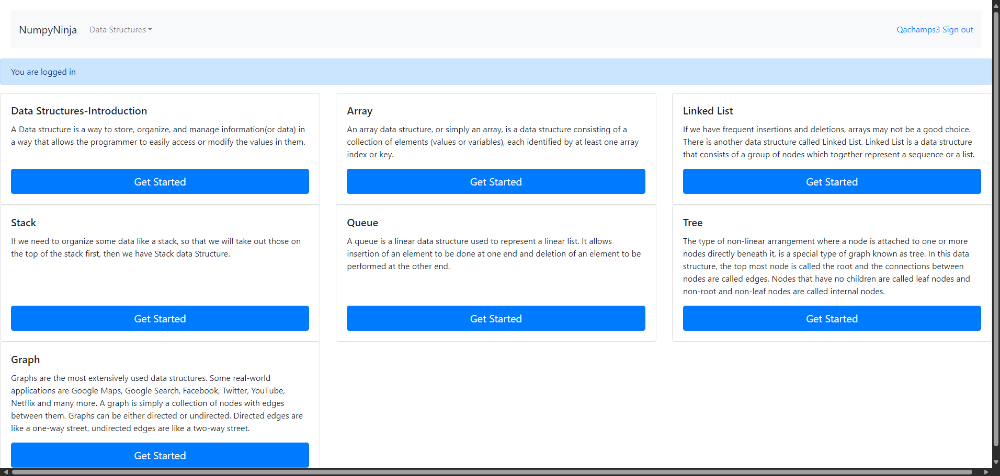FailNew user registration page with valid username but password and confirm password fields has less than eight charactersFailNew user registration page with valid username but password and confirm password fields has less than eight charactersGiven The user is on the new user registration pageWhen The user clicks Register button after entering a Password with characters less than eight on registration form from sheetname "register" and row 5Then The user is displayed the appropriate error msg after entering invalid data and redirects to empty password confirm textboxHooks.Hooks.takeScreenshot(io.cucumber.java.Scenario)screenshot
FailNew user registration page with valid username but only numeric password and confirm passwordFailNew user registration page with valid username but only numeric password and confirm passwordGiven The user is on the new user registration pageWhen The user clicks Register button after entering a password with only numeric data on registration form from sheetname "register" and row 4Then The user is displayed the appropriate error msg after entering invalid data and redirects to empty confirm password textboxHooks.Hooks.takeScreenshot(io.cucumber.java.Scenario)screenshot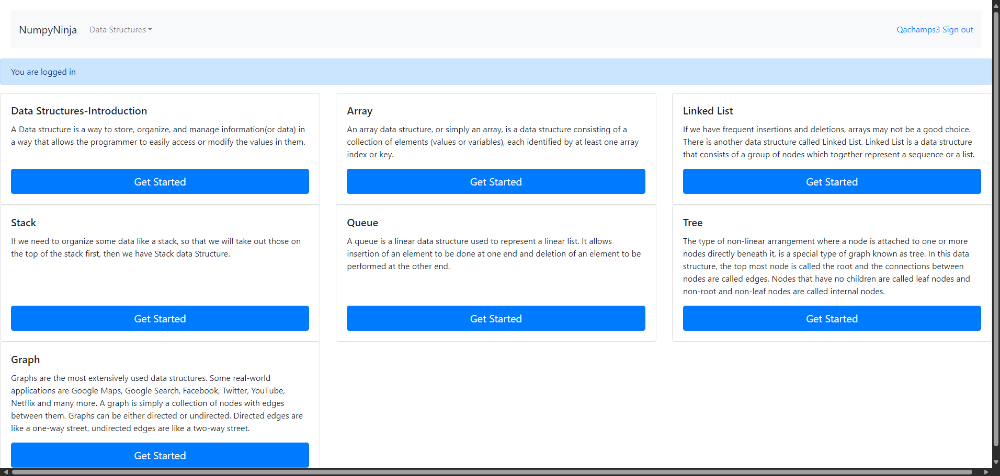FailNew user registration page with valid username but password and confirm password fields has less than eight charactersFailNew user registration page with valid username but password and confirm password fields has less than eight charactersGiven The user is on the new user registration pageWhen The user clicks Register button after entering a Password with characters less than eight on registration form from sheetname "register" and row 5Then The user is displayed the appropriate error msg after entering invalid data and redirects to empty password confirm textboxHooks.Hooks.takeScreenshot(io.cucumber.java.Scenario)screenshot PassNew user registration page on registration with different passwords entered in password and confirm password fieldsPassNew user registration page on registration with different passwords entered in password and confirm password fieldsGiven The user is on the new user registration pageWhen The user clicks Register button after entering different passwords in Password and Password Confirmation fields form from sheetname "register" and row 6Then The user is displayed with a warning message password_mismatch:The two password fields didn’t match.FailNew user registration page with all valid credentials enteredFailNew user registration page with all valid credentials enteredGiven The user is on the new user registration pageWhen The user clicks Register button after user fills registration form from sheetname "register" and row 7Then The user is redirected to Home Page of DS Algo with success message - New Account Created. You are logged in as username on the DS Algo Home PageHooks.Hooks.takeScreenshot(io.cucumber.java.Scenario)screenshot
PassNew user registration page on registration with different passwords entered in password and confirm password fieldsPassNew user registration page on registration with different passwords entered in password and confirm password fieldsGiven The user is on the new user registration pageWhen The user clicks Register button after entering different passwords in Password and Password Confirmation fields form from sheetname "register" and row 6Then The user is displayed with a warning message password_mismatch:The two password fields didn’t match.FailNew user registration page with all valid credentials enteredFailNew user registration page with all valid credentials enteredGiven The user is on the new user registration pageWhen The user clicks Register button after user fills registration form from sheetname "register" and row 7Then The user is redirected to Home Page of DS Algo with success message - New Account Created. You are logged in as username on the DS Algo Home PageHooks.Hooks.takeScreenshot(io.cucumber.java.Scenario)screenshot PassNew user registration page where login button is clickedGiven The user is on the new user registration pageWhen User clicks on login button from registration pageThen user lands on login pagePassNew user registration page where SignIn button is clickedGiven The user is on the new user registration pageWhen User clicks on SignIn button from registration pageThen user lands on login page
PassNew user registration page where login button is clickedGiven The user is on the new user registration pageWhen User clicks on login button from registration pageThen user lands on login pagePassNew user registration page where SignIn button is clickedGiven The user is on the new user registration pageWhen User clicks on SignIn button from registration pageThen user lands on login page -
Stack page
12:22:24 PM / 00:00:56:423 Fail
Stack page
12.17.2024 12:22:24 PM 12.17.2024 12:23:20 PM 00:00:56:423 · #test-id=5560I want to test the StackPagePassValidate user navigated to stack details page when clicked on get startedGiven The user is on the DS Introduction page as signedInWhen The user clicks on Get Started link for stackThen The user is on the stack details pagePassValidate user can navigate to Operations in Stack pageGiven The user is on the DS Introduction page as signedInWhen The user clicks on Get Started link for stackGiven The user is on the stack details pageWhen The user click on Operations in Stack linkThen the user is navigated to Operations in Stack pagePassValidate user can Try here link page from Operations in StackGiven The user is on the DS Introduction page as signedInWhen The user clicks on Get Started link for stackGiven The user is on the Operations in Stack pageWhen User clicks Try here linkThen User should navigate to tryEditor pagePassError message displayed for invalid code on try Editor for Operations in Stack pageGiven The user is on the DS Introduction page as signedInWhen The user clicks on Get Started link for stackGiven The user is on the Operations in Stack pageWhen User writes invalid code and clicks run buttonThen The user should able to see an error message in alert windowPassNo error message displayed for empty code on try editor for Operations in Stack pageGiven The user is on the DS Introduction page as signedInWhen The user clicks on Get Started link for stackGiven The user is on the Operations in Stack pageWhen User clicks on run button with empty codeThen The user should not see any error message or alertPassValid code on try editor for Operations in Stack runs successfullyGiven The user is on the DS Introduction page as signedInWhen The user clicks on Get Started link for stackGiven The user is on the Operations in Stack pageWhen User writes valid code and clicks run buttonThen The user should able to see output in the consolePassValidate user can navigate to Implementation pageGiven The user is on the DS Introduction page as signedInWhen The user clicks on Get Started link for stackGiven The user is on the stack details pageWhen The user click on Implementation linkThen the user is navigated to Implementation pagePassValidate user can click on Try here link from Implementation pageGiven The user is on the DS Introduction page as signedInWhen The user clicks on Get Started link for stackGiven The user is on the Implementation pageWhen User clicks Try here linkThen User should navigate to tryEditor pagePassError message displayed for invalid code on try Editor for Implementation pageGiven The user is on the DS Introduction page as signedInWhen The user clicks on Get Started link for stackGiven The user is on the Implementation pageWhen User writes invalid code and clicks run buttonThen The user should able to see an error message in alert windowPassNo error message displayed for empty code on try editor for Implementation pageGiven The user is on the DS Introduction page as signedInWhen The user clicks on Get Started link for stackGiven The user is on the Implementation pageWhen User clicks on run button with empty codeThen The user should not see any error message or alertFailValid code on try editor for Implementation runs successfullyGiven The user is on the DS Introduction page as signedInWhen The user clicks on Get Started link for stackGiven The user is on the Implementation pageWhen User writes valid code and clicks run buttonThen The user should able to see output in the consoleStep skippedHooks.Hooks.takeScreenshot(io.cucumber.java.Scenario)screenshot PassValidate user can navigate to Applications pageGiven The user is on the DS Introduction page as signedInWhen The user clicks on Get Started link for stackGiven The user is on the stack details pageWhen The user click on Applications linkThen the user is navigated to Applications pagePassValidate user can click on Try here link from Applications pageGiven The user is on the DS Introduction page as signedInWhen The user clicks on Get Started link for stackGiven The user is on the Applications pageWhen User clicks Try here linkThen User should navigate to tryEditor pageFailError message displayed for invalid code on try Editor for Applications pageGiven The user is on the DS Introduction page as signedInWhen The user clicks on Get Started link for stackGiven The user is on the Applications pageWhen User writes invalid code and clicks run buttonThen The user should able to see an error message in alert windowStep skippedHooks.Hooks.takeScreenshot(io.cucumber.java.Scenario)screenshot
PassValidate user can navigate to Applications pageGiven The user is on the DS Introduction page as signedInWhen The user clicks on Get Started link for stackGiven The user is on the stack details pageWhen The user click on Applications linkThen the user is navigated to Applications pagePassValidate user can click on Try here link from Applications pageGiven The user is on the DS Introduction page as signedInWhen The user clicks on Get Started link for stackGiven The user is on the Applications pageWhen User clicks Try here linkThen User should navigate to tryEditor pageFailError message displayed for invalid code on try Editor for Applications pageGiven The user is on the DS Introduction page as signedInWhen The user clicks on Get Started link for stackGiven The user is on the Applications pageWhen User writes invalid code and clicks run buttonThen The user should able to see an error message in alert windowStep skippedHooks.Hooks.takeScreenshot(io.cucumber.java.Scenario)screenshot PassNo error message displayed for empty code on try editor for Applications pageGiven The user is on the DS Introduction page as signedInWhen The user clicks on Get Started link for stackGiven The user is on the Applications pageWhen User clicks on run button with empty codeThen The user should not see any error message or alertPassValid code on try editor for Applications runs successfullyGiven The user is on the DS Introduction page as signedInWhen The user clicks on Get Started link for stackGiven The user is on the Applications pageWhen User writes valid code and clicks run buttonThen The user should able to see output in the console
PassNo error message displayed for empty code on try editor for Applications pageGiven The user is on the DS Introduction page as signedInWhen The user clicks on Get Started link for stackGiven The user is on the Applications pageWhen User clicks on run button with empty codeThen The user should not see any error message or alertPassValid code on try editor for Applications runs successfullyGiven The user is on the DS Introduction page as signedInWhen The user clicks on Get Started link for stackGiven The user is on the Applications pageWhen User writes valid code and clicks run buttonThen The user should able to see output in the console -
Tree
12:23:20 PM / 00:04:22:670 Fail
Tree
12.17.2024 12:23:20 PM 12.17.2024 12:27:42 PM 00:04:22:670 · #test-id=5731PassDS_algo Home pageGiven The user is on the DS Introduction page as signedInAnd User clicks on Get Started button from Tree panelWhen The user select Tree from the Data Structure dropdown menuThen The user is redirected to Tree page.PassTree home pageGiven The user is on the DS Introduction page as signedInAnd User clicks on Get Started button from Tree panelWhen The user clicks Overview of Trees linkThen The user is redirected to Overview of Trees page.PassOverview of TreesGiven The user is on the DS Introduction page as signedInAnd User clicks on Get Started button from Tree panelGiven The user is on the Overview of Trees pageWhen The user clicks Try Here buttonThen The user is redirected to a page having Editor and run buttonFailTry Here Editor page with empty codeGiven The user is on the DS Introduction page as signedInAnd User clicks on Get Started button from Tree panelGiven The user is on the Editor page of Overview of Trees pageWhen The user writes no code inside editor window and clicks on Run buttonThen Nothing happens to the Editor page and no error message is displayedStep skippedHooks.Hooks.takeScreenshot(io.cucumber.java.Scenario)screenshot FailTry Here Editor page with valid dataGiven The user is on the DS Introduction page as signedInAnd User clicks on Get Started button from Tree panelGiven The user is on the Editor page of Overview of Trees pageWhen The user writes the valid python code and clicks on Run buttonThen The user is able to see the output inside the console.Step skippedHooks.Hooks.takeScreenshot(io.cucumber.java.Scenario)screenshot
FailTry Here Editor page with valid dataGiven The user is on the DS Introduction page as signedInAnd User clicks on Get Started button from Tree panelGiven The user is on the Editor page of Overview of Trees pageWhen The user writes the valid python code and clicks on Run buttonThen The user is able to see the output inside the console.Step skippedHooks.Hooks.takeScreenshot(io.cucumber.java.Scenario)screenshot PassTry Here Editor page with invalid dataGiven The user is on the DS Introduction page as signedInAnd User clicks on Get Started button from Tree panelGiven The user is on the Editor page of Overview of Trees pageWhen The user writes the invalid python code and clicks on Run buttonThen The user see error msg in alert windowPassOverview of TreesGiven The user is on the DS Introduction page as signedInAnd User clicks on Get Started button from Tree panelGiven The user is on the Overview of Trees pageWhen The user clicks Terminologies linkThen The user is redirected to Terminologies pagePassTerminologiesGiven The user is on the DS Introduction page as signedInAnd User clicks on Get Started button from Tree panelGiven The user is on the Terminologies pageWhen The user clicks Try Here buttonThen The user is redirected to a page having Editor and run buttonPassTry Here Editor page with empty codeGiven The user is on the DS Introduction page as signedInAnd User clicks on Get Started button from Tree panelGiven The user is on the Editor page of Terminologies pageWhen The user writes no code inside editor window and clicks on Run buttonThen Nothing happens to the Editor page and no error message is displayedFailTry Here Editor page with valid dataGiven The user is on the DS Introduction page as signedInAnd User clicks on Get Started button from Tree panelGiven The user is on the Editor page of Terminologies pageWhen The user writes the valid python code and clicks on Run buttonThen The user is able to see the output inside the console.Step skippedHooks.Hooks.takeScreenshot(io.cucumber.java.Scenario)screenshot
PassTry Here Editor page with invalid dataGiven The user is on the DS Introduction page as signedInAnd User clicks on Get Started button from Tree panelGiven The user is on the Editor page of Overview of Trees pageWhen The user writes the invalid python code and clicks on Run buttonThen The user see error msg in alert windowPassOverview of TreesGiven The user is on the DS Introduction page as signedInAnd User clicks on Get Started button from Tree panelGiven The user is on the Overview of Trees pageWhen The user clicks Terminologies linkThen The user is redirected to Terminologies pagePassTerminologiesGiven The user is on the DS Introduction page as signedInAnd User clicks on Get Started button from Tree panelGiven The user is on the Terminologies pageWhen The user clicks Try Here buttonThen The user is redirected to a page having Editor and run buttonPassTry Here Editor page with empty codeGiven The user is on the DS Introduction page as signedInAnd User clicks on Get Started button from Tree panelGiven The user is on the Editor page of Terminologies pageWhen The user writes no code inside editor window and clicks on Run buttonThen Nothing happens to the Editor page and no error message is displayedFailTry Here Editor page with valid dataGiven The user is on the DS Introduction page as signedInAnd User clicks on Get Started button from Tree panelGiven The user is on the Editor page of Terminologies pageWhen The user writes the valid python code and clicks on Run buttonThen The user is able to see the output inside the console.Step skippedHooks.Hooks.takeScreenshot(io.cucumber.java.Scenario)screenshot FailTry Here Editor page with invalid dataGiven The user is on the DS Introduction page as signedInAnd User clicks on Get Started button from Tree panelGiven The user is on the Editor page of Terminologies pageWhen The user writes the invalid python code and clicks on Run buttonThen The user see error msg in alert windowStep skippedHooks.Hooks.takeScreenshot(io.cucumber.java.Scenario)screenshot
FailTry Here Editor page with invalid dataGiven The user is on the DS Introduction page as signedInAnd User clicks on Get Started button from Tree panelGiven The user is on the Editor page of Terminologies pageWhen The user writes the invalid python code and clicks on Run buttonThen The user see error msg in alert windowStep skippedHooks.Hooks.takeScreenshot(io.cucumber.java.Scenario)screenshot PassTerminologiesGiven The user is on the DS Introduction page as signedInAnd User clicks on Get Started button from Tree panelGiven The user is on the Terminologies pageWhen The user clicks Types of Trees link from TerminologiesPageThen The user is redirected to Types of Trees page.PassTypes of TreesGiven The user is on the DS Introduction page as signedInAnd User clicks on Get Started button from Tree panelGiven The user is on the Types of Trees pageWhen The user clicks Try Here buttonThen The user is redirected to a page having Editor and run buttonPassTry Here Editor page with empty codeGiven The user is on the DS Introduction page as signedInAnd User clicks on Get Started button from Tree panelGiven The user is on the Editor Page of Types of Trees pageWhen The user writes no code inside editor window and clicks on Run buttonThen Nothing happens to the Editor page and no error message is displayedPassTry Here Editor page with valid dataGiven The user is on the DS Introduction page as signedInAnd User clicks on Get Started button from Tree panelGiven The user is on the Editor Page of Types of Trees pageWhen The user writes the valid python code and clicks on Run buttonThen The user is able to see the output inside the console.PassTry Here Editor page with invalid dataGiven The user is on the DS Introduction page as signedInAnd User clicks on Get Started button from Tree panelGiven The user is on the Editor Page of Types of Trees pageWhen The user writes the invalid python code and clicks on Run buttonThen The user see error msg in alert windowPassTypes of TreesGiven The user is on the DS Introduction page as signedInAnd User clicks on Get Started button from Tree panelGiven The user is on the Types of Trees pageWhen The user clicks Tree Traversals linkThen The user is redirected to Tree Traversals pagePassTree TraversalsGiven The user is on the DS Introduction page as signedInAnd User clicks on Get Started button from Tree panelGiven The user is on the Tree Traversals pageWhen The user clicks Try Here buttonThen The user is redirected to a page having Editor and run buttonPassTry Here Editor page with empty codeGiven The user is on the DS Introduction page as signedInAnd User clicks on Get Started button from Tree panelGiven The user is on the Editor page of Tree Traversals pageWhen The user writes no code inside editor window and clicks on Run buttonThen Nothing happens to the Editor page and no error message is displayedFailTry Here Editor page with valid dataGiven The user is on the DS Introduction page as signedInAnd User clicks on Get Started button from Tree panelGiven The user is on the Editor page of Tree Traversals pageWhen The user writes the valid python code and clicks on Run buttonThen The user is able to see the output inside the console.Step skippedHooks.Hooks.takeScreenshot(io.cucumber.java.Scenario)screenshot
PassTerminologiesGiven The user is on the DS Introduction page as signedInAnd User clicks on Get Started button from Tree panelGiven The user is on the Terminologies pageWhen The user clicks Types of Trees link from TerminologiesPageThen The user is redirected to Types of Trees page.PassTypes of TreesGiven The user is on the DS Introduction page as signedInAnd User clicks on Get Started button from Tree panelGiven The user is on the Types of Trees pageWhen The user clicks Try Here buttonThen The user is redirected to a page having Editor and run buttonPassTry Here Editor page with empty codeGiven The user is on the DS Introduction page as signedInAnd User clicks on Get Started button from Tree panelGiven The user is on the Editor Page of Types of Trees pageWhen The user writes no code inside editor window and clicks on Run buttonThen Nothing happens to the Editor page and no error message is displayedPassTry Here Editor page with valid dataGiven The user is on the DS Introduction page as signedInAnd User clicks on Get Started button from Tree panelGiven The user is on the Editor Page of Types of Trees pageWhen The user writes the valid python code and clicks on Run buttonThen The user is able to see the output inside the console.PassTry Here Editor page with invalid dataGiven The user is on the DS Introduction page as signedInAnd User clicks on Get Started button from Tree panelGiven The user is on the Editor Page of Types of Trees pageWhen The user writes the invalid python code and clicks on Run buttonThen The user see error msg in alert windowPassTypes of TreesGiven The user is on the DS Introduction page as signedInAnd User clicks on Get Started button from Tree panelGiven The user is on the Types of Trees pageWhen The user clicks Tree Traversals linkThen The user is redirected to Tree Traversals pagePassTree TraversalsGiven The user is on the DS Introduction page as signedInAnd User clicks on Get Started button from Tree panelGiven The user is on the Tree Traversals pageWhen The user clicks Try Here buttonThen The user is redirected to a page having Editor and run buttonPassTry Here Editor page with empty codeGiven The user is on the DS Introduction page as signedInAnd User clicks on Get Started button from Tree panelGiven The user is on the Editor page of Tree Traversals pageWhen The user writes no code inside editor window and clicks on Run buttonThen Nothing happens to the Editor page and no error message is displayedFailTry Here Editor page with valid dataGiven The user is on the DS Introduction page as signedInAnd User clicks on Get Started button from Tree panelGiven The user is on the Editor page of Tree Traversals pageWhen The user writes the valid python code and clicks on Run buttonThen The user is able to see the output inside the console.Step skippedHooks.Hooks.takeScreenshot(io.cucumber.java.Scenario)screenshot PassTry Here Editor page with invalid dataGiven The user is on the DS Introduction page as signedInAnd User clicks on Get Started button from Tree panelGiven The user is on the Editor page of Tree Traversals pageWhen The user writes the invalid python code and clicks on Run buttonThen The user see error msg in alert windowPassTree TraversalsGiven The user is on the DS Introduction page as signedInAnd User clicks on Get Started button from Tree panelGiven The user is on the Tree Traversals pageWhen The user clicks Traversals-Illustration linkThen The user is redirected to Traversals-Illustration pagePassTraversals-IllustrationGiven The user is on the DS Introduction page as signedInAnd User clicks on Get Started button from Tree panelGiven The user is on the Traversals-Illustration pageWhen The user clicks Try Here buttonThen The user is redirected to a page having Editor and run buttonFailTry Here Editor page with empty codeGiven The user is on the DS Introduction page as signedInAnd User clicks on Get Started button from Tree panelGiven The user is on the Editor page of Traversals-Illustration pageWhen The user writes no code inside editor window and clicks on Run buttonThen Nothing happens to the Editor page and no error message is displayedStep skippedHooks.Hooks.takeScreenshot(io.cucumber.java.Scenario)screenshot
PassTry Here Editor page with invalid dataGiven The user is on the DS Introduction page as signedInAnd User clicks on Get Started button from Tree panelGiven The user is on the Editor page of Tree Traversals pageWhen The user writes the invalid python code and clicks on Run buttonThen The user see error msg in alert windowPassTree TraversalsGiven The user is on the DS Introduction page as signedInAnd User clicks on Get Started button from Tree panelGiven The user is on the Tree Traversals pageWhen The user clicks Traversals-Illustration linkThen The user is redirected to Traversals-Illustration pagePassTraversals-IllustrationGiven The user is on the DS Introduction page as signedInAnd User clicks on Get Started button from Tree panelGiven The user is on the Traversals-Illustration pageWhen The user clicks Try Here buttonThen The user is redirected to a page having Editor and run buttonFailTry Here Editor page with empty codeGiven The user is on the DS Introduction page as signedInAnd User clicks on Get Started button from Tree panelGiven The user is on the Editor page of Traversals-Illustration pageWhen The user writes no code inside editor window and clicks on Run buttonThen Nothing happens to the Editor page and no error message is displayedStep skippedHooks.Hooks.takeScreenshot(io.cucumber.java.Scenario)screenshot FailTry Here Editor page with valid dataGiven The user is on the DS Introduction page as signedInAnd User clicks on Get Started button from Tree panelGiven The user is on the Editor page of Traversals-Illustration pageWhen The user writes the valid python code and clicks on Run buttonThen The user is able to see the output inside the console.Step skippedHooks.Hooks.takeScreenshot(io.cucumber.java.Scenario)screenshot
FailTry Here Editor page with valid dataGiven The user is on the DS Introduction page as signedInAnd User clicks on Get Started button from Tree panelGiven The user is on the Editor page of Traversals-Illustration pageWhen The user writes the valid python code and clicks on Run buttonThen The user is able to see the output inside the console.Step skippedHooks.Hooks.takeScreenshot(io.cucumber.java.Scenario)screenshot PassTry Here Editor page with invalid dataGiven The user is on the DS Introduction page as signedInAnd User clicks on Get Started button from Tree panelGiven The user is on the Editor page of Traversals-Illustration pageWhen The user writes the invalid python code and clicks on Run buttonThen The user see error msg in alert windowPassTraversals-IllustrationGiven The user is on the DS Introduction page as signedInAnd User clicks on Get Started button from Tree panelGiven The user is on the Traversals-Illustration pageWhen The user clicks Binary Trees linkThen The user is redirected to Binary Trees page.PassBinary TreesGiven The user is on the DS Introduction page as signedInAnd User clicks on Get Started button from Tree panelGiven The user is on the Binary Trees pageWhen The user clicks Try Here buttonThen The user is redirected to a page having Editor and run buttonPassTry Here Editor page with empty codeGiven The user is on the DS Introduction page as signedInAnd User clicks on Get Started button from Tree panelGiven The user is on the Editor page of Binary Trees pageWhen The user writes no code inside editor window and clicks on Run buttonThen Nothing happens to the Editor page and no error message is displayedFailTry Here Editor page with valid dataGiven The user is on the DS Introduction page as signedInAnd User clicks on Get Started button from Tree panelGiven The user is on the Editor page of Binary Trees pageWhen The user writes the valid python code and clicks on Run buttonThen The user is able to see the output inside the console.Step skippedHooks.Hooks.takeScreenshot(io.cucumber.java.Scenario)screenshot
PassTry Here Editor page with invalid dataGiven The user is on the DS Introduction page as signedInAnd User clicks on Get Started button from Tree panelGiven The user is on the Editor page of Traversals-Illustration pageWhen The user writes the invalid python code and clicks on Run buttonThen The user see error msg in alert windowPassTraversals-IllustrationGiven The user is on the DS Introduction page as signedInAnd User clicks on Get Started button from Tree panelGiven The user is on the Traversals-Illustration pageWhen The user clicks Binary Trees linkThen The user is redirected to Binary Trees page.PassBinary TreesGiven The user is on the DS Introduction page as signedInAnd User clicks on Get Started button from Tree panelGiven The user is on the Binary Trees pageWhen The user clicks Try Here buttonThen The user is redirected to a page having Editor and run buttonPassTry Here Editor page with empty codeGiven The user is on the DS Introduction page as signedInAnd User clicks on Get Started button from Tree panelGiven The user is on the Editor page of Binary Trees pageWhen The user writes no code inside editor window and clicks on Run buttonThen Nothing happens to the Editor page and no error message is displayedFailTry Here Editor page with valid dataGiven The user is on the DS Introduction page as signedInAnd User clicks on Get Started button from Tree panelGiven The user is on the Editor page of Binary Trees pageWhen The user writes the valid python code and clicks on Run buttonThen The user is able to see the output inside the console.Step skippedHooks.Hooks.takeScreenshot(io.cucumber.java.Scenario)screenshot FailTry Here Editor page with invalid dataGiven The user is on the DS Introduction page as signedInAnd User clicks on Get Started button from Tree panelGiven The user is on the Editor page of Binary Trees pageWhen The user writes the invalid python code and clicks on Run buttonThen The user see error msg in alert windowStep skippedHooks.Hooks.takeScreenshot(io.cucumber.java.Scenario)screenshot
FailTry Here Editor page with invalid dataGiven The user is on the DS Introduction page as signedInAnd User clicks on Get Started button from Tree panelGiven The user is on the Editor page of Binary Trees pageWhen The user writes the invalid python code and clicks on Run buttonThen The user see error msg in alert windowStep skippedHooks.Hooks.takeScreenshot(io.cucumber.java.Scenario)screenshot PassBinary TreesGiven The user is on the DS Introduction page as signedInAnd User clicks on Get Started button from Tree panelGiven The user is on the Binary Trees pageWhen The user clicks Types of Binary Trees linkThen The user is redirected to Types of Binary Trees page.PassTypes of Binary TreesGiven The user is on the DS Introduction page as signedInAnd User clicks on Get Started button from Tree panelGiven The user is on the Types of Binary Trees pageWhen The user clicks Try Here buttonThen The user is redirected to a page having Editor and run buttonPassTry Here Editor page with empty codeGiven The user is on the DS Introduction page as signedInAnd User clicks on Get Started button from Tree panelGiven The user is on the Editor page of Types of Binary Trees pageWhen The user writes no code inside editor window and clicks on Run buttonThen Nothing happens to the Editor page and no error message is displayedPassTry Here Editor page with valid dataGiven The user is on the DS Introduction page as signedInAnd User clicks on Get Started button from Tree panelGiven The user is on the Editor page of Types of Binary Trees pageWhen The user writes the valid python code and clicks on Run buttonThen The user is able to see the output inside the console.FailTry Here Editor page with invalid dataGiven The user is on the DS Introduction page as signedInAnd User clicks on Get Started button from Tree panelGiven The user is on the Editor page of Types of Binary Trees pageWhen The user writes the invalid python code and clicks on Run buttonThen The user see error msg in alert windowStep skippedHooks.Hooks.takeScreenshot(io.cucumber.java.Scenario)screenshot
PassBinary TreesGiven The user is on the DS Introduction page as signedInAnd User clicks on Get Started button from Tree panelGiven The user is on the Binary Trees pageWhen The user clicks Types of Binary Trees linkThen The user is redirected to Types of Binary Trees page.PassTypes of Binary TreesGiven The user is on the DS Introduction page as signedInAnd User clicks on Get Started button from Tree panelGiven The user is on the Types of Binary Trees pageWhen The user clicks Try Here buttonThen The user is redirected to a page having Editor and run buttonPassTry Here Editor page with empty codeGiven The user is on the DS Introduction page as signedInAnd User clicks on Get Started button from Tree panelGiven The user is on the Editor page of Types of Binary Trees pageWhen The user writes no code inside editor window and clicks on Run buttonThen Nothing happens to the Editor page and no error message is displayedPassTry Here Editor page with valid dataGiven The user is on the DS Introduction page as signedInAnd User clicks on Get Started button from Tree panelGiven The user is on the Editor page of Types of Binary Trees pageWhen The user writes the valid python code and clicks on Run buttonThen The user is able to see the output inside the console.FailTry Here Editor page with invalid dataGiven The user is on the DS Introduction page as signedInAnd User clicks on Get Started button from Tree panelGiven The user is on the Editor page of Types of Binary Trees pageWhen The user writes the invalid python code and clicks on Run buttonThen The user see error msg in alert windowStep skippedHooks.Hooks.takeScreenshot(io.cucumber.java.Scenario)screenshot PassTypes of Binary TreesGiven The user is on the DS Introduction page as signedInAnd User clicks on Get Started button from Tree panelGiven The user is on the Types of Binary Trees pageWhen The user clicks Implementation in Python Trees linkThen The user is redirected to Implementation in Python page.PassImplementation in PythonGiven The user is on the DS Introduction page as signedInAnd User clicks on Get Started button from Tree panelGiven The user is on the Implementation in Python pageWhen The user clicks Try Here buttonThen The user is redirected to a page having Editor and run buttonPassTry Here Editor page with empty codeGiven The user is on the DS Introduction page as signedInAnd User clicks on Get Started button from Tree panelGiven The user is on the editor page of Implementation in Python pageWhen The user writes no code inside editor window and clicks on Run buttonThen Nothing happens to the Editor page and no error message is displayedFailTry Here Editor page with valid dataGiven The user is on the DS Introduction page as signedInAnd User clicks on Get Started button from Tree panelGiven The user is on the editor page of Implementation in Python pageWhen The user writes the valid python code and clicks on Run buttonThen The user is able to see the output inside the console.Step skippedHooks.Hooks.takeScreenshot(io.cucumber.java.Scenario)screenshot
PassTypes of Binary TreesGiven The user is on the DS Introduction page as signedInAnd User clicks on Get Started button from Tree panelGiven The user is on the Types of Binary Trees pageWhen The user clicks Implementation in Python Trees linkThen The user is redirected to Implementation in Python page.PassImplementation in PythonGiven The user is on the DS Introduction page as signedInAnd User clicks on Get Started button from Tree panelGiven The user is on the Implementation in Python pageWhen The user clicks Try Here buttonThen The user is redirected to a page having Editor and run buttonPassTry Here Editor page with empty codeGiven The user is on the DS Introduction page as signedInAnd User clicks on Get Started button from Tree panelGiven The user is on the editor page of Implementation in Python pageWhen The user writes no code inside editor window and clicks on Run buttonThen Nothing happens to the Editor page and no error message is displayedFailTry Here Editor page with valid dataGiven The user is on the DS Introduction page as signedInAnd User clicks on Get Started button from Tree panelGiven The user is on the editor page of Implementation in Python pageWhen The user writes the valid python code and clicks on Run buttonThen The user is able to see the output inside the console.Step skippedHooks.Hooks.takeScreenshot(io.cucumber.java.Scenario)screenshot PassTry Here Editor page with invalid dataGiven The user is on the DS Introduction page as signedInAnd User clicks on Get Started button from Tree panelGiven The user is on the editor page of Implementation in Python pageWhen The user writes the invalid python code and clicks on Run buttonThen The user see error msg in alert windowPassImplementation in PythonGiven The user is on the DS Introduction page as signedInAnd User clicks on Get Started button from Tree panelGiven The user is on the Implementation in Python pageWhen The user clicks Binary Tree Traversals linkThen The user is redirected to Binary Tree Traversals page.PassBinary Tree TraversalsGiven The user is on the DS Introduction page as signedInAnd User clicks on Get Started button from Tree panelGiven The user is on the Binary Tree Traversals pageWhen The user clicks Try Here buttonThen The user is redirected to a page having Editor and run buttonFailTry Here Editor page with empty codeGiven The user is on the DS Introduction page as signedInAnd User clicks on Get Started button from Tree panelGiven The user is on the editor page of Binary Tree Traversals pageWhen The user writes no code inside editor window and clicks on Run buttonThen Nothing happens to the Editor page and no error message is displayedStep skippedHooks.Hooks.takeScreenshot(io.cucumber.java.Scenario)screenshot
PassTry Here Editor page with invalid dataGiven The user is on the DS Introduction page as signedInAnd User clicks on Get Started button from Tree panelGiven The user is on the editor page of Implementation in Python pageWhen The user writes the invalid python code and clicks on Run buttonThen The user see error msg in alert windowPassImplementation in PythonGiven The user is on the DS Introduction page as signedInAnd User clicks on Get Started button from Tree panelGiven The user is on the Implementation in Python pageWhen The user clicks Binary Tree Traversals linkThen The user is redirected to Binary Tree Traversals page.PassBinary Tree TraversalsGiven The user is on the DS Introduction page as signedInAnd User clicks on Get Started button from Tree panelGiven The user is on the Binary Tree Traversals pageWhen The user clicks Try Here buttonThen The user is redirected to a page having Editor and run buttonFailTry Here Editor page with empty codeGiven The user is on the DS Introduction page as signedInAnd User clicks on Get Started button from Tree panelGiven The user is on the editor page of Binary Tree Traversals pageWhen The user writes no code inside editor window and clicks on Run buttonThen Nothing happens to the Editor page and no error message is displayedStep skippedHooks.Hooks.takeScreenshot(io.cucumber.java.Scenario)screenshot PassTry Here Editor page with valid dataGiven The user is on the DS Introduction page as signedInAnd User clicks on Get Started button from Tree panelGiven The user is on the editor page of Binary Tree Traversals pageWhen The user writes the valid python code and clicks on Run buttonThen The user is able to see the output inside the console.PassTry Here Editor page with invalid dataGiven The user is on the DS Introduction page as signedInAnd User clicks on Get Started button from Tree panelGiven The user is on the editor page of Binary Tree Traversals pageWhen The user writes the invalid python code and clicks on Run buttonThen The user see error msg in alert windowPassBinary Tree TraversalsGiven The user is on the DS Introduction page as signedInAnd User clicks on Get Started button from Tree panelGiven The user is on the Binary Tree Traversals pageWhen The user clicks Implementation of Binary Trees buttonThen The user is redirected to Implementation of Binary Trees page.PassImplementation of Binary TreesGiven The user is on the DS Introduction page as signedInAnd User clicks on Get Started button from Tree panelGiven The user is on the Implementation of Binary Trees pageWhen The user clicks Try Here buttonThen The user is redirected to a page having Editor and run buttonFailTry Here Editor page with empty codeGiven The user is on the DS Introduction page as signedInAnd User clicks on Get Started button from Tree panelGiven The user is on the editor page of Implementation of Binary Trees pageWhen The user writes no code inside editor window and clicks on Run buttonThen Nothing happens to the Editor page and no error message is displayedStep skippedHooks.Hooks.takeScreenshot(io.cucumber.java.Scenario)screenshot
PassTry Here Editor page with valid dataGiven The user is on the DS Introduction page as signedInAnd User clicks on Get Started button from Tree panelGiven The user is on the editor page of Binary Tree Traversals pageWhen The user writes the valid python code and clicks on Run buttonThen The user is able to see the output inside the console.PassTry Here Editor page with invalid dataGiven The user is on the DS Introduction page as signedInAnd User clicks on Get Started button from Tree panelGiven The user is on the editor page of Binary Tree Traversals pageWhen The user writes the invalid python code and clicks on Run buttonThen The user see error msg in alert windowPassBinary Tree TraversalsGiven The user is on the DS Introduction page as signedInAnd User clicks on Get Started button from Tree panelGiven The user is on the Binary Tree Traversals pageWhen The user clicks Implementation of Binary Trees buttonThen The user is redirected to Implementation of Binary Trees page.PassImplementation of Binary TreesGiven The user is on the DS Introduction page as signedInAnd User clicks on Get Started button from Tree panelGiven The user is on the Implementation of Binary Trees pageWhen The user clicks Try Here buttonThen The user is redirected to a page having Editor and run buttonFailTry Here Editor page with empty codeGiven The user is on the DS Introduction page as signedInAnd User clicks on Get Started button from Tree panelGiven The user is on the editor page of Implementation of Binary Trees pageWhen The user writes no code inside editor window and clicks on Run buttonThen Nothing happens to the Editor page and no error message is displayedStep skippedHooks.Hooks.takeScreenshot(io.cucumber.java.Scenario)screenshot PassTry Here Editor page with valid dataGiven The user is on the DS Introduction page as signedInAnd User clicks on Get Started button from Tree panelGiven The user is on the editor page of Implementation of Binary Trees pageWhen The user writes the valid python code and clicks on Run buttonThen The user is able to see the output inside the console.PassTry Here Editor page with invalid dataGiven The user is on the DS Introduction page as signedInAnd User clicks on Get Started button from Tree panelGiven The user is on the editor page of Implementation of Binary Trees pageWhen The user writes the invalid python code and clicks on Run buttonThen The user see error msg in alert windowPassImplementation of Binary TreesGiven The user is on the DS Introduction page as signedInAnd User clicks on Get Started button from Tree panelGiven The user is on the Implementation of Binary Trees pageWhen The user clicks Applications of Binary trees linkThen The user is redirected to Applications of Binary trees page.PassApplications of Binary treesGiven The user is on the DS Introduction page as signedInAnd User clicks on Get Started button from Tree panelGiven The user is on the Applications of Binary trees pageWhen The user clicks Try Here buttonThen The user is redirected to a page having Editor and run buttonPassTry Here Editor page with empty codeGiven The user is on the DS Introduction page as signedInAnd User clicks on Get Started button from Tree panelGiven The user is on the editor page of Applications of Binary trees pageWhen The user writes no code inside editor window and clicks on Run buttonThen Nothing happens to the Editor page and no error message is displayedFailTry Here Editor page with valid dataGiven The user is on the DS Introduction page as signedInAnd User clicks on Get Started button from Tree panelGiven The user is on the editor page of Applications of Binary trees pageWhen The user writes the valid python code and clicks on Run buttonThen The user is able to see the output inside the console.Step skippedHooks.Hooks.takeScreenshot(io.cucumber.java.Scenario)screenshot
PassTry Here Editor page with valid dataGiven The user is on the DS Introduction page as signedInAnd User clicks on Get Started button from Tree panelGiven The user is on the editor page of Implementation of Binary Trees pageWhen The user writes the valid python code and clicks on Run buttonThen The user is able to see the output inside the console.PassTry Here Editor page with invalid dataGiven The user is on the DS Introduction page as signedInAnd User clicks on Get Started button from Tree panelGiven The user is on the editor page of Implementation of Binary Trees pageWhen The user writes the invalid python code and clicks on Run buttonThen The user see error msg in alert windowPassImplementation of Binary TreesGiven The user is on the DS Introduction page as signedInAnd User clicks on Get Started button from Tree panelGiven The user is on the Implementation of Binary Trees pageWhen The user clicks Applications of Binary trees linkThen The user is redirected to Applications of Binary trees page.PassApplications of Binary treesGiven The user is on the DS Introduction page as signedInAnd User clicks on Get Started button from Tree panelGiven The user is on the Applications of Binary trees pageWhen The user clicks Try Here buttonThen The user is redirected to a page having Editor and run buttonPassTry Here Editor page with empty codeGiven The user is on the DS Introduction page as signedInAnd User clicks on Get Started button from Tree panelGiven The user is on the editor page of Applications of Binary trees pageWhen The user writes no code inside editor window and clicks on Run buttonThen Nothing happens to the Editor page and no error message is displayedFailTry Here Editor page with valid dataGiven The user is on the DS Introduction page as signedInAnd User clicks on Get Started button from Tree panelGiven The user is on the editor page of Applications of Binary trees pageWhen The user writes the valid python code and clicks on Run buttonThen The user is able to see the output inside the console.Step skippedHooks.Hooks.takeScreenshot(io.cucumber.java.Scenario)screenshot PassTry Here Editor page with invalid dataGiven The user is on the DS Introduction page as signedInAnd User clicks on Get Started button from Tree panelGiven The user is on the editor page of Applications of Binary trees pageWhen The user writes the invalid python code and clicks on Run buttonThen The user see error msg in alert windowPassApplications of Binary treesGiven The user is on the DS Introduction page as signedInAnd User clicks on Get Started button from Tree panelGiven The user is on the Applications of Binary trees pageWhen The user clicks Binary Search Trees linkThen The user is redirected to Binary Search Trees page.PassBinary Search TreesGiven The user is on the DS Introduction page as signedInAnd User clicks on Get Started button from Tree panelGiven The user is on the Binary Search Trees pageWhen The user clicks Try Here buttonThen The user is redirected to a page having Editor and run buttonPassTry Here Editor page with empty codeGiven The user is on the DS Introduction page as signedInAnd User clicks on Get Started button from Tree panelGiven The user is on the editor page of Binary Search Trees pageWhen The user writes no code inside editor window and clicks on Run buttonThen Nothing happens to the Editor page and no error message is displayedFailTry Here Editor page with valid dataGiven The user is on the DS Introduction page as signedInAnd User clicks on Get Started button from Tree panelGiven The user is on the editor page of Binary Search Trees pageWhen The user writes the valid python code and clicks on Run buttonThen The user is able to see the output inside the console.Step skippedHooks.Hooks.takeScreenshot(io.cucumber.java.Scenario)screenshot
PassTry Here Editor page with invalid dataGiven The user is on the DS Introduction page as signedInAnd User clicks on Get Started button from Tree panelGiven The user is on the editor page of Applications of Binary trees pageWhen The user writes the invalid python code and clicks on Run buttonThen The user see error msg in alert windowPassApplications of Binary treesGiven The user is on the DS Introduction page as signedInAnd User clicks on Get Started button from Tree panelGiven The user is on the Applications of Binary trees pageWhen The user clicks Binary Search Trees linkThen The user is redirected to Binary Search Trees page.PassBinary Search TreesGiven The user is on the DS Introduction page as signedInAnd User clicks on Get Started button from Tree panelGiven The user is on the Binary Search Trees pageWhen The user clicks Try Here buttonThen The user is redirected to a page having Editor and run buttonPassTry Here Editor page with empty codeGiven The user is on the DS Introduction page as signedInAnd User clicks on Get Started button from Tree panelGiven The user is on the editor page of Binary Search Trees pageWhen The user writes no code inside editor window and clicks on Run buttonThen Nothing happens to the Editor page and no error message is displayedFailTry Here Editor page with valid dataGiven The user is on the DS Introduction page as signedInAnd User clicks on Get Started button from Tree panelGiven The user is on the editor page of Binary Search Trees pageWhen The user writes the valid python code and clicks on Run buttonThen The user is able to see the output inside the console.Step skippedHooks.Hooks.takeScreenshot(io.cucumber.java.Scenario)screenshot PassTry Here Editor page with invalid dataGiven The user is on the DS Introduction page as signedInAnd User clicks on Get Started button from Tree panelGiven The user is on the editor page of Binary Search Trees pageWhen The user writes the invalid python code and clicks on Run buttonThen The user see error msg in alert windowPassBinary Search TreesGiven The user is on the DS Introduction page as signedInAnd User clicks on Get Started button from Tree panelGiven The user is on the Binary Search Trees pageWhen The user clicks Implementation Of BST linkThen The user is redirected to Implementation Of BST page.PassImplementation Of BSTGiven The user is on the DS Introduction page as signedInAnd User clicks on Get Started button from Tree panelGiven The user is on the Implementation Of BST pageWhen The user clicks Try Here buttonThen The user is redirected to a page having Editor and run buttonPassTry Here Editor page with empty codeGiven The user is on the DS Introduction page as signedInAnd User clicks on Get Started button from Tree panelGiven The user is on the editor page of Implementation Of BST pageWhen The user writes no code inside editor window and clicks on Run buttonThen Nothing happens to the Editor page and no error message is displayedPassTry Here Editor page with valid dataGiven The user is on the DS Introduction page as signedInAnd User clicks on Get Started button from Tree panelGiven The user is on the editor page of Implementation Of BST pageWhen The user writes the valid python code and clicks on Run buttonThen The user is able to see the output inside the console.FailTry Here Editor page with invalid dataGiven The user is on the DS Introduction page as signedInAnd User clicks on Get Started button from Tree panelGiven The user is on the editor page of Implementation Of BST pageWhen The user writes the invalid python code and clicks on Run buttonThen The user see error msg in alert windowStep skippedHooks.Hooks.takeScreenshot(io.cucumber.java.Scenario)screenshot
PassTry Here Editor page with invalid dataGiven The user is on the DS Introduction page as signedInAnd User clicks on Get Started button from Tree panelGiven The user is on the editor page of Binary Search Trees pageWhen The user writes the invalid python code and clicks on Run buttonThen The user see error msg in alert windowPassBinary Search TreesGiven The user is on the DS Introduction page as signedInAnd User clicks on Get Started button from Tree panelGiven The user is on the Binary Search Trees pageWhen The user clicks Implementation Of BST linkThen The user is redirected to Implementation Of BST page.PassImplementation Of BSTGiven The user is on the DS Introduction page as signedInAnd User clicks on Get Started button from Tree panelGiven The user is on the Implementation Of BST pageWhen The user clicks Try Here buttonThen The user is redirected to a page having Editor and run buttonPassTry Here Editor page with empty codeGiven The user is on the DS Introduction page as signedInAnd User clicks on Get Started button from Tree panelGiven The user is on the editor page of Implementation Of BST pageWhen The user writes no code inside editor window and clicks on Run buttonThen Nothing happens to the Editor page and no error message is displayedPassTry Here Editor page with valid dataGiven The user is on the DS Introduction page as signedInAnd User clicks on Get Started button from Tree panelGiven The user is on the editor page of Implementation Of BST pageWhen The user writes the valid python code and clicks on Run buttonThen The user is able to see the output inside the console.FailTry Here Editor page with invalid dataGiven The user is on the DS Introduction page as signedInAnd User clicks on Get Started button from Tree panelGiven The user is on the editor page of Implementation Of BST pageWhen The user writes the invalid python code and clicks on Run buttonThen The user see error msg in alert windowStep skippedHooks.Hooks.takeScreenshot(io.cucumber.java.Scenario)screenshot PassImplementation Of BSTGiven The user is on the DS Introduction page as signedInAnd User clicks on Get Started button from Tree panelGiven The user is on the Implementation Of BST pageWhen The user clicks Practice Questions linkThen The user is redirected to Practice Questions page.
PassImplementation Of BSTGiven The user is on the DS Introduction page as signedInAnd User clicks on Get Started button from Tree panelGiven The user is on the Implementation Of BST pageWhen The user clicks Practice Questions linkThen The user is redirected to Practice Questions page.
-
org.openqa.selenium.NoAlertPresentException
11 tests
org.openqa.selenium.NoAlertPresentException
11 failedStatus Timestamp TestName Fail 12:00:55 PM Then The user should able to see an error message in alert window DS Introduction Page.Error message displayed for invalid code on try editor for Time Complexity.Then The user should able to see an error message in alert windowFail 12:06:45 PM Then The user should able to see an error message in alert window Queue Details page.Error message displayed for invalid code on try editor for Implementation using collections.deque.Then The user should able to see an error message in alert windowFail 12:08:05 PM Then The user should able to see an error message in alert window Stack page.Error message displayed for invalid code on try Editor for Operations in Stack page.Then The user should able to see an error message in alert windowFail 12:09:24 PM Then The user see error msg in alert window Tree.Try Here Editor page with invalid data.Then The user see error msg in alert windowFail 12:09:52 PM Then The user see error msg in alert window Tree.Try Here Editor page with invalid data.Then The user see error msg in alert windowFail 12:10:21 PM Then The user see error msg in alert window Tree.Try Here Editor page with invalid data.Then The user see error msg in alert windowFail 12:12:34 PM Then The user see error msg in alert window Tree.Try Here Editor page with invalid data.Then The user see error msg in alert windowFail 12:13:01 PM Then The user see error msg in alert window Tree.Try Here Editor page with invalid data.Then The user see error msg in alert windowFail 12:13:51 PM Then The user see error msg in alert window Tree.Try Here Editor page with invalid data.Then The user see error msg in alert windowFail 12:14:18 PM Then The user see error msg in alert window Tree.Try Here Editor page with invalid data.Then The user see error msg in alert windowFail 12:14:43 PM Then The user see error msg in alert window Tree.Try Here Editor page with invalid data.Then The user see error msg in alert window -
org.openqa.selenium.ElementNotInteractableException
120 tests
org.openqa.selenium.ElementNotInteractableException
120 failedStatus Timestamp TestName Fail 11:48:39 AM When User writes invalid code and clicks run button Array detail page.Error message displayed for invalid code on try Editor for Queue operations.When User writes invalid code and clicks run buttonFail 11:48:41 AM When User writes valid code and clicks run button Array detail page.Valid code on try editor for arrays in python runs successfully.When User writes valid code and clicks run buttonFail 11:48:47 AM When User writes invalid code and clicks run button Array detail page.Error message displayed for invalid code on try Editor for Array using list.When User writes invalid code and clicks run buttonFail 11:48:51 AM When User writes valid code and clicks run button Array detail page.Valid code on try editor for Array using list runs successfully.When User writes valid code and clicks run buttonFail 11:48:57 AM When User writes invalid code and clicks run button Array detail page.Error message displayed for invalid code on try Editor for Basic operations in lists.When User writes invalid code and clicks run buttonFail 11:49:02 AM When User writes valid code and clicks run button Array detail page.Valid code on try editor for basic operations in lists runs successfully.When User writes valid code and clicks run buttonFail 11:49:08 AM When User writes invalid code and clicks run button Array detail page.Error message displayed for invalid code on try Editor for applications of array.When User writes invalid code and clicks run buttonFail 11:49:11 AM When User writes valid code and clicks run button Array detail page.Valid code on try editor for applications of array runs successfully.When User writes valid code and clicks run buttonFail 11:50:10 AM When User writes invalid code and clicks run button DS Introduction Page.Error message displayed for invalid code on try editor for Time Complexity.When User writes invalid code and clicks run buttonFail 11:50:16 AM When User writes valid code and clicks run button DS Introduction Page.Valid code on try editor for Time Complexity runs successfully.When User writes valid code and clicks run buttonFail 11:50:22 AM When User writes invalid code and clicks run button Title of your feature.Error message displayed for invalid code on try Editor for graphs page.When User writes invalid code and clicks run buttonFail 11:50:28 AM When User writes valid code and clicks run button Title of your feature.Valid code on try editor for graphs runs successfully.When User writes valid code and clicks run buttonFail 11:50:39 AM When User writes valid code and clicks run button Title of your feature.Valid code on try editor for graph representations runs successfully.When User writes valid code and clicks run buttonFail 11:50:57 AM When The user writes the invalid python code and clicks on Run button Linked List.LL_Try Here Editor page with invalid data.When The user writes the invalid python code and clicks on Run buttonFail 11:51:09 AM When The user writes the valid python code and clicks on Run button Linked List.LL_Try Here Editor page with valid data.When The user writes the valid python code and clicks on Run buttonFail 11:51:20 AM When The user writes no code inside editor window and clicks on Run button Linked List.LL_Try Here Editor page with empty data.When The user writes no code inside editor window and clicks on Run buttonFail 11:51:22 AM When The user writes the valid python code and clicks on Run button Linked List.LL_Try Here Editor page with valid data.When The user writes the valid python code and clicks on Run buttonFail 11:51:26 AM When The user writes the invalid python code and clicks on Run button Linked List.LL_Try Here Editor page with invalid data.When The user writes the invalid python code and clicks on Run buttonFail 11:51:33 AM When The user writes no code inside editor window and clicks on Run button Linked List.LL_Try Here Editor page with empty data.When The user writes no code inside editor window and clicks on Run buttonFail 11:51:34 AM When The user writes the valid python code and clicks on Run button Linked List.LL_Try Here Editor page with valid data.When The user writes the valid python code and clicks on Run buttonFail 11:51:37 AM When The user writes the invalid python code and clicks on Run button Linked List.LL_Try Here Editor page with invalid data.When The user writes the invalid python code and clicks on Run buttonFail 11:51:45 AM When The user writes no code inside editor window and clicks on Run button Linked List.LL_Try Here Editor page with empty data.When The user writes no code inside editor window and clicks on Run buttonFail 11:51:46 AM When The user writes the valid python code and clicks on Run button Linked List.LL_Try Here Editor page with valid data.When The user writes the valid python code and clicks on Run buttonFail 11:51:48 AM When The user writes the invalid python code and clicks on Run button Linked List.LL_Try Here Editor page with invalid data.When The user writes the invalid python code and clicks on Run buttonFail 11:51:55 AM When The user writes no code inside editor window and clicks on Run button Linked List.LL_Try Here Editor page with empty data.When The user writes no code inside editor window and clicks on Run buttonFail 11:51:58 AM When The user writes the valid python code and clicks on Run button Linked List.LL_Try Here Editor page with valid data.When The user writes the valid python code and clicks on Run buttonFail 11:52:00 AM When The user writes the invalid python code and clicks on Run button Linked List.LL_Try Here Editor page with invalid data.When The user writes the invalid python code and clicks on Run buttonFail 11:52:08 AM When The user writes no code inside editor window and clicks on Run button Linked List.LL_Try Here Editor page with empty data.When The user writes no code inside editor window and clicks on Run buttonFail 11:52:10 AM When The user writes the valid python code and clicks on Run button Linked List.LL_Try Here Editor page with valid data.When The user writes the valid python code and clicks on Run buttonFail 11:52:13 AM When The user writes the invalid python code and clicks on Run button Linked List.LL_Try Here Editor page with invalid data.When The user writes the invalid python code and clicks on Run buttonFail 11:52:35 AM When User writes invalid code and clicks run button Queue Details page.Error message displayed for invalid code on try editor for Implementation of Queue in python.When User writes invalid code and clicks run buttonFail 11:52:36 AM When User writes invalid code and clicks run button Queue Details page.No error message displayed for empty code on try editor for Implementation of Queue in python.When User writes invalid code and clicks run buttonFail 11:52:38 AM When User writes valid code and clicks run button Queue Details page.Valid code on try editor for Implementation of Queue in python runs successfully.When User writes valid code and clicks run buttonFail 11:52:47 AM When User writes invalid code and clicks run button Queue Details page.Error message displayed for invalid code on try editor for Implementation using collections.deque.When User writes invalid code and clicks run buttonFail 11:52:51 AM When User writes valid code and clicks run button Queue Details page.Valid code on try editor for Implementation using collections.deque runs successfully.When User writes valid code and clicks run buttonFail 11:52:59 AM When User writes invalid code and clicks run button Queue Details page.Error message displayed for invalid code on try editor for Implementation using collections.deque.When User writes invalid code and clicks run buttonFail 11:53:04 AM When User writes invalid code and clicks run button Queue Details page.Valid code on try editor for Implementation using collections.deque runs successfully.When User writes invalid code and clicks run buttonFail 11:53:12 AM When User writes invalid code and clicks run button Queue Details page.Error message displayed for invalid code on try editor for Implementation using collections.deque.When User writes invalid code and clicks run buttonFail 11:53:17 AM When User writes valid code and clicks run button Queue Details page.Valid code on try editor for Implementation using collections.deque runs successfully.When User writes valid code and clicks run buttonFail 11:53:42 AM When User writes invalid code and clicks run button Stack page.Error message displayed for invalid code on try Editor for Operations in Stack page.When User writes invalid code and clicks run buttonFail 11:53:46 AM When User writes valid code and clicks run button Stack page.Valid code on try editor for Operations in Stack runs successfully.When User writes valid code and clicks run buttonFail 11:53:53 AM When User writes invalid code and clicks run button Stack page.Error message displayed for invalid code on try Editor for Implementation page.When User writes invalid code and clicks run buttonFail 11:53:58 AM When User writes valid code and clicks run button Stack page.Valid code on try editor for Implementation runs successfully.When User writes valid code and clicks run buttonFail 11:54:05 AM When User writes invalid code and clicks run button Stack page.Error message displayed for invalid code on try Editor for Applications page.When User writes invalid code and clicks run buttonFail 11:54:09 AM When User writes valid code and clicks run button Stack page.Valid code on try editor for Applications runs successfully.When User writes valid code and clicks run buttonFail 11:54:20 AM When The user writes no code inside editor window and clicks on Run button Tree.Try Here Editor page with empty code.When The user writes no code inside editor window and clicks on Run buttonFail 11:54:22 AM When The user writes the valid python code and clicks on Run button Tree.Try Here Editor page with valid data.When The user writes the valid python code and clicks on Run buttonFail 11:54:25 AM When The user writes the invalid python code and clicks on Run button Tree.Try Here Editor page with invalid data.When The user writes the invalid python code and clicks on Run buttonFail 11:54:31 AM When The user writes no code inside editor window and clicks on Run button Tree.Try Here Editor page with empty code.When The user writes no code inside editor window and clicks on Run buttonFail 11:54:33 AM When The user writes the valid python code and clicks on Run button Tree.Try Here Editor page with valid data.When The user writes the valid python code and clicks on Run buttonFail 11:54:35 AM When The user writes the invalid python code and clicks on Run button Tree.Try Here Editor page with invalid data.When The user writes the invalid python code and clicks on Run buttonFail 11:54:43 AM When The user writes no code inside editor window and clicks on Run button Tree.Try Here Editor page with empty code.When The user writes no code inside editor window and clicks on Run buttonFail 11:54:44 AM When The user writes the valid python code and clicks on Run button Tree.Try Here Editor page with valid data.When The user writes the valid python code and clicks on Run buttonFail 11:54:46 AM When The user writes the invalid python code and clicks on Run button Tree.Try Here Editor page with invalid data.When The user writes the invalid python code and clicks on Run buttonFail 11:54:53 AM When The user writes no code inside editor window and clicks on Run button Tree.Try Here Editor page with empty code.When The user writes no code inside editor window and clicks on Run buttonFail 11:54:56 AM When The user writes the valid python code and clicks on Run button Tree.Try Here Editor page with valid data.When The user writes the valid python code and clicks on Run buttonFail 11:54:58 AM When The user writes the invalid python code and clicks on Run button Tree.Try Here Editor page with invalid data.When The user writes the invalid python code and clicks on Run buttonFail 11:55:05 AM When The user writes no code inside editor window and clicks on Run button Tree.Try Here Editor page with empty code.When The user writes no code inside editor window and clicks on Run buttonFail 11:55:06 AM When The user writes the valid python code and clicks on Run button Tree.Try Here Editor page with valid data.When The user writes the valid python code and clicks on Run buttonFail 11:55:11 AM When The user writes the invalid python code and clicks on Run button Tree.Try Here Editor page with invalid data.When The user writes the invalid python code and clicks on Run buttonFail 11:55:18 AM When The user writes no code inside editor window and clicks on Run button Tree.Try Here Editor page with empty code.When The user writes no code inside editor window and clicks on Run buttonFail 11:55:19 AM When The user writes the valid python code and clicks on Run button Tree.Try Here Editor page with valid data.When The user writes the valid python code and clicks on Run buttonFail 11:55:21 AM When The user writes the invalid python code and clicks on Run button Tree.Try Here Editor page with invalid data.When The user writes the invalid python code and clicks on Run buttonFail 11:55:29 AM When The user writes no code inside editor window and clicks on Run button Tree.Try Here Editor page with empty code.When The user writes no code inside editor window and clicks on Run buttonFail 11:55:31 AM When The user writes the valid python code and clicks on Run button Tree.Try Here Editor page with valid data.When The user writes the valid python code and clicks on Run buttonFail 11:55:34 AM When The user writes the invalid python code and clicks on Run button Tree.Try Here Editor page with invalid data.When The user writes the invalid python code and clicks on Run buttonFail 11:55:41 AM When The user writes no code inside editor window and clicks on Run button Tree.Try Here Editor page with empty code.When The user writes no code inside editor window and clicks on Run buttonFail 11:55:44 AM When The user writes the valid python code and clicks on Run button Tree.Try Here Editor page with valid data.When The user writes the valid python code and clicks on Run buttonFail 11:55:46 AM When The user writes the invalid python code and clicks on Run button Tree.Try Here Editor page with invalid data.When The user writes the invalid python code and clicks on Run buttonFail 11:55:53 AM When The user writes no code inside editor window and clicks on Run button Tree.Try Here Editor page with empty code.When The user writes no code inside editor window and clicks on Run buttonFail 11:55:57 AM When The user writes the valid python code and clicks on Run button Tree.Try Here Editor page with valid data.When The user writes the valid python code and clicks on Run buttonFail 11:55:58 AM When The user writes the invalid python code and clicks on Run button Tree.Try Here Editor page with invalid data.When The user writes the invalid python code and clicks on Run buttonFail 11:56:06 AM When The user writes no code inside editor window and clicks on Run button Tree.Try Here Editor page with empty code.When The user writes no code inside editor window and clicks on Run buttonFail 11:56:07 AM When The user writes the valid python code and clicks on Run button Tree.Try Here Editor page with valid data.When The user writes the valid python code and clicks on Run buttonFail 11:56:11 AM When The user writes the invalid python code and clicks on Run button Tree.Try Here Editor page with invalid data.When The user writes the invalid python code and clicks on Run buttonFail 11:56:18 AM When The user writes no code inside editor window and clicks on Run button Tree.Try Here Editor page with empty code.When The user writes no code inside editor window and clicks on Run buttonFail 11:56:19 AM When The user writes the valid python code and clicks on Run button Tree.Try Here Editor page with valid data.When The user writes the valid python code and clicks on Run buttonFail 11:56:20 AM When The user writes the invalid python code and clicks on Run button Tree.Try Here Editor page with invalid data.When The user writes the invalid python code and clicks on Run buttonFail 11:56:28 AM When The user writes no code inside editor window and clicks on Run button Tree.Try Here Editor page with empty code.When The user writes no code inside editor window and clicks on Run buttonFail 11:56:32 AM When The user writes the valid python code and clicks on Run button Tree.Try Here Editor page with valid data.When The user writes the valid python code and clicks on Run buttonFail 11:56:34 AM When The user writes the invalid python code and clicks on Run button Tree.Try Here Editor page with invalid data.When The user writes the invalid python code and clicks on Run buttonFail 11:56:40 AM When The user writes no code inside editor window and clicks on Run button Tree.Try Here Editor page with empty code.When The user writes no code inside editor window and clicks on Run buttonFail 11:56:42 AM When The user writes the valid python code and clicks on Run button Tree.Try Here Editor page with valid data.When The user writes the valid python code and clicks on Run buttonFail 11:56:44 AM When The user writes the invalid python code and clicks on Run button Tree.Try Here Editor page with invalid data.When The user writes the invalid python code and clicks on Run buttonFail 12:15:45 PM When User writes invalid code and clicks run button Array detail page.Error message displayed for invalid code on try Editor for Queue operations.When User writes invalid code and clicks run buttonFail 12:16:25 PM When User writes valid code and clicks run button Array detail page.Valid code on try editor for basic operations in lists runs successfully.When User writes valid code and clicks run buttonFail 12:17:50 PM When User writes invalid code and clicks run button DS Introduction Page.Error message displayed for invalid code on try editor for Time Complexity.When User writes invalid code and clicks run buttonFail 12:17:55 PM When User writes valid code and clicks run button DS Introduction Page.Valid code on try editor for Time Complexity runs successfully.When User writes valid code and clicks run buttonFail 12:18:23 PM When User writes invalid code and clicks run button Title of your feature.Error message displayed for invalid code on try Editor for graph representations page.When User writes invalid code and clicks run buttonFail 12:18:48 PM When The user writes no code inside editor window and clicks on Run button Linked List.LL_Try Here Editor page with empty data.When The user writes no code inside editor window and clicks on Run buttonFail 12:18:55 PM When The user writes the invalid python code and clicks on Run button Linked List.LL_Try Here Editor page with invalid data.When The user writes the invalid python code and clicks on Run buttonFail 12:19:11 PM When The user writes the valid python code and clicks on Run button Linked List.LL_Try Here Editor page with valid data.When The user writes the valid python code and clicks on Run buttonFail 12:19:28 PM When The user writes no code inside editor window and clicks on Run button Linked List.LL_Try Here Editor page with empty data.When The user writes no code inside editor window and clicks on Run buttonFail 12:19:28 PM When The user writes the valid python code and clicks on Run button Linked List.LL_Try Here Editor page with valid data.When The user writes the valid python code and clicks on Run buttonFail 12:19:46 PM When The user writes the valid python code and clicks on Run button Linked List.LL_Try Here Editor page with valid data.When The user writes the valid python code and clicks on Run buttonFail 12:20:04 PM When The user writes the invalid python code and clicks on Run button Linked List.LL_Try Here Editor page with invalid data.When The user writes the invalid python code and clicks on Run buttonFail 12:20:20 PM When The user writes the valid python code and clicks on Run button Linked List.LL_Try Here Editor page with valid data.When The user writes the valid python code and clicks on Run buttonFail 12:20:35 PM When The user writes no code inside editor window and clicks on Run button Linked List.LL_Try Here Editor page with empty data.When The user writes no code inside editor window and clicks on Run buttonFail 12:20:36 PM When The user writes the valid python code and clicks on Run button Linked List.LL_Try Here Editor page with valid data.When The user writes the valid python code and clicks on Run buttonFail 12:21:09 PM When User writes invalid code and clicks run button Queue Details page.Error message displayed for invalid code on try editor for Implementation of Queue in python.When User writes invalid code and clicks run buttonFail 12:21:17 PM When User writes valid code and clicks run button Queue Details page.Valid code on try editor for Implementation of Queue in python runs successfully.When User writes valid code and clicks run buttonFail 12:21:27 PM When User writes invalid code and clicks run button Queue Details page.Error message displayed for invalid code on try editor for Implementation using collections.deque.When User writes invalid code and clicks run buttonFail 12:23:08 PM When User writes valid code and clicks run button Stack page.Valid code on try editor for Implementation runs successfully.When User writes valid code and clicks run buttonFail 12:23:17 PM When User writes invalid code and clicks run button Stack page.Error message displayed for invalid code on try Editor for Applications page.When User writes invalid code and clicks run buttonFail 12:23:37 PM When The user writes no code inside editor window and clicks on Run button Tree.Try Here Editor page with empty code.When The user writes no code inside editor window and clicks on Run buttonFail 12:23:37 PM When The user writes the valid python code and clicks on Run button Tree.Try Here Editor page with valid data.When The user writes the valid python code and clicks on Run buttonFail 12:23:55 PM When The user writes the valid python code and clicks on Run button Tree.Try Here Editor page with valid data.When The user writes the valid python code and clicks on Run buttonFail 12:23:56 PM When The user writes the invalid python code and clicks on Run button Tree.Try Here Editor page with invalid data.When The user writes the invalid python code and clicks on Run buttonFail 12:24:29 PM When The user writes the valid python code and clicks on Run button Tree.Try Here Editor page with valid data.When The user writes the valid python code and clicks on Run buttonFail 12:24:45 PM When The user writes no code inside editor window and clicks on Run button Tree.Try Here Editor page with empty code.When The user writes no code inside editor window and clicks on Run buttonFail 12:24:46 PM When The user writes the valid python code and clicks on Run button Tree.Try Here Editor page with valid data.When The user writes the valid python code and clicks on Run buttonFail 12:25:03 PM When The user writes the valid python code and clicks on Run button Tree.Try Here Editor page with valid data.When The user writes the valid python code and clicks on Run buttonFail 12:25:04 PM When The user writes the invalid python code and clicks on Run button Tree.Try Here Editor page with invalid data.When The user writes the invalid python code and clicks on Run buttonFail 12:25:21 PM When The user writes the invalid python code and clicks on Run button Tree.Try Here Editor page with invalid data.When The user writes the invalid python code and clicks on Run buttonFail 12:25:37 PM When The user writes the valid python code and clicks on Run button Tree.Try Here Editor page with valid data.When The user writes the valid python code and clicks on Run buttonFail 12:25:54 PM When The user writes no code inside editor window and clicks on Run button Tree.Try Here Editor page with empty code.When The user writes no code inside editor window and clicks on Run buttonFail 12:26:10 PM When The user writes no code inside editor window and clicks on Run button Tree.Try Here Editor page with empty code.When The user writes no code inside editor window and clicks on Run buttonFail 12:26:40 PM When The user writes the valid python code and clicks on Run button Tree.Try Here Editor page with valid data.When The user writes the valid python code and clicks on Run buttonFail 12:27:00 PM When The user writes the valid python code and clicks on Run button Tree.Try Here Editor page with valid data.When The user writes the valid python code and clicks on Run buttonFail 12:27:19 PM When The user writes the invalid python code and clicks on Run button Tree.Try Here Editor page with invalid data.When The user writes the invalid python code and clicks on Run button -
java.lang.AssertionError
19 tests
java.lang.AssertionError
19 failedStatus Timestamp TestName Fail 11:53:23 AM Then The user is displayed with error msg after entering invalid data and redirects to empty username textbox Registration.New user registration page with username entered with a space inbetween.Then The user is displayed with error msg after entering invalid data and redirects to empty username textboxFail 11:53:25 AM Then The user is displayed the appropriate error msg after entering invalid data and redirects to empty confirm password textbox Registration.New user registration page with valid username but only numeric password and confirm password.Then The user is displayed the appropriate error msg after entering invalid data and redirects to empty confirm password textboxFail 11:53:27 AM Then The user is displayed the appropriate error msg after entering invalid data and redirects to empty password confirm textbox Registration.New user registration page with valid username but password and confirm password fields has less than eight characters.Then The user is displayed the appropriate error msg after entering invalid data and redirects to empty password confirm textboxFail 11:53:30 AM Then The user is redirected to Home Page of DS Algo with success message - New Account Created. You are logged in as username on the DS Algo Home Page Registration.New user registration page with all valid credentials entered.Then The user is redirected to Home Page of DS Algo with success message - New Account Created. You are logged in as username on the DS Algo Home PageFail 11:59:11 AM Then the user should be presented with the Run result from sheet "pythonCode" and row 1 Array detail page.Validate user is able to Submit the code in tryEditor for Search the array link.Then the user should be presented with the Run result from sheet "pythonCode" and row 1Fail 11:59:27 AM Then the user should be presented with the Run result from sheet "pythonCode" and row 3 Array detail page.Validate user is able to Submit the code in tryEditor for Max Consecutive Ones.Then the user should be presented with the Run result from sheet "pythonCode" and row 3Fail 12:01:58 PM Then The user should landed on the DS_Algo Get Started page with message You are at the right place DS Homepage.Validate user lands on default home page.Then The user should landed on the DS_Algo Get Started page with message You are at the right placeFail 12:03:07 PM Then The user is able to see the output inside the console. Linked List.LL_Try Here Editor page with valid data.Then The user is able to see the output inside the console.Fail 12:03:30 PM Then The user is able to see the output inside the console. Linked List.LL_Try Here Editor page with valid data.Then The user is able to see the output inside the console.Fail 12:07:32 PM Then The user is displayed the appropriate error msg after entering invalid data and redirects to empty confirm password textbox Registration.New user registration page with valid username but only numeric password and confirm password.Then The user is displayed the appropriate error msg after entering invalid data and redirects to empty confirm password textboxFail 12:07:32 PM Then The user is displayed with error msg after entering invalid data and redirects to empty username textbox Registration.New user registration page with username entered with a space inbetween.Then The user is displayed with error msg after entering invalid data and redirects to empty username textboxFail 12:07:41 PM Then The user is displayed the appropriate error msg after entering invalid data and redirects to empty password confirm textbox Registration.New user registration page with valid username but password and confirm password fields has less than eight characters.Then The user is displayed the appropriate error msg after entering invalid data and redirects to empty password confirm textboxFail 12:07:42 PM Then The user is redirected to Home Page of DS Algo with success message - New Account Created. You are logged in as username on the DS Algo Home Page Registration.New user registration page with all valid credentials entered.Then The user is redirected to Home Page of DS Algo with success message - New Account Created. You are logged in as username on the DS Algo Home PageFail 12:09:53 PM Then The user is able to see the output inside the console. Tree.Try Here Editor page with valid data.Then The user is able to see the output inside the console.Fail 12:11:11 PM Then The user is able to see the output inside the console. Tree.Try Here Editor page with valid data.Then The user is able to see the output inside the console.Fail 12:22:12 PM Then The user is displayed with error msg after entering invalid data and redirects to empty username textbox Registration.New user registration page with username entered with a space inbetween.Then The user is displayed with error msg after entering invalid data and redirects to empty username textboxFail 12:22:13 PM Then The user is displayed the appropriate error msg after entering invalid data and redirects to empty confirm password textbox Registration.New user registration page with valid username but only numeric password and confirm password.Then The user is displayed the appropriate error msg after entering invalid data and redirects to empty confirm password textboxFail 12:22:22 PM Then The user is redirected to Home Page of DS Algo with success message - New Account Created. You are logged in as username on the DS Algo Home Page Registration.New user registration page with all valid credentials entered.Then The user is redirected to Home Page of DS Algo with success message - New Account Created. You are logged in as username on the DS Algo Home PageFail 12:22:22 PM Then The user is displayed the appropriate error msg after entering invalid data and redirects to empty password confirm textbox Registration.New user registration page with valid username but password and confirm password fields has less than eight characters.Then The user is displayed the appropriate error msg after entering invalid data and redirects to empty password confirm textbox -
org.openqa.selenium.UnhandledAlertException
4 tests
org.openqa.selenium.UnhandledAlertException
4 failedStatus Timestamp TestName Fail 11:59:11 AM Then the user should be presented with the Run result from sheet "pythonCode" and row 0 Array detail page.Validate user is able to run the code in tryEditor for Search the array link.Then the user should be presented with the Run result from sheet "pythonCode" and row 0Fail 11:59:26 AM Then the user should be presented with the Run result from sheet "pythonCode" and row 2 Array detail page.Validate user is able to run the code in tryEditor for Max Consecutive Ones.Then the user should be presented with the Run result from sheet "pythonCode" and row 2Fail 11:59:43 AM Then the user should be presented with the Run result from sheet "pythonCode" and row 4 Array detail page.Validate user is able to run the code in tryEditor for Even number of digits.Then the user should be presented with the Run result from sheet "pythonCode" and row 4Fail 12:00:02 PM Then the user should be presented with the Run result from sheet "pythonCode" and row 6 Array detail page.Validate user is able to run the code in tryEditor for Squares of a Sorted Array.Then the user should be presented with the Run result from sheet "pythonCode" and row 6
Started
Dec 17, 2024 11:48:28 AM
Ended
Dec 17, 2024 12:27:42 PM
Features Passed
6
Features Failed
24
Features
Scenarios
Steps
Timeline